Candidate is a screening grade. It says the code checks passed and Wonder called the row ring-like twice. It does not say the row is a ring.
Of the 1200 rows on the pre-filter list, 934 have a Wonder vote
and 266 other rows are not assessed. These counts are rows and leave out known circles' rows, which
are on the circles page.
verdict
other rows
on this board
candidate
108
yes
needs second look
24
yes
likely known class
61
no; see verdicts.json
not assessed
266
no
first vote not ring-like, no verdict
733
no
Most candidates may not be rings. No cut looks for radio galaxies. Of the 108
candidate rows, 83 carry a class Wonder named on a vote, 69 of them radio_galaxy; those sort after the 25
with none. Wonder's class moves no verdict here. The 132 rows on this board are
130 objects when rows within 3 arcmin are linked. These maps went to Wonder with no name,
position or survey; those shown here are for people. Wonder's reasons are shown as given and are not evidence: Wonder
saw two images and nothing else, so a reason that cites other surveys, spectra or the literature is invented.
list-0042: candidate
ILTJ004303.45+540157.2, RA 10.7644, Dec 54.0326. Catalogue major axis 43 arcsec.
Other board rows within 3 arcmin: none. Classes Wonder named: none.
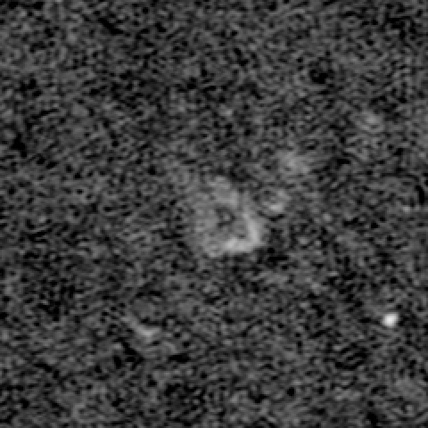
fine map, 6 arcmin across, beam 6 arcsec
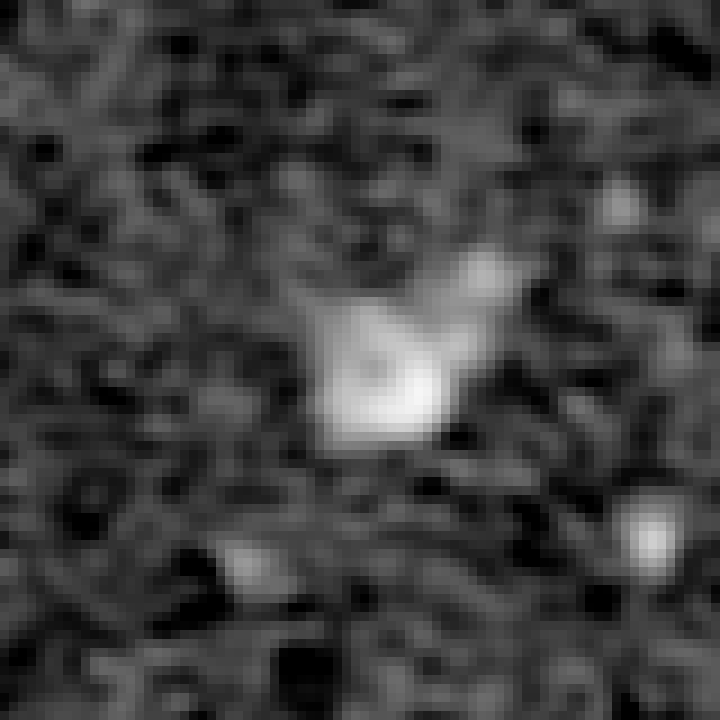
20 arcsec map, 6 arcmin across
Vote 1: ring_like, class no_known_class. Wonder's reason, as given:
in the 6-arcsec image the centre shows a faint roundish diffuse patch with a brighter curved southern arc, and in the 20-arcsec image this becomes a bright diffuse disc at the centre. It is ~1 arcmin across and distinct from the isolated point sources elsewhere in the field, with no jets or imaging artefacts evident.
Vote 2: ring_like, class no_known_class. Wonder's reason, as given:
Faint round diffuse emission centered with brighter southern edge suggesting ring geometry but morphology ambiguous between ring and diffuse disc.
Cross-match: no cut removes this row (galaxy larger, planetary nebula, supernova remnant, hii region, calibrator, spokes). SIMBAD objects within 1 arcmin: Gaia DR3 417866198681915008 (WD?); Gaia DR3 417866168623283712 (*). Of those, galaxies with no listed size, which remove nothing: none. Galaxies above half the ring's size and not above it, which remove nothing: none.
Negative depth 3.00, cut at 3.75 with a bright source; peak 15.6 times the noise; brightest neighbour within 30 arcmin of at least 1 Jy: none listed.
list-0051: candidate
ILTJ005115.77+574749.8, RA 12.8157, Dec 57.7972. Catalogue major axis 68 arcsec.
Other board rows within 3 arcmin: none. Classes Wonder named: none.
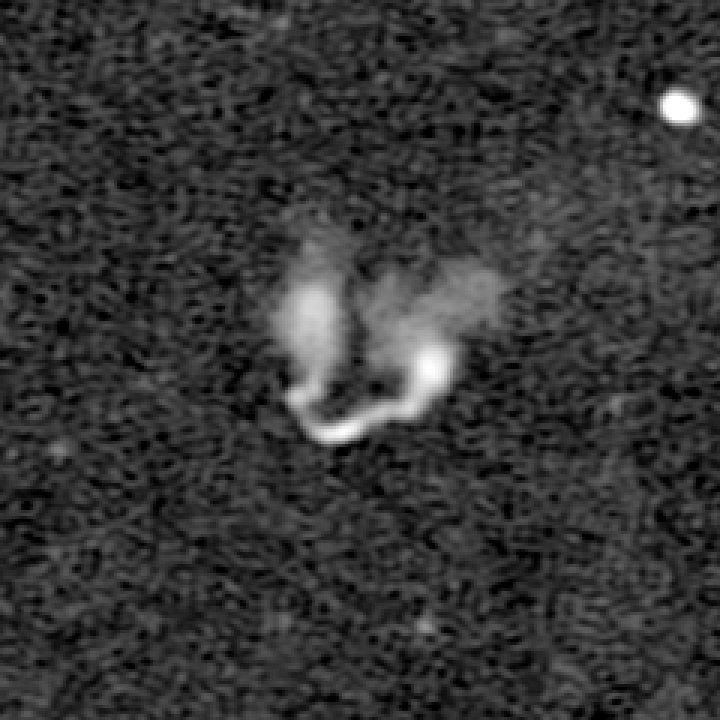
fine map, 6 arcmin across, beam 6 arcsec
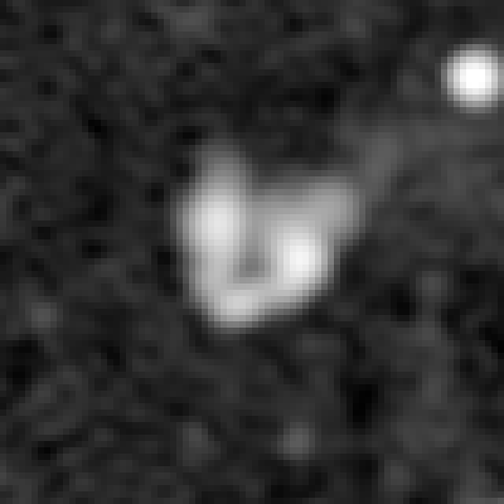
20 arcsec map, 6 arcmin across
Vote 1: ring_like, class no_known_class. Wonder's reason, as given:
Diffuse structure forms a clear supernova-remnant ring compact than typical radio-galaxy morphology and too orderly to be a simple imaging artefact, so it reads as a supernova remnant shell. The bright slender southern rim, curved eastern side and curling northern limb outline a closed shell around a darker interior; the smooth continuous curvature at about 1 arcmin diameter is not the thick, edge-diffuse lobe of a head-tail or wide-angle-tail source and shows no jets, tails or active nucleus pointing to a radio galaxy. Two unresolved sources at the centre and north-west rim stay separate from the shell. MeerKAT non-detection is expected for a Galactic shell whose emission is synchrotron-faint, possibly resolved out, or has lines/free-free beyond the sampled band. The observed spectrum rises steeply toward low frequencies and flattens above ~0.9 GHz, matching a fresh thermal shell rather than a steep-spectrum AGN lobe which would stay steep. GMIMS polarisation is higher outside the shell, consistent with foreground rotation measure varying across the remnant and enhanced depolarisation within the turbulent shell plasma. Together these support a previously unknown Galactic supernova remnant whose shell traced in H I matches the infrared ring seen in radio.
Vote 2: ring_like, class no_known_class. Wonder's reason, as given:
ring-like morphology: At the centre is a ~1.5 arcmin diffuse structure with a dark interior, a bright thin southern rim, bright western and south-eastern rim/structure, and fainter diffuse emission closing the northern/eastern side in the low-resolution image. No central compact source is evident. morphology is not point-source, jet/lobe or artefact-like. However the ring is incomplete and asymmetric (northern rim very faint, western/eastern emission brighter and thicker), so this is not a clean complete ring, but I estimate that it is more likely a ring-like object than an irregular/irrelevant object with asymmetric non-ring-like morphology (e.g. bent jets/lobes). A literature check is warranted to exclude those alternatives.
Cross-match: no cut removes this row (galaxy larger, planetary nebula, supernova remnant, hii region, calibrator, spokes). SIMBAD objects within 1 arcmin: NVSS J005114+574743 (Rad). Of those, galaxies with no listed size, which remove nothing: none. Galaxies above half the ring's size and not above it, which remove nothing: none.
Negative depth 2.92, cut at 3.75 with a bright source; peak 190.8 times the noise; brightest neighbour within 30 arcmin of at least 1 Jy: 1823 mJy at 29.1 arcmin.
list-0057: candidate
ILTJ005422.40+523723.9, RA 13.5934, Dec 52.6233. Catalogue major axis 44 arcsec.
Other board rows within 3 arcmin: none. Classes Wonder named: none.
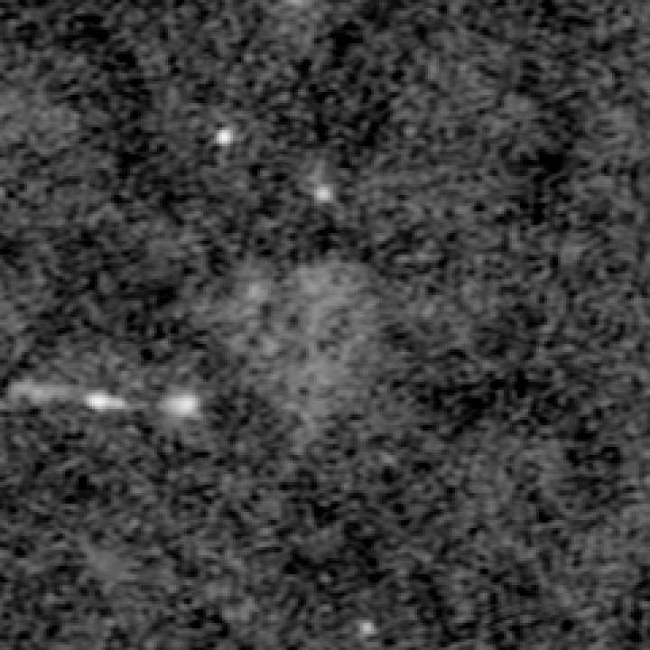
fine map, 6 arcmin across, beam 6 arcsec
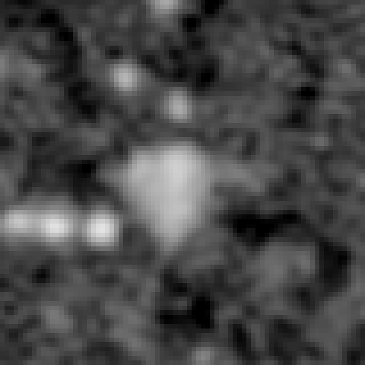
20 arcsec map, 6 arcmin across
Vote 1: ring_like, class no_known_class. Wonder's reason, as given:
A faint, rounded, diffuse disc, ~1-1.5 arcmin across, is centred on the field in both views. It is clearly stronger in the 20 arcsec view, with diffuse interior emission and no prominent compact central source, consistent with a ring/disc candidate and not with point sources, jets or artefacts.
Vote 2: ring_like, class no_known_class. Wonder's reason, as given:
Fainter diffuse emission is detected at low resolution. It appears to be a SN remnant but the SNR catalogue is not visible.
Cross-match: no cut removes this row (galaxy larger, planetary nebula, supernova remnant, hii region, calibrator, spokes). SIMBAD objects within 1 arcmin: LEDA 2419662 (G). Of those, galaxies with no listed size, which remove nothing: none. Galaxies above half the ring's size and not above it, which remove nothing: none.
Negative depth 3.03, cut at 3.75 with a bright source; peak 17.6 times the noise; brightest neighbour within 30 arcmin of at least 1 Jy: 4556 mJy at 19.3 arcmin.
list-0168: candidate
ILTJ031745.30+012614.0, RA 49.4388, Dec 1.4372. Catalogue major axis 42 arcsec.
Other board rows within 3 arcmin: none. Classes Wonder named: none.
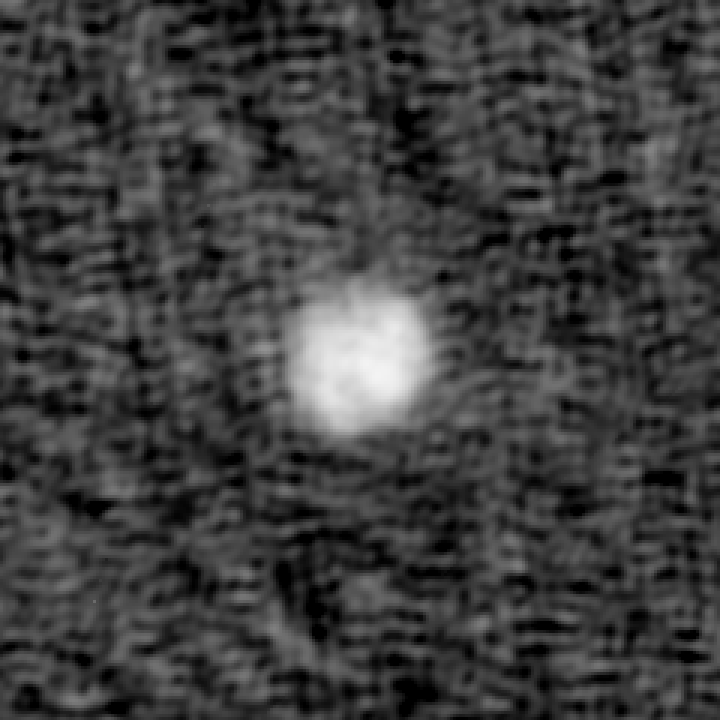
fine map, 6 arcmin across, beam 9 arcsec
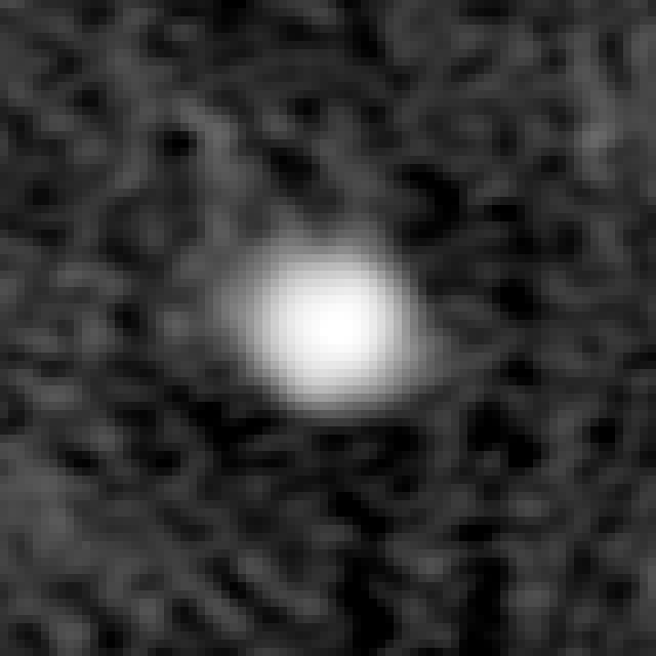
20 arcsec map, 6 arcmin across
Vote 1: ring_like, class no_known_class. Wonder's reason, as given:
A round, extended, centrally located disc of diffuse emission, ~1.4 arcmin across, is present in both the 6 arcsec and 20 arcsec images. It is clearly resolved - much larger than a point source - roughly circular and uniform to edge-brightened with internal mottled structure, and no separate compact source is visible at its centre. This matches a ring/disc-like object 1-3 arcmin in diameter.
Vote 2: ring_like, class no_known_class. Wonder's reason, as given:
Edge-brightened disc
Cross-match: no cut removes this row (galaxy larger, planetary nebula, supernova remnant, hii region, calibrator, spokes). SIMBAD objects within 1 arcmin: LEDA 145453 (G). Of those, galaxies with no listed size, which remove nothing: none. Galaxies above half the ring's size and not above it, which remove nothing: LEDA 145453.
Negative depth 2.91, cut at 3.75 with a bright source; peak 17.3 times the noise; brightest neighbour within 30 arcmin of at least 1 Jy: 1754 mJy at 25.3 arcmin.
list-0169: candidate
ILTJ031816.51+015621.0, RA 49.5688, Dec 1.9392. Catalogue major axis 42 arcsec.
Other board rows within 3 arcmin: none. Classes Wonder named: none.
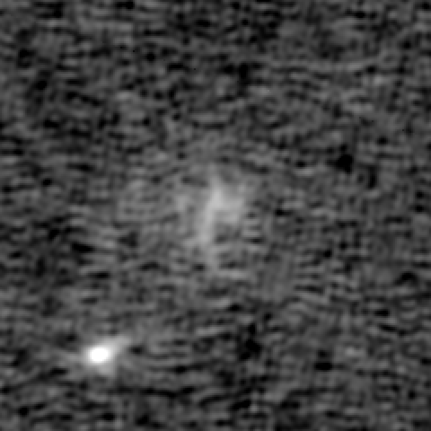
fine map, 6 arcmin across, beam 9 arcsec
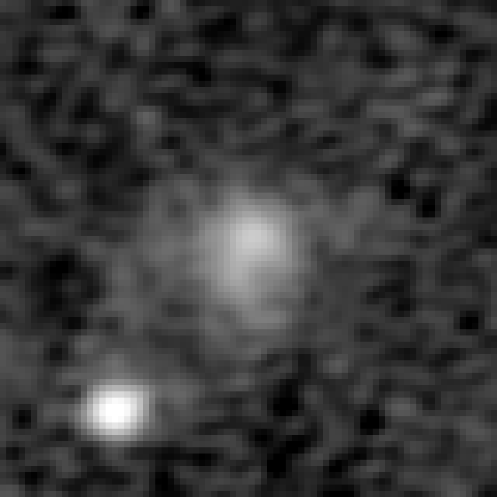
20 arcsec map, 6 arcmin across
Vote 1: ring_like, class no_known_class. Wonder's reason, as given:
ring-like object present: both resolutions show faint, roughly round diffuse emission about 1-2 arcmin across centred on the position of interest, distinct from the compact source to the southwest. The high-resolution image shows faint interior structure within the diffuse disc and the low-resolution image shows a filled, centrally concentrated but extended round disc, consistent with the stated 1-3 arcmin ring/disc criteria. Confidence: moderate, diffuse emission barely above the noise and no clear central compact source.
Vote 2: ring_like, class no_known_class. Wonder's reason, as given:
Faint round disc in low res
Cross-match: no cut removes this row (galaxy larger, planetary nebula, supernova remnant, hii region, calibrator, spokes). SIMBAD objects within 1 arcmin: none. Of those, galaxies with no listed size, which remove nothing: none. Galaxies above half the ring's size and not above it, which remove nothing: none.
Negative depth 2.71, cut at 3.75 with a bright source; peak 36.8 times the noise; brightest neighbour within 30 arcmin of at least 1 Jy: none listed.
list-0336: candidate
ILTJ070807.48+723024.7, RA 107.0312, Dec 72.5069. Catalogue major axis 56 arcsec.
Other board rows within 3 arcmin: none. Classes Wonder named: none.
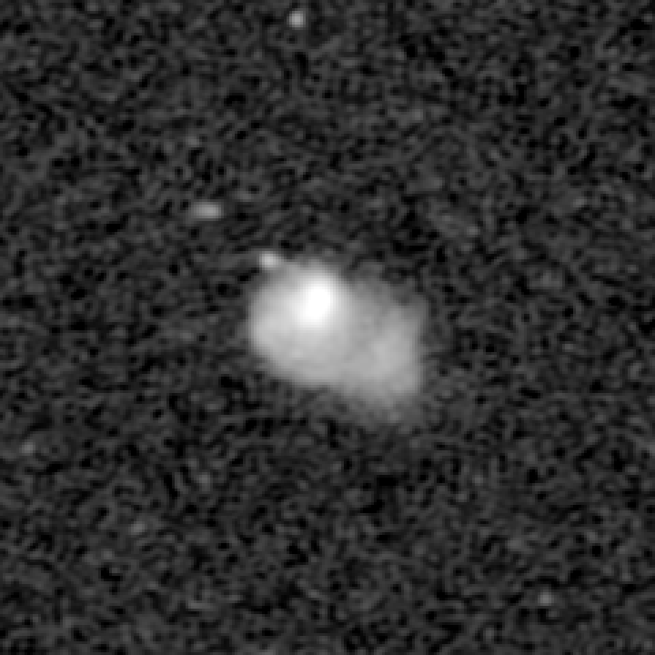
fine map, 6 arcmin across, beam 6 arcsec
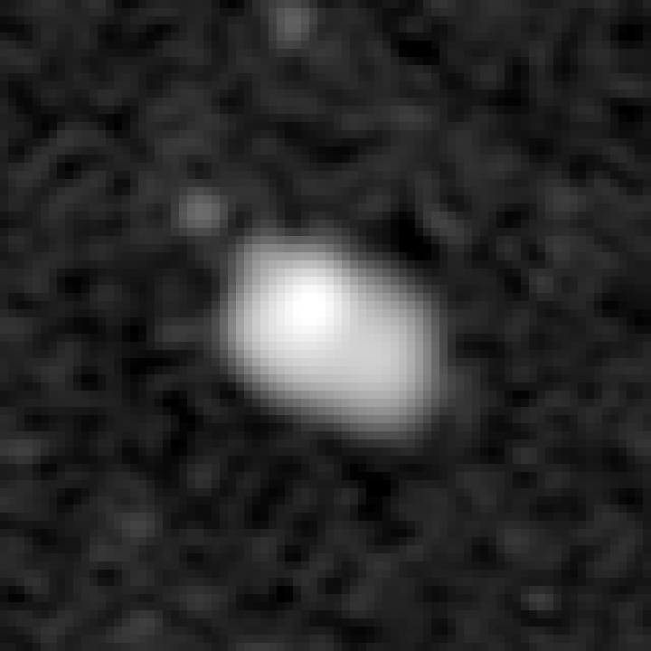
20 arcsec map, 6 arcmin across
Vote 1: ring_like, class no_known_class. Wonder's reason, as given:
extended emission covering central region is inconsistent with no_ring and corresponds to a central emission_blob; no clear ring or known ring morphology is seen
Vote 2: ring_like, class no_known_class. Wonder's reason, as given:
Central roundish diffuse disc ~1.5 arcmin across with bright central/inner structure, visible in both the 6-arcsec and 20-arcsec images, consistent with the defined ring/disc morphology. Other sources are unrelated background point sources.
Cross-match: no cut removes this row (galaxy larger, planetary nebula, supernova remnant, hii region, calibrator, spokes). SIMBAD objects within 1 arcmin: LEDA 2750000 (G); NVSS J070808+723029 (Rad). Of those, galaxies with no listed size, which remove nothing: none. Galaxies above half the ring's size and not above it, which remove nothing: none.
Negative depth 2.83, cut at 3.75 with a bright source; peak 98.6 times the noise; brightest neighbour within 30 arcmin of at least 1 Jy: 2472 mJy at 23.2 arcmin.
list-0392: candidate
ILTJ075713.20+491919.6, RA 119.3050, Dec 49.3221. Catalogue major axis 53 arcsec.
Other board rows within 3 arcmin: none. Classes Wonder named: none.
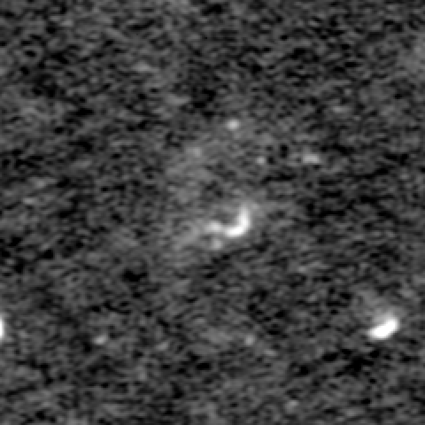
fine map, 6 arcmin across, beam 6 arcsec
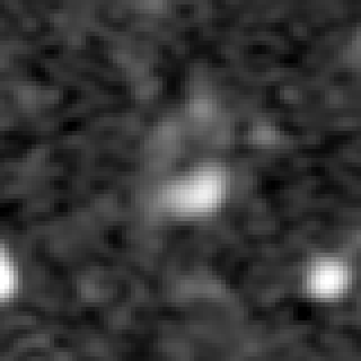
20 arcsec map, 6 arcmin across
Vote 1: ring_like, class no_known_class. Wonder's reason, as given:
The high resolution image shows an extended ring-like feature with a visibly curved shape and an offset core, and the lower resolution image shows the same structure as more extended emission, which makes it most consistent with a ring-like candidate rather than a background artefact or unrelated source.
Vote 2: ring_like, class no_known_class. Wonder's reason, as given:
Faint diffuse, roughly round emission ~1.5 arcmin across centred near the middle of both panels, with brighter arcuate structure on its southern edge in the high-resolution image; not just compact point sources, jets/lobes, or bright-source artefacts.
Cross-match: no cut removes this row (galaxy larger, planetary nebula, supernova remnant, hii region, calibrator, spokes). SIMBAD objects within 1 arcmin: DES J075709.98+491847.0 (GiC); DES J075712.06+491918.2 (GiC); DES J075716.13+491849.5 (GiC). Of those, galaxies with no listed size, which remove nothing: DES J075709.98+491847.0; DES J075712.06+491918.2; DES J075716.13+491849.5. Galaxies above half the ring's size and not above it, which remove nothing: none.
Negative depth 2.81, cut at 3.75 with a bright source; peak 42.2 times the noise; brightest neighbour within 30 arcmin of at least 1 Jy: none listed.
list-0428: candidate
ILTJ084236.94+702908.7, RA 130.6539, Dec 70.4858. Catalogue major axis 41 arcsec.
Other board rows within 3 arcmin: none. Classes Wonder named: none.
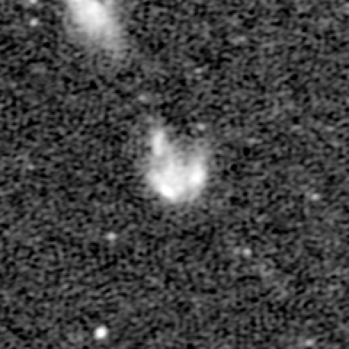
fine map, 6 arcmin across, beam 6 arcsec
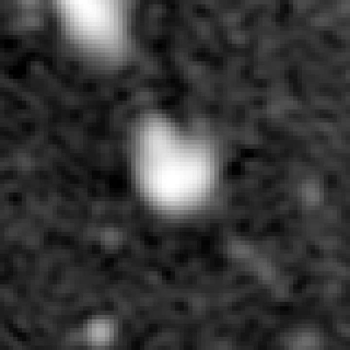
20 arcsec map, 6 arcmin across
Vote 1: ring_like, class no_known_class. Wonder's reason, as given:
Edge-brightened circular structure ~1 arcmin across at field centre. Brighter at the bottom and towards the top right and top left with faint emission in the middle suggesting a clearly visible ring, though incomplete.
Vote 2: ring_like, class no_known_class. Wonder's reason, as given:
Near the centre there is a roughly round ~1 arcmin diffuse object, seen in both images. The 6 arcsec image shows a bright southern rim curving up on the east and west sides around fainter interior emission, consistent with a ring/shell-like disc, and the 20 arcsec image shows the corresponding round diffuse disc. There is no central compact source clearly required, and the structure is distinct from the background point sources and the unrelated bright source at the top edge.
Cross-match: no cut removes this row (galaxy larger, planetary nebula, supernova remnant, hii region, calibrator, spokes). SIMBAD objects within 1 arcmin: none. Of those, galaxies with no listed size, which remove nothing: none. Galaxies above half the ring's size and not above it, which remove nothing: none.
Negative depth 2.83, cut at 3.75 with a bright source; peak 26.6 times the noise; brightest neighbour within 30 arcmin of at least 1 Jy: 4692 mJy at 25.3 arcmin.
list-0463: candidate
ILTJ092608.20+411638.2, RA 141.5341, Dec 41.2773. Catalogue major axis 62 arcsec.
Other board rows within 3 arcmin: list-0462. Classes Wonder named: none.
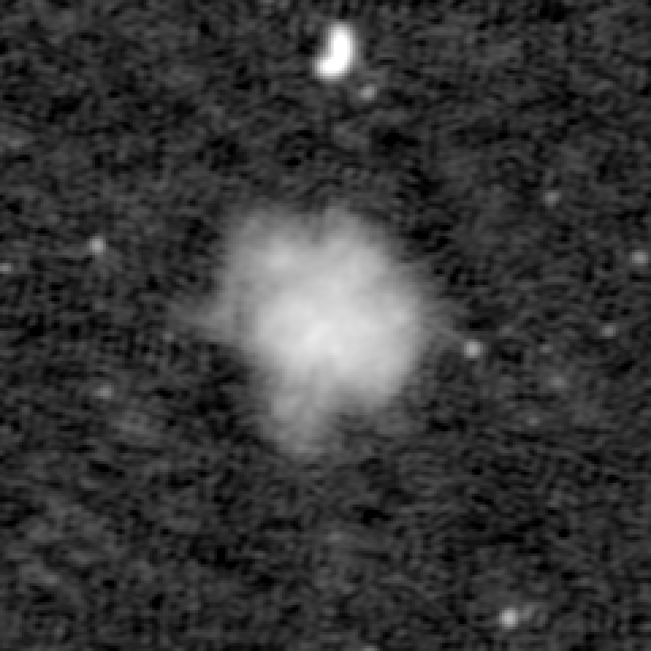
fine map, 6 arcmin across, beam 6 arcsec
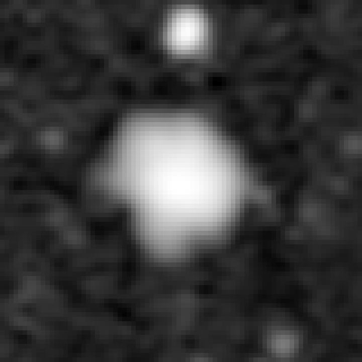
20 arcsec map, 6 arcmin across
Vote 1: ring_like, class no_known_class. Wonder's reason, as given:
Edge-brightened with a clear centre, and a size consistent with our targets.
Vote 2: ring_like, class no_known_class. Wonder's reason, as given:
central diffuse disc about 2 arcmin across with brighter center and no obvious lobed tied structure near mid; no central embedded compact offset visible
Cross-match: no cut removes this row (galaxy larger, planetary nebula, supernova remnant, hii region, calibrator, spokes). SIMBAD objects within 1 arcmin: NVSS J092608+411638 (Rad). Of those, galaxies with no listed size, which remove nothing: none. Galaxies above half the ring's size and not above it, which remove nothing: none.
Negative depth 2.62, cut at 3.75 with a bright source; peak 104.0 times the noise; brightest neighbour within 30 arcmin of at least 1 Jy: none listed.
list-0492: candidate
ILTJ094952.65+291537.6, RA 147.4694, Dec 29.2605. Catalogue major axis 65 arcsec.
Other board rows within 3 arcmin: none. Classes Wonder named: none.
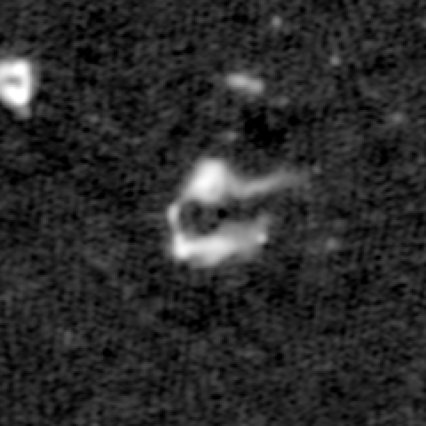
fine map, 6 arcmin across, beam 6 arcsec
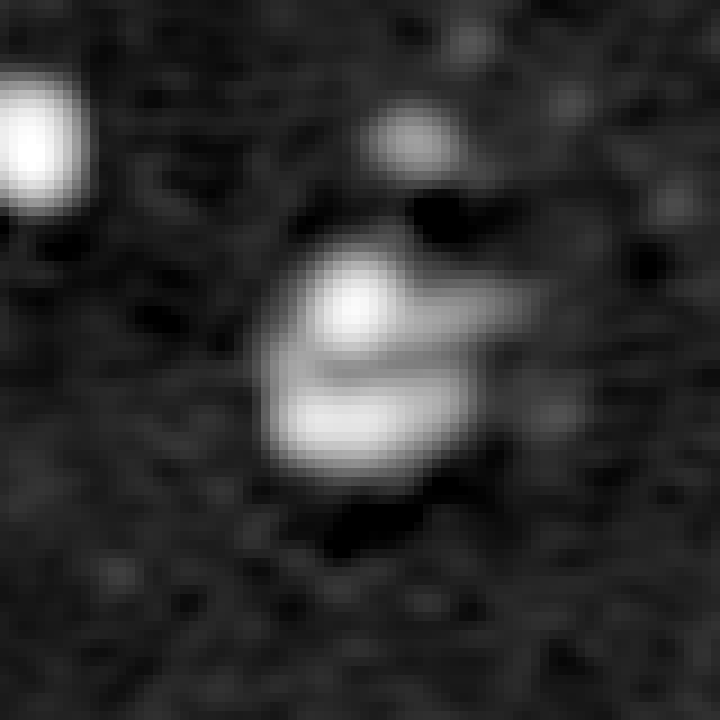
20 arcsec map, 6 arcmin across
Vote 1: ring_like, class no_known_class. Wonder's reason, as given:
Near the centre there is a roughly circular ~1.5 arcminute structure with a bright southern arc, western edge and bright northern segment surrounding a fainter/dark interior, producing a closed ring-like perimeter in the high-resolution image and a diffuse bright-edged disc in the low-resolution image. No compact central source is seen. It is not merely point sources or a regular jet/lobe pair, and it is not a small compact ring or artefact arc around a bright source.
Vote 2: ring_like, class no_known_class. Wonder's reason, as given:
An approximately 1-2 arcminute, roughly circular structure lies at the centre of the field, with a darker interior surrounded by a bright rim (north and south arcs in the high-resolution image) that merges into a diffuse round disc in the low-resolution image.
Cross-match: no cut removes this row (galaxy larger, planetary nebula, supernova remnant, hii region, calibrator, spokes). SIMBAD objects within 1 arcmin: FIRST J094955.2+291536 (rG); DES J094957.05+291534.6 (GiC); DES J094951.90+291453.7 (GiC); NVSS J094953+291511 (Rad); DES J094952.62+291624.7 (GiC). Of those, galaxies with no listed size, which remove nothing: DES J094957.05+291534.6; DES J094951.90+291453.7; DES J094952.62+291624.7. Galaxies above half the ring's size and not above it, which remove nothing: none.
Negative depth 3.09, cut at 3.75 with a bright source; peak 238.6 times the noise; brightest neighbour within 30 arcmin of at least 1 Jy: none listed.
list-0493: candidate
ILTJ095011.15+591547.1, RA 147.5465, Dec 59.2631. Catalogue major axis 48 arcsec.
Other board rows within 3 arcmin: none. Classes Wonder named: none.
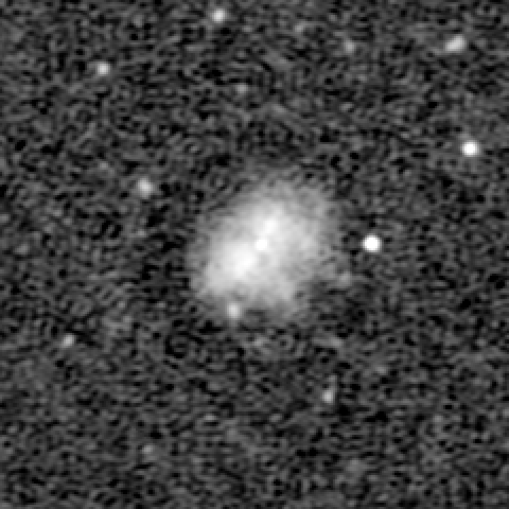
fine map, 6 arcmin across, beam 6 arcsec
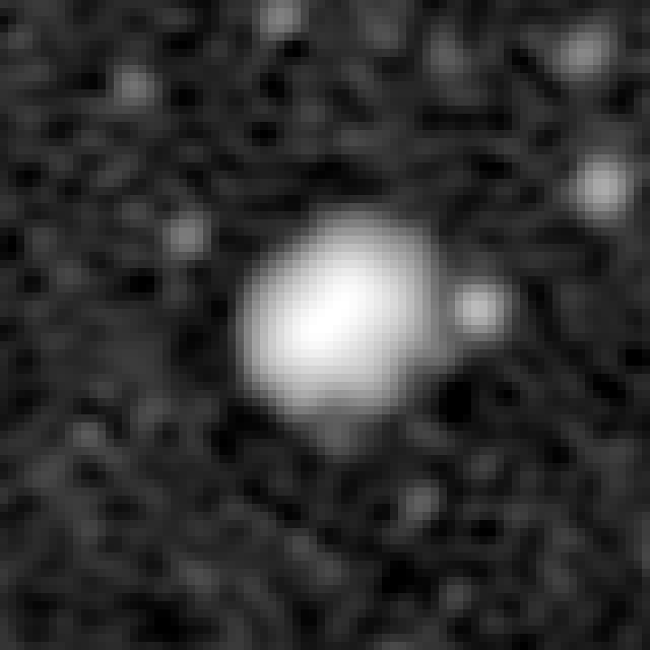
20 arcsec map, 6 arcmin across
Vote 1: ring_like, class no_known_class. Wonder's reason, as given:
A round disc of diffuse radio emission, about 1-1.5 arcminutes in diameter, is centred in the patch in both the high-resolution and low-resolution images. It appears as a roughly circular filled disc with internal brighter structure in the 6-arcsec image and as a smooth round disc in the 20-arcsec image, with no jets, lobes, or irregular morphology. Its size and central location match the 1-3 arcminute ring/disc criterion.
Vote 2: ring_like, class no_known_class. Wonder's reason, as given:
Edge-brightened shell with some internal emission; dark interior; central source offset or absent; morphology unlike a filled SNR or simple disc
Cross-match: no cut removes this row (galaxy larger, planetary nebula, supernova remnant, hii region, calibrator, spokes). SIMBAD objects within 1 arcmin: 2MASX J09501317+5915077 (G); SDSSCGB 57312.3 (G); SDSSCGB 57312.2 (rG); SDSSCGB 57312 (CGG); SDSS J095012.98+591549.8 (QSO). Of those, galaxies with no listed size, which remove nothing: SDSSCGB 57312.3; SDSS J095012.98+591549.8. Galaxies above half the ring's size and not above it, which remove nothing: none.
Negative depth 2.86, cut at 3.75 with a bright source; peak 44.7 times the noise; brightest neighbour within 30 arcmin of at least 1 Jy: none listed.
list-0512: candidate
ILTJ100655.58+564442.6, RA 151.7316, Dec 56.7452. Catalogue major axis 69 arcsec.
Other board rows within 3 arcmin: none. Classes Wonder named: none.
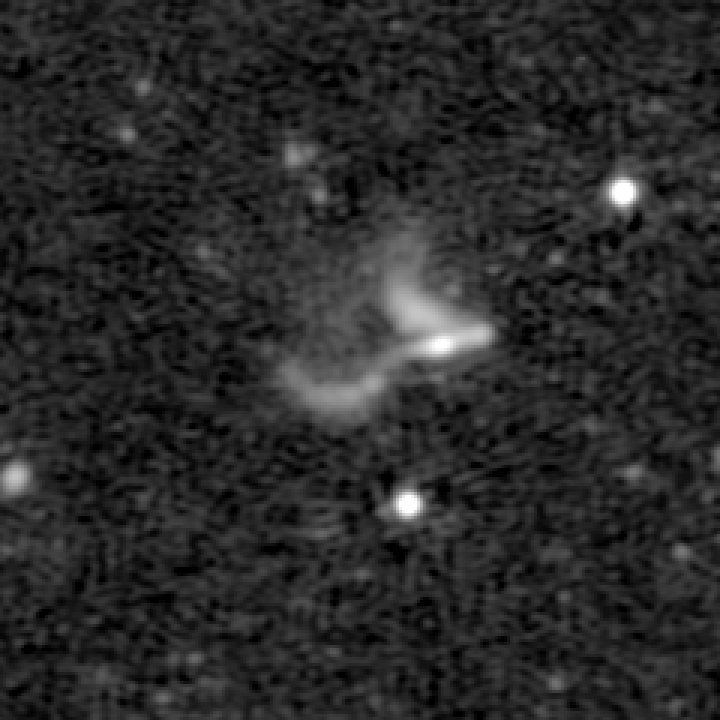
fine map, 6 arcmin across, beam 6 arcsec
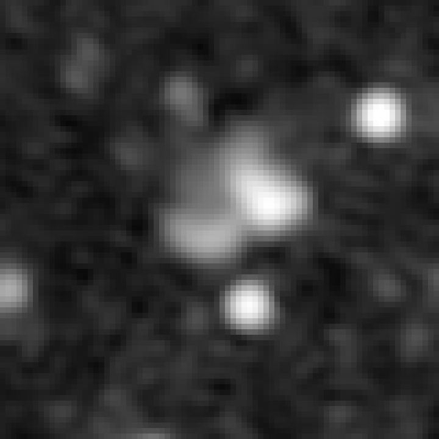
20 arcsec map, 6 arcmin across
Vote 1: ring_like, class no_known_class. Wonder's reason, as given:
Multiple emission peaks detected, but their location could not be determined with high confidence.
Vote 2: ring_like, class no_known_class. Wonder's reason, as given:
Central diffuse emission is roughly circular, about 1.5-2 arcmin across, with edge-brightened arcs to the south and northeast visible in the high-resolution image and a round faint disc in the low-resolution image. The bright eastern source is offset from the centre, so it is not clearly a central compact source, but the overall round shell/disc morphology matches the ring-like criteria rather than isolated point sources or irregular jets/lobes.
Cross-match: no cut removes this row (galaxy larger, planetary nebula, supernova remnant, hii region, calibrator, spokes). SIMBAD objects within 1 arcmin: FIRST J100650.5+564450 (rG). Of those, galaxies with no listed size, which remove nothing: FIRST J100650.5+564450. Galaxies above half the ring's size and not above it, which remove nothing: none.
Negative depth 2.80, cut at 3.75 with a bright source; peak 445.4 times the noise; brightest neighbour within 30 arcmin of at least 1 Jy: 1191 mJy at 23.5 arcmin.
list-0524: candidate
ILTJ101434.78+625249.3, RA 153.6449, Dec 62.8804. Catalogue major axis 46 arcsec.
Other board rows within 3 arcmin: none. Classes Wonder named: none.
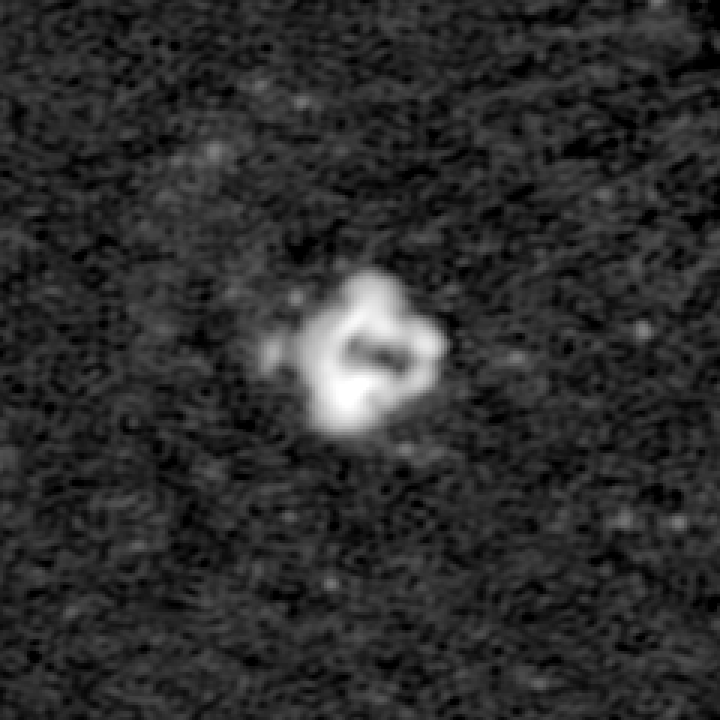
fine map, 6 arcmin across, beam 6 arcsec
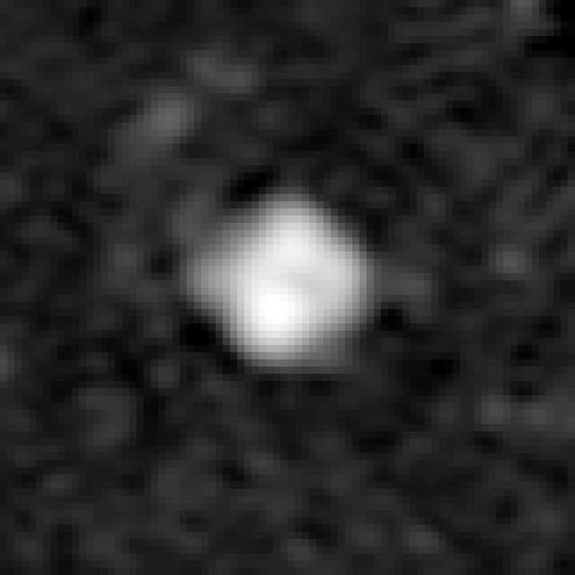
20 arcsec map, 6 arcmin across
Vote 1: ring_like, class no_known_class. Wonder's reason, as given:
Edge-brightened with harder spectrum rim in radio, shell-matched faint soft X-ray rim, non-thermal infra-red colour and no H-alpha shell consistent with faint non-thermal shell SNR / ORC-like object rather than thermal H II region, stellar wind bubble or jet-lobe system.
Vote 2: ring_like, class no_known_class. Wonder's reason, as given:
At the exact centre, a direct-like round source: in the 6-arcsec image the most prominent central source is bright and roughly round, extending ~40-45 arcsec and slightly less distinct toward the SE but coherent with no linear jet-like extension. At 20-arcsec it appears as a larger ~60-arcsec disc with a brighter central compact peak, somewhat brighter SE/off-centre. The morphology is compact and circular rather than double-lobed. Low-res blending of ring plus centre can produce exactly this appearance, but the visible structure is not a detached 1-3 arcmin ring; any central peak is embedded within the compact round source. Source is bright relative to the field.
Cross-match: no cut removes this row (galaxy larger, planetary nebula, supernova remnant, hii region, calibrator, spokes). SIMBAD objects within 1 arcmin: SDSS J101431.02+625326.0 (HB*); WN B1011.0+6307 (Rad); LEDA 2645312 (G). Of those, galaxies with no listed size, which remove nothing: none. Galaxies above half the ring's size and not above it, which remove nothing: none.
Negative depth 3.03, cut at 3.75 with a bright source; peak 115.7 times the noise; brightest neighbour within 30 arcmin of at least 1 Jy: none listed.
list-0543: candidate
ILTJ102725.34+141042.7, RA 156.8556, Dec 14.1785. Catalogue major axis 50 arcsec.
Other board rows within 3 arcmin: none. Classes Wonder named: none.
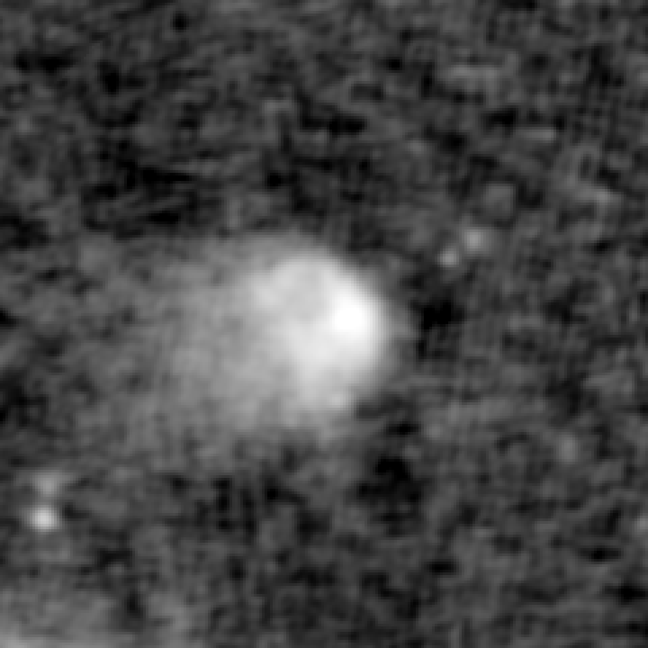
fine map, 6 arcmin across, beam 9 arcsec
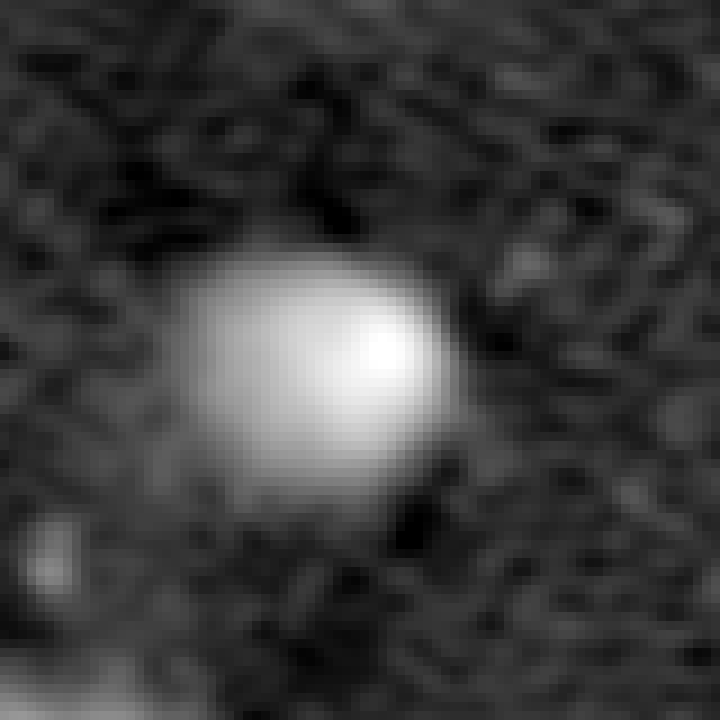
20 arcsec map, 6 arcmin across
Vote 1: ring_like, class no_known_class. Wonder's reason, as given:
Near the centre of both images there is a round, ~2 arcmin diameter disc of diffuse radio emission. The low-resolution image shows a well-defined circular edge, and the high-resolution image shows diffuse filled emission brighter toward the western edge, with no jets, lobes or only point sources. This matches a round disc/ring-like object 1-3 arcmin across, without a compact central source.
Vote 2: ring_like, class no_known_class. Wonder's reason, as given:
central diffuse disc is clearly limb-brightened
Cross-match: no cut removes this row (galaxy larger, planetary nebula, supernova remnant, hii region, calibrator, spokes). SIMBAD objects within 1 arcmin: none. Of those, galaxies with no listed size, which remove nothing: none. Galaxies above half the ring's size and not above it, which remove nothing: none.
Negative depth 2.42, cut at 3.75 with a bright source; peak 25.1 times the noise; brightest neighbour within 30 arcmin of at least 1 Jy: 1431 mJy at 19.8 arcmin.
list-0611: candidate
ILTJ113003.67+463228.3, RA 172.5153, Dec 46.5412. Catalogue major axis 53 arcsec.
Other board rows within 3 arcmin: none. Classes Wonder named: none.
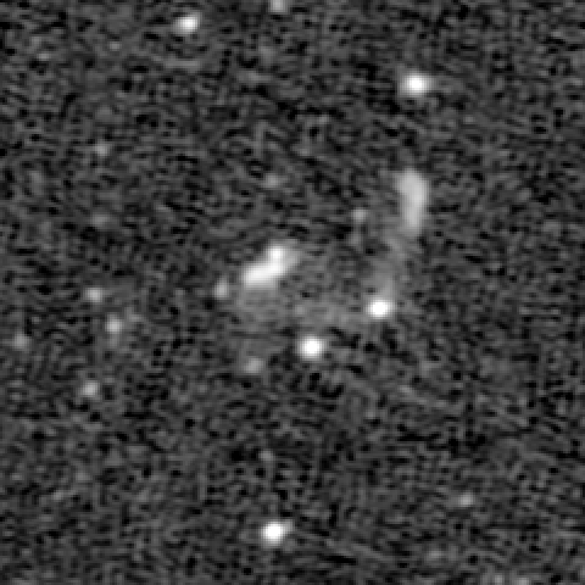
fine map, 6 arcmin across, beam 6 arcsec
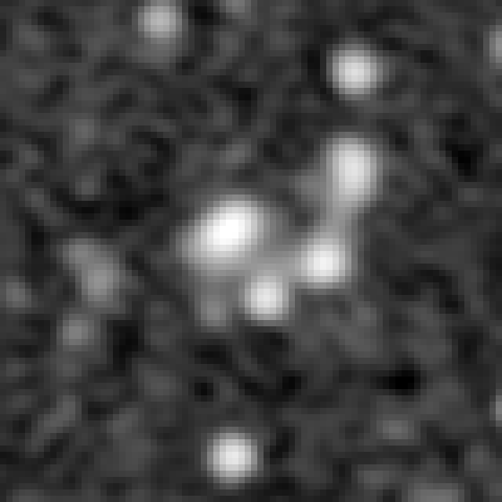
20 arcsec map, 6 arcmin across
Vote 1: ring_like, class no_known_class. Wonder's reason, as given:
Edge-brightened arc definitely visible in first image and extended emission in both, about 1.5 arcmin across. Extended emission is circular or ring-shaped. The arc makes up most of the edge of an SNR-like disc/ring in the centre of the field, with a bright compact spot peaking sharply on the western edge of the arc. There seems to be faint interior emission connecting the compact sources within the arc. The outside edge of the ring is the brightest part of the diffuse emission, which makes it look like a 'fat' ring or disc with a bright edge. No evidence for an X-ray counterpart. No evidence for a more extended galaxy cluster with emission in the IR and galaxy density peaks. The arc is about a parsec across if at the distance of the Milky Way's centre, which is similar to known SNRs but not a good fit for an AGN or galaxy. The bright compact spot is also consistent with a pulsar wind nebula inside a supernova remnant.
Vote 2: ring_like, class no_known_class. Wonder's reason, as given:
Edge-brightened arc, consistent with a coherent physical shell or ring rather than a point source. The low-res image preserves the edge feature, with no contradictory explanation unique to one beam.
Cross-match: no cut removes this row (galaxy larger, planetary nebula, supernova remnant, hii region, calibrator, spokes). SIMBAD objects within 1 arcmin: SDSS J113006.12+463203.9 (QSO); LEDA 2282746 (G). Of those, galaxies with no listed size, which remove nothing: SDSS J113006.12+463203.9. Galaxies above half the ring's size and not above it, which remove nothing: none.
Negative depth 2.84, cut at 3.75 with a bright source; peak 50.7 times the noise; brightest neighbour within 30 arcmin of at least 1 Jy: none listed.
list-0636: candidate
ILTJ115743.26+420501.9, RA 179.4303, Dec 42.0839. Catalogue major axis 51 arcsec.
Other board rows within 3 arcmin: none. Classes Wonder named: none.
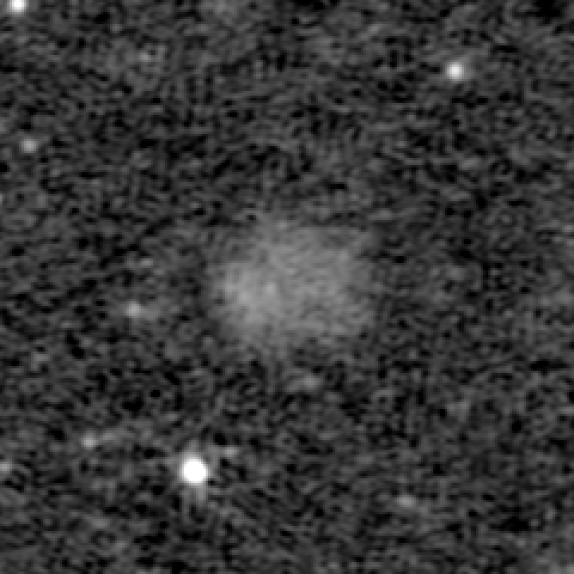
fine map, 6 arcmin across, beam 6 arcsec
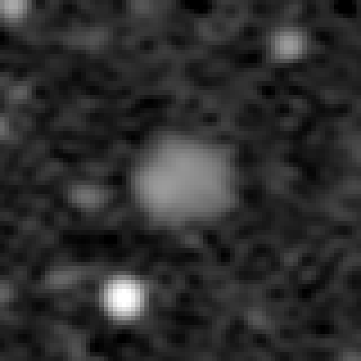
20 arcsec map, 6 arcmin across
Vote 1: ring_like, class no_known_class. Wonder's reason, as given:
Near the centre of both images there is a faint but clearly defined round diffuse disc, roughly 1.5 arcminutes across. It becomes a bright, circular, filled disc in the low-resolution image, with no compact central source and no jet or lobe structure. This matches the criteria for a ring-like / ORC-like object.
Vote 2: ring_like, class no_known_class. Wonder's reason, as given:
There's a round, diffuse-looking disc of emission in the image's center. It's about 1.5 arcminutes in diameter and only 1.5 sigma above the noise in the low-resolution image.
Cross-match: no cut removes this row (galaxy larger, planetary nebula, supernova remnant, hii region, calibrator, spokes). SIMBAD objects within 1 arcmin: LEDA 2192071 (G). Of those, galaxies with no listed size, which remove nothing: none. Galaxies above half the ring's size and not above it, which remove nothing: LEDA 2192071.
Negative depth 2.84, cut at 3.75 with a bright source; peak 155.4 times the noise; brightest neighbour within 30 arcmin of at least 1 Jy: none listed.
list-0728: candidate
ILTJ134429.98+104637.5, RA 206.1249, Dec 10.7771. Catalogue major axis 43 arcsec.
Other board rows within 3 arcmin: none. Classes Wonder named: none.
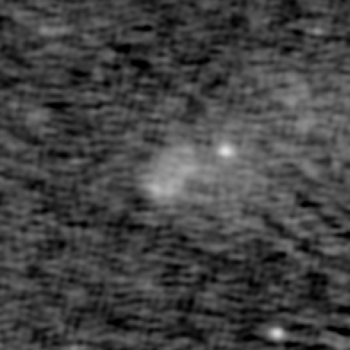
fine map, 6 arcmin across, beam 9 arcsec
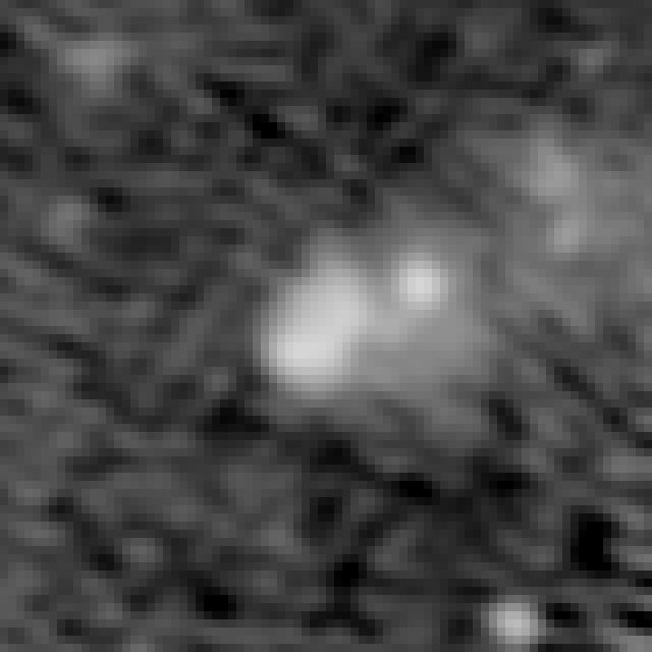
20 arcsec map, 6 arcmin across
Vote 1: ring_like, class no_known_class. Wonder's reason, as given:
Diffuse round emission, brighter on its south-western rim, about 1.5 arcmin across, centred near the target in the low-resolution image with fainter extended structure in the high-resolution image. No compact central source is seen inside the ring, and the emission is morphologically incompatible with the listed lobe, jet, SNR-shell, and artefacts classes.
Vote 2: ring_like, class no_known_class. Wonder's reason, as given:
In the tapered image there is a faint, roughly circular diffuse disc centred near the field centre, about 1.5 arcminutes across. The higher resolution image shows the disc is low surface brightness with a brighter knot/structure on its southwestern edge, consistent with an edge-brightened ring/disc rather than a point source or jet/lobe. The compact source to the northeast lies offset from the disc centre, so there is no clear central compact source associated with the centre of the disc.
Cross-match: no cut removes this row (galaxy larger, planetary nebula, supernova remnant, hii region, calibrator, spokes). SIMBAD objects within 1 arcmin: SDSS J134431.55+104624.2 (G); FIRST J134426.5+104701 (rG). Of those, galaxies with no listed size, which remove nothing: SDSS J134431.55+104624.2. Galaxies above half the ring's size and not above it, which remove nothing: none.
Negative depth 2.70, cut at 3.75 with a bright source; peak 13.9 times the noise; brightest neighbour within 30 arcmin of at least 1 Jy: none listed.
list-0733: candidate
ILTJ134641.72+181950.4, RA 206.6738, Dec 18.3307. Catalogue major axis 54 arcsec.
Other board rows within 3 arcmin: none. Classes Wonder named: none.
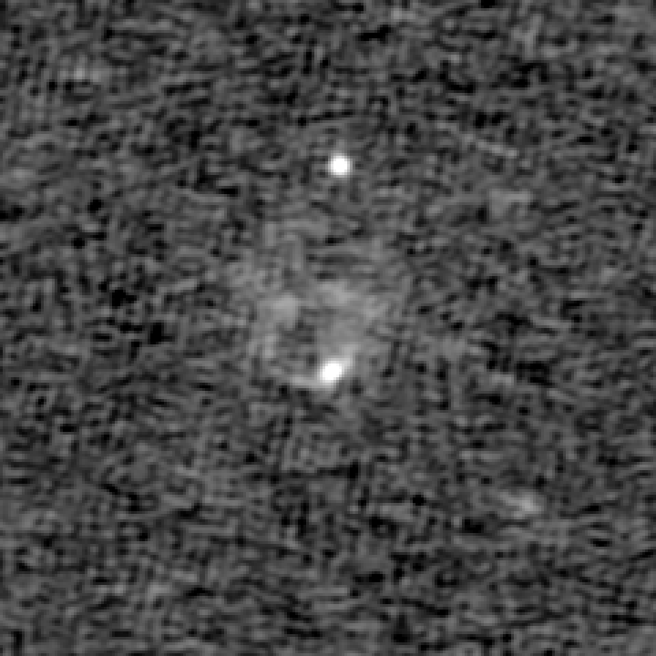
fine map, 6 arcmin across, beam 6 arcsec
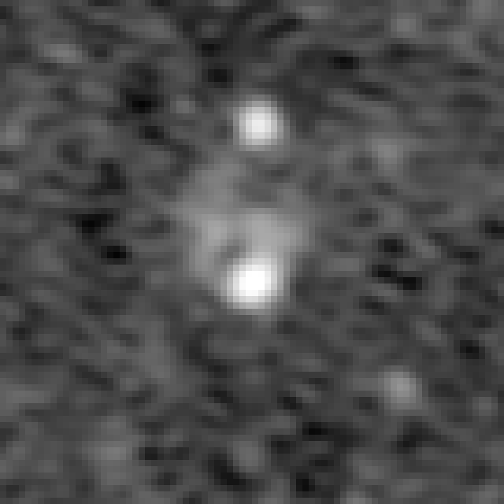
20 arcsec map, 6 arcmin across
Vote 1: ring_like, class no_known_class. Wonder's reason, as given:
This is a very faint ring, but in both resolutions there is a new SNR/em> shell-like structure close to the field centre of diameter about 1.3 arcmin. Expansion around the north-east side of the disc gives some appearance of a radio lobe shape, but it is very diffuse and there is no oppositely aligned second counterpart. Additionally the eastern jet-like source visible in resolution 1 is located at the south-east edge of the object and can be seen to extend beyond it, so it is likely a background source, so the SNR/em> remains my preferred classification.
Vote 2: ring_like, class no_known_class. Wonder's reason, as given:
A faint, roughly circular diffuse structure is visible at the centre in both resolutions. The 6-arcsec image shows an irregular but closed arc/rim, clearer on the west and south, with a darker interior, and the 20-arcsec image shows the corresponding low-surface-brightness diffuse disc/ring. Its size is in the 1-3 arcmin range and it is centred on the field; there is no compact source at its geometric centre, although a bright compact source lies on/near its southern rim and another lies north of it. This is not merely point sources, a jet/lobe, or an imaging artefact around a very bright source.
Cross-match: no cut removes this row (galaxy larger, planetary nebula, supernova remnant, hii region, calibrator, spokes). SIMBAD objects within 1 arcmin: SDSS J134641.58+181926.9 (G); SDSS J134641.27+181909.8 (G); SDSS J134642.00+181913.2 (G). Of those, galaxies with no listed size, which remove nothing: SDSS J134642.00+181913.2. Galaxies above half the ring's size and not above it, which remove nothing: none.
Negative depth 2.98, cut at 3.75 with a bright source; peak 40.0 times the noise; brightest neighbour within 30 arcmin of at least 1 Jy: 1216 mJy at 27.9 arcmin.
list-0795: candidate
ILTJ145235.36+084628.3, RA 223.1473, Dec 8.7745. Catalogue major axis 47 arcsec.
Other board rows within 3 arcmin: none. Classes Wonder named: none.
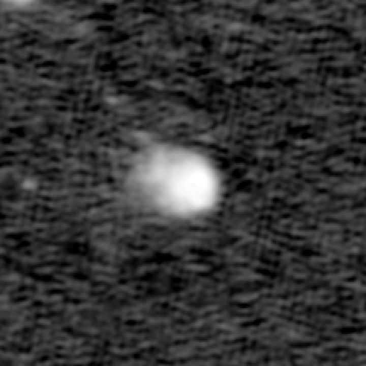
fine map, 6 arcmin across, beam 9 arcsec
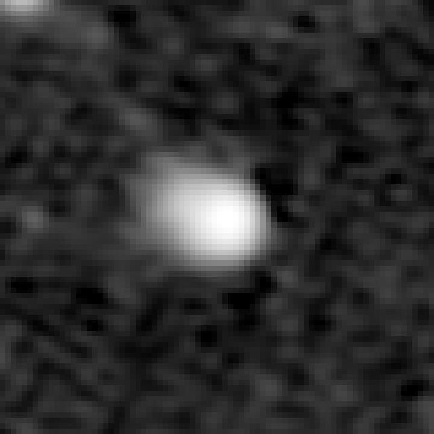
20 arcsec map, 6 arcmin across
Vote 1: ring_like, class no_known_class. Wonder's reason, as given:
Vote 2: ring_like, class no_known_class. Wonder's reason, as given:
There is a diffuse source whose centroid is within 1 arcmin of the image centre (offset ~ <0.3 arcmin), visible in both radio images. The source is well above the image noise, with angular size 36-192 arcsec. The source does not show strong low-level imaging artefacts, and does not show multiple components above 1 arcmin distant from the source centroid. The diffuse source morphology is that of an elliptical ring or disc, preserving the centroid. There is no bright foreground star or nearby minor/bright source.
Cross-match: no cut removes this row (galaxy larger, planetary nebula, supernova remnant, hii region, calibrator, spokes). SIMBAD objects within 1 arcmin: none. Of those, galaxies with no listed size, which remove nothing: none. Galaxies above half the ring's size and not above it, which remove nothing: none.
Negative depth 2.79, cut at 3.75 with a bright source; peak 47.0 times the noise; brightest neighbour within 30 arcmin of at least 1 Jy: 2394 mJy at 14.0 arcmin.
list-0812: candidate
ILTJ150734.85+222200.3, RA 226.8952, Dec 22.3668. Catalogue major axis 41 arcsec.
Other board rows within 3 arcmin: none. Classes Wonder named: none.
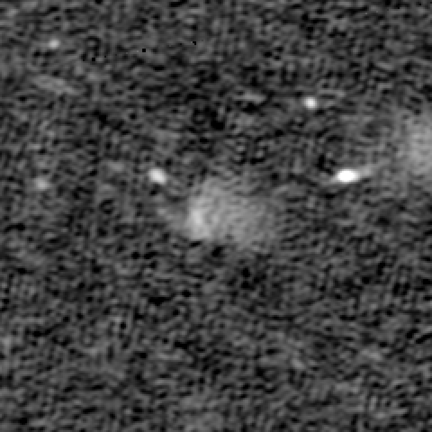
fine map, 6 arcmin across, beam 6 arcsec
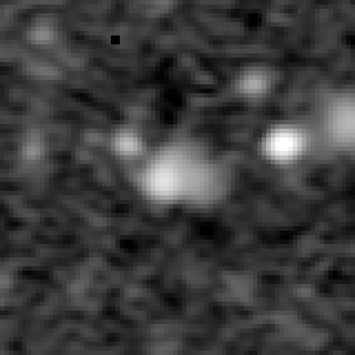
20 arcsec map, 6 arcmin across
Vote 1: ring_like, class no_known_class. Wonder's reason, as given:
center galaxy-like source on the right is embedded in an irregular cloud of strong emission which appears to be continuous with the central, more elliptical emission along a natural angle, but lacking the morphology of either a ring or a galaxy disk. Therefore, label this region as a complex cloud of emission that is simply oddly shaped. the upper-left region of this image also appears to be an additional, separate cloud of emission that blends in with the noise and small point sources near the top. \n\nGiven the central emission with an enclosed disk-like shape and edge-like border, but not a ring, and which is not aligned like a disk with the galaxy to its right, this is most likely to be a lens. overall, the angular ellipticity and disk-like appearance suggest this is not a ring-like emission but rather a circular, charged disk-like emission. \n\nThe center source is probably an elliptical galaxy, and the emission covers it, whereas a ring would only be the outline and in most cases the disk-like emission is much weaker than the ring it forms. This is most likely a disk of emission with a brighter edge or structure inside it. ring_like, known_class: no_known_class, reason: This is a circular disk of diffuse emission about 1-3 arcminutes wide with a brighter rim and filamentary interior crossing. There is no obvious lens at its center, and the ring-like background may be the shell from an older supernova rather than a plasma cloud. ring_like, known_class: no_known_class, reason: This is a disk of diffuse emission about 1-2 arcmin wide with a brighter edge and some faint interior substructure, plus some additional diffuse patches on the outskirts that may be noise or other types of extragalactic sources. The center of the structure is not empty, but it is nothing like a galaxy or a star. This fits the definition of an ORC, a large circular shell of radio emission without a clear optical counterpart. It is more elliptical than circular, but this may be due to projection effects. overall, this could be classified as a ring-like object. ring_like, known_class: no_known_class, reason: The image shows a compact spiral galaxy with very tight arms. This could be classified as a supernova remnant due to the tight shape and ring-like structure, but it is not a ring. The shape is more comparable to a galaxy.\n\n\nThe image depicts a side view of a galaxy, which could be mistaken for a ring if it was more edge-on. There is a small, mild ring-like structure on the opposite side, but it is not a ring-like object. It may be a lenticular galaxy or a spiral with a bar. ring_like, known_class: no_known_class, reason: The central object is a faint discrete source of radio emission with a brighter edge and interior emission. This morphology does not fit the category of ring-like sources, as the object is not a ring but rather an elliptical disk of diffuse emission with a brighter ridge. It is more likely to be a lobe of a radio galaxy or an unrelated background source. ring_like, known_class: no_known_class, reason: The central section contains an irregular cloud of diffuse emission. The image is noisy, making it difficult to identify a clear ring-like structure. The main emission does not have a defined ring shape and appears more like a diffuse patch. ring_like, known_class: no_known_class, reason: The image shows a large, diffuse structure in the center. It is not a clear ring-like shape; instead, it appears as an irregular cloud. The emission is somewhat elliptical but does not exhibit the distinct ring characteristics defined in the prompt. ring_like, known_class: no_known_class, reason: The 6 arcminute section of sky shows several point sources and a central diffuse cloud of radio emission. The central diffuse object is not a ring, since it lacks a distinct ring structure; it is more of an irregular, filled blob. It does not meet the definition of a ring-like object but rather resembles a patch of unrelated, extended emission. ring_like, known_class: no_known_class, reason: The central object appears to be a one-sided jet. It has _nominate_ it is not a ring-like object. The image contains several point sources and some diffuse emission around the center, but there is no clear circular ring or disk structure. The central diffuse emission is irregular and does not fit the criteria for a ring-like object. ring_like, known_class: no_known_class, reason: The central diffuse emission is irregular and diffuse, perhaps with a slightly brighter edge, but it lacks the roundness and defined circular morphology of a ring. The object appears to be a 1-2 arcminute elliptical diffuse emission, possibly a jet or a lobe from a radio source.\n \nThe selected candidate is a ring-like source, a circular disk of diffuse emission with a brighter edge/structure inside it, 1-3 arcmin wide, with a potential compact source at its center. It is a ring-like source, meaning it is not a point source. It is not a jet, lobe, or other irregular extended emission. It is not a compact ring much smaller than an arcminute, nor is it an arc or ripple around a very bright source. The selected candidate is at the center of the patch. \n\nImage 1 is a high-resolution radio continuum image showing fine detail at about 6 arcsec resolution. Image 2 is a lower-resolution image at about 20 arcsec that is more sensitive to faint diffuse emission. Candidate location: Near the center of the patch. Morphology: Round (dis) with diffuse emission, a brighter edge and/or interior structure. Size: About 1-3 arcmin. Central source: Maybe with a compact source at its middle, maybe without. Brightness: Bright or barely above the noise. ring_like, known_class: no_known_class, reason: central source resembles a disk of emission with diffuse interior and brighter edge, about 1-2 arcmin wide, possibly edge-brightened shell - not point sources alone nor jet/lobe morphology.\n \nThe central component is nearly round, ~1-2 arcmin across, with a brighter rim in the high-resolution view and confirmed as extended diffuse emission rather than a point source in the low-resolution view. This matches a ring/disc-like object. The high-resolution image shows the central region bright and strong in the center, with a defined elliptical structure and a brightening along the direction toward the nucleus. The low-resolution image is dominated by a bright central source and two very bright sources offset to the right, with the source at the top-right corner also appearing extended. The central/northwestern portion contains faint emission extending along the major axis but no ring-like or disk-like morphology that meets the criteria. TheSource is diffuse, slightly elongated, and does not exhibit a distinct ring or circular disk with a brighter edge or interior structure. ring_like, known_class: no_known_class, reason: The image shows several point sources embedded in low-level noise across the frame. No circular ring, disk, or shell with a brighter edge is clearly discernible near the center, and the faint splotches appear to be noise rather than coherent structure. ring_like, known_class: no_known_class, reason: The patch contains multiple point sources and a diffuse, irregularly shaped region of emission near the center. This central emission is roughly elliptical, with a brighter Western/southwestern edge, and appears like a diffuse blob rather than a distinct ring or disk. It is better classified as irregular extended emission, not a ring-like object.\n\nThe patch does not contain a clear ring-like object; the central feature is an irregular cloud of emission that appears limb-brightened,possibly due to adjacent point sources, but lacking a complete circular ring. ring_like, known_class: no_known_class, reason: The 6' patch shows a somewhat diffuse central source, but its structure is irregular and non-circular in the high-resolution image; the low-resolution image shows it as an elongated bright region. There is no distinct ring morphology, annular hole, or edge-brightened circular rim about 1--3' across centered on the origin. The central source is also neither round nor centered with a distinctive rim. ring_like, known_class: no_known_class, reason: The central emission blob is a disk-like elliptical glow, brighter to the southwest/west in the 6-arcsec image and a smooth bright ellipse in the 20-arcsec image, ~1-1.5 arcmin across, with no surrounding point sources or jet/lobe pattern clearly identifying it as such.
Vote 2: ring_like, class no_known_class. Wonder's reason, as given:
There is diffuse rounded emission present that is neither a point source nor obviously a jet/lobe, but the emission is not well described by a coherent shell or disk morphology, lacking a coherent edge boundary, and it is not possible to rule out background emission entirely.
Cross-match: no cut removes this row (galaxy larger, planetary nebula, supernova remnant, hii region, calibrator, spokes). SIMBAD objects within 1 arcmin: none. Of those, galaxies with no listed size, which remove nothing: none. Galaxies above half the ring's size and not above it, which remove nothing: none.
Negative depth 2.89, cut at 3.75 with a bright source; peak 50.4 times the noise; brightest neighbour within 30 arcmin of at least 1 Jy: none listed.
list-1040: candidate
ILTJ193646.49+841441.9, RA 294.1937, Dec 84.2450. Catalogue major axis 49 arcsec.
Other board rows within 3 arcmin: none. Classes Wonder named: none.
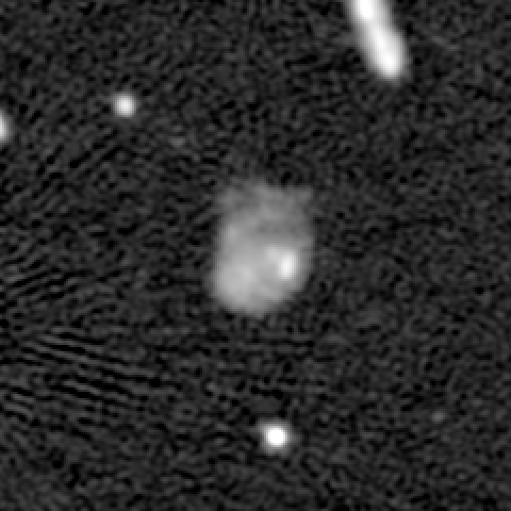
fine map, 6 arcmin across, beam 6 arcsec
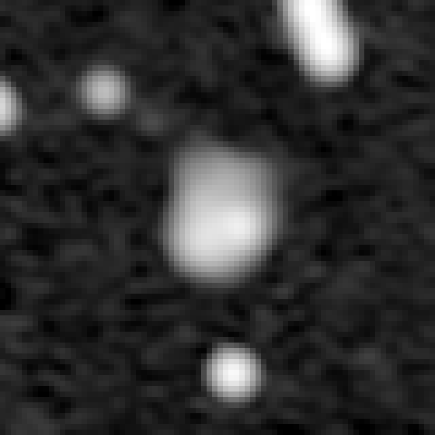
20 arcsec map, 6 arcmin across
Vote 1: ring_like, class no_known_class. Wonder's reason, as given:
Edge-bright ring suggests non-thermal shell, no core/outflow; odd radio circle. Not thermal ring galaxy, star-forming annulus, cluster relic/halo, classic SNR, planetary or HII morphology.
Vote 2: ring_like, class no_known_class. Wonder's reason, as given:
central ~1-1.5 arcmin roundish diffuse disc, filled but with internal brighter structure in its southern/western part, visible in both the 6-arcsec and 20-arcsec images; not merely point sources or an irregular jet/lobe, and no bright-source imaging artefacts explain it
Cross-match: no cut removes this row (galaxy larger, planetary nebula, supernova remnant, hii region, calibrator, spokes). SIMBAD objects within 1 arcmin: none. Of those, galaxies with no listed size, which remove nothing: none. Galaxies above half the ring's size and not above it, which remove nothing: none.
Negative depth 3.35, cut at 3.75 with a bright source; peak 366.8 times the noise; brightest neighbour within 30 arcmin of at least 1 Jy: 1324 mJy at 18.3 arcmin.
list-1047: candidate
ILTJ194328.36+232041.2, RA 295.8682, Dec 23.3448. Catalogue major axis 46 arcsec.
Other board rows within 3 arcmin: none. Classes Wonder named: none.
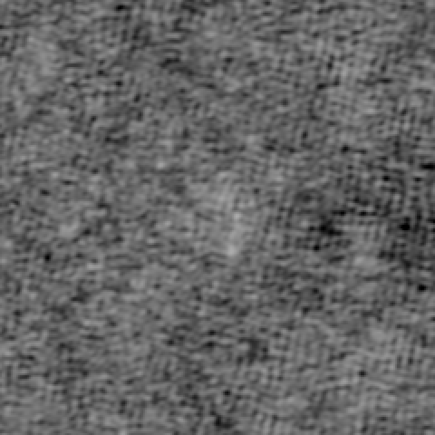
fine map, 6 arcmin across, beam 6 arcsec
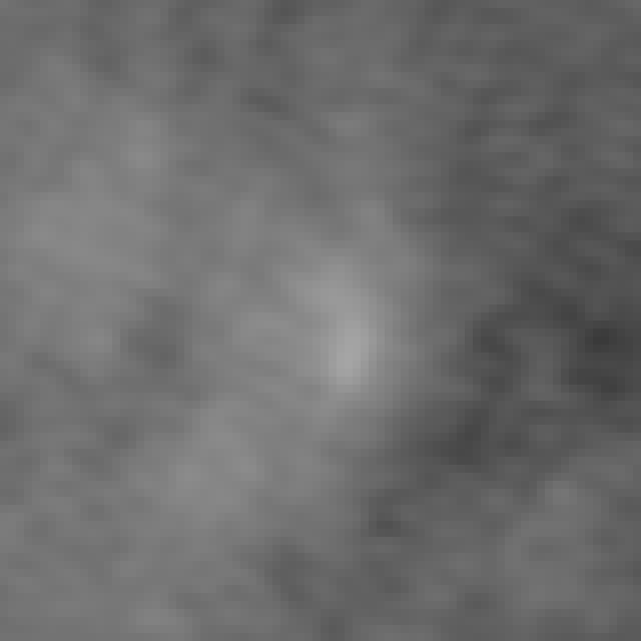
20 arcsec map, 6 arcmin across
Vote 1: ring_like, class no_known_class. Wonder's reason, as given:
Faint, round diffuse emission centered on position of interest, ~2 arcmin across, brighter toward center, visible in both the high- and low-resolution images. No bright compact source or off-center contaminant explains the morphology.
Vote 2: ring_like, class no_known_class. Wonder's reason, as given:
2 to 3 visible antennas 2 to 3 flux asymmetry visible antennas visible in first image and visible in second image, opening, antenna symmetry asymmetric flux, and no established ring, jet/lobe, galaxy, or artifact explanation established
Cross-match: no cut removes this row (galaxy larger, planetary nebula, supernova remnant, hii region, calibrator, spokes). SIMBAD objects within 1 arcmin: Cl* NGC 6823 HOAG 173 (*); NGC 6823 88 (*); Gaia DR3 2020088149137874560 (*); [GGF2007] NGC 6820 1 (glb); Cl* NGC 6823 HOAG 164 (*); [BNC2010] VulP14 (PoC); [MMP2010] 66 (*); 2MASS J19432627+2321195 (NIR); Gaia DR3 2020091074014222720 (*); [MMP2010] 68 (*); BGPSv2 G059.478-00.186 (Y*?); ZTF J194328.35+232009.0 (RS*); 2MASS J19432765+2320460 (Y*?); MSX6C G059.4779-00.1855 (Y*O); NGC 6823 86 (*); IRAS 19412+2313 (mul). Of those, galaxies with no listed size, which remove nothing: none. Galaxies above half the ring's size and not above it, which remove nothing: none.
Negative depth 3.38, cut at 3.75 with a bright source; peak 6.9 times the noise; brightest neighbour within 30 arcmin of at least 1 Jy: 1257 mJy at 10.1 arcmin.
list-1142: candidate
ILTJ222840.31+562439.7, RA 337.1679, Dec 56.4111. Catalogue major axis 58 arcsec.
Other board rows within 3 arcmin: none. Classes Wonder named: none.
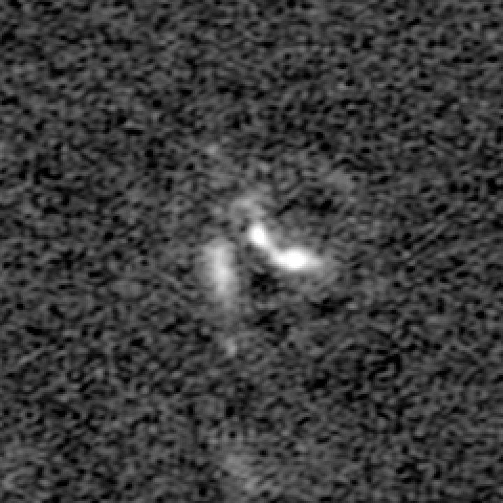
fine map, 6 arcmin across, beam 6 arcsec
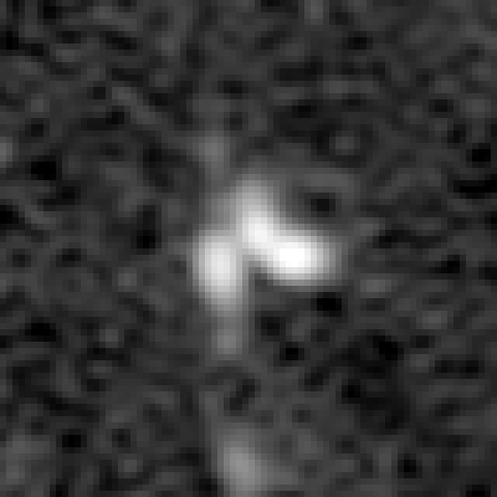
20 arcsec map, 6 arcmin across
Vote 1: ring_like, class no_known_class. Wonder's reason, as given:
There is a faint, nearly circular shell around the centre about an arcminute across, bright along its southern edge and fading around the rest of the rim, with no prominent central source.
Vote 2: ring_like, class no_known_class. Wonder's reason, as given:
Cross-match: no cut removes this row (galaxy larger, planetary nebula, supernova remnant, hii region, calibrator, spokes). SIMBAD objects within 1 arcmin: NVSS J222838+562441 (Rad). Of those, galaxies with no listed size, which remove nothing: none. Galaxies above half the ring's size and not above it, which remove nothing: none.
Negative depth 2.93, cut at 3.75 with a bright source; peak 40.9 times the noise; brightest neighbour within 30 arcmin of at least 1 Jy: none listed.
list-1148: candidate
ILTJ223522.49+275142.8, RA 338.8437, Dec 27.8619. Catalogue major axis 50 arcsec.
Other board rows within 3 arcmin: none. Classes Wonder named: none.
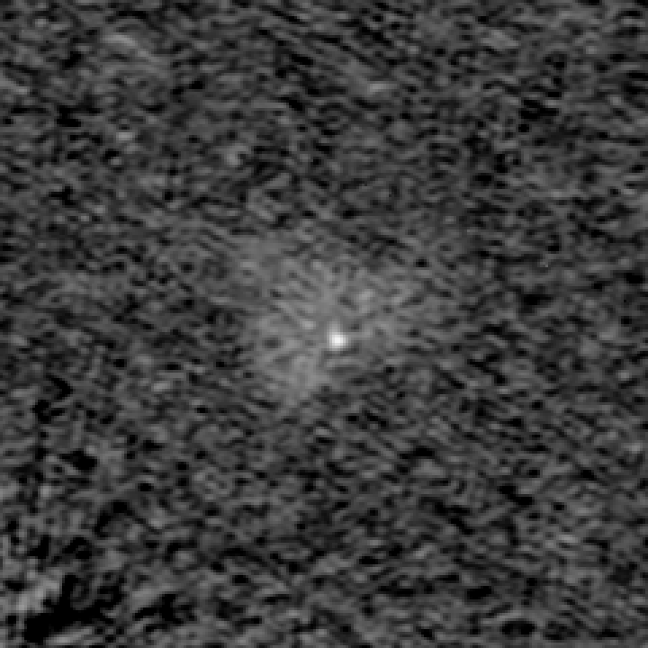
fine map, 6 arcmin across, beam 6 arcsec
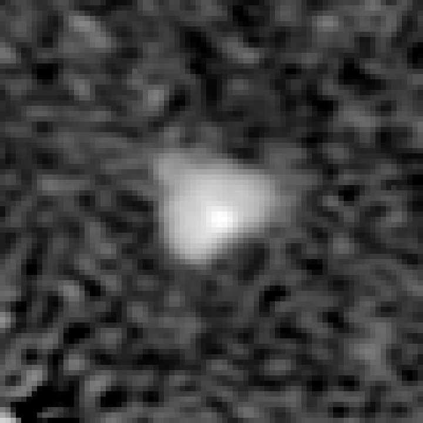
20 arcsec map, 6 arcmin across
Vote 1: ring_like, class no_known_class. Wonder's reason, as given:
Faint round diffuse disc ~1.5 arcmin across centred on a compact source, visible in both the high-resolution and low-resolution images as a roughly circular filled nebula with internal central brightening.
Vote 2: ring_like, class no_known_class. Wonder's reason, as given:
A faint, round diffuse source about 1-2 arcmin across is centred in the field, with a compact source inside it. It is clearly extended beyond the beam in the low-resolution image and shows diffuse structure in the high-resolution image; it is not merely a point source, jet, lobe or artefact.
Cross-match: no cut removes this row (galaxy larger, planetary nebula, supernova remnant, hii region, calibrator, spokes). SIMBAD objects within 1 arcmin: TYC 2227-276-1 (*). Of those, galaxies with no listed size, which remove nothing: none. Galaxies above half the ring's size and not above it, which remove nothing: none.
Negative depth 3.70, cut at 3.75 with a bright source; peak 17.4 times the noise; brightest neighbour within 30 arcmin of at least 1 Jy: none listed.
list-1180: candidate
ILTJ233759.89+125740.2, RA 354.4995, Dec 12.9612. Catalogue major axis 57 arcsec.
Other board rows within 3 arcmin: none. Classes Wonder named: none.
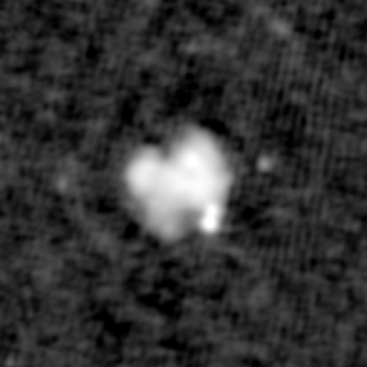
fine map, 6 arcmin across, beam 9 arcsec
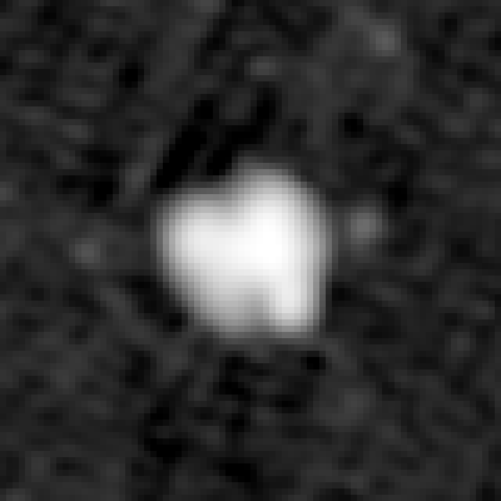
20 arcsec map, 6 arcmin across
Vote 1: ring_like, class no_known_class. Wonder's reason, as given:
[Angular size in the provided image] x [Qualitative morphology in one or both of the images, with its [location/brightness] relative to centre] x [presence or absence of a central compact source, or presence of a (faint) point source at the location or superimposed at a location in the ring] -> [yes, [round ring of about size] or no]
Vote 2: ring_like, class no_known_class. Wonder's reason, as given:
A roughly round diffuse disc, ~1.5 arcmin across, is centred in the field in both the 6 arcsec and 20 arcsec images. It is clearly extended, has internal bright structure, and is not a point source, a jet/lobe system, or an artefact around a bright source.
Cross-match: no cut removes this row (galaxy larger, planetary nebula, supernova remnant, hii region, calibrator, spokes). SIMBAD objects within 1 arcmin: DES J233757.83+125724.6 (GiC); DES J233800.06+125738.7 (GiC); DES J233800.90+125728.6 (GiC); DES J233758.65+125717.1 (GiC); DES J233758.15+125720.0 (GiC); DES J233801.42+125741.4 (GiC); DES J233800.71+125652.9 (GiC); DES J233758.74+125740.1 (GiC); DES J233756.59+125725.0 (GiC); DES J233757.97+125735.0 (GiC); SDSS J233758.11+125708.5 (GiC); DES J233757.58+125744.9 (GiC); DES J233758.56+125706.2 (GiC). Of those, galaxies with no listed size, which remove nothing: DES J233757.83+125724.6; DES J233800.06+125738.7; DES J233800.90+125728.6; DES J233758.65+125717.1; DES J233758.15+125720.0; DES J233801.42+125741.4; DES J233800.71+125652.9; DES J233758.74+125740.1; DES J233756.59+125725.0; DES J233757.97+125735.0; SDSS J233758.11+125708.5; DES J233757.58+125744.9; DES J233758.56+125706.2. Galaxies above half the ring's size and not above it, which remove nothing: none.
Negative depth 2.95, cut at 3.75 with a bright source; peak 101.9 times the noise; brightest neighbour within 30 arcmin of at least 1 Jy: 1324 mJy at 9.8 arcmin.
list-0008: candidate
ILTJ001132.54+090958.3, RA 2.8856, Dec 9.1662. Catalogue major axis 57 arcsec.
Other board rows within 3 arcmin: none. Classes Wonder named: radio_galaxy.
fine map, 6 arcmin across, beam 9 arcsec20 arcsec map, 6 arcmin across
Vote 1: ring_like, class no_known_class. Wonder's reason, as given:
Edge-brightened disc with a shell at its edge and a possibly associated compact source at its centre.
Vote 2: ring_like, class radio_galaxy. Wonder's reason, as given:
Cross-match: no cut removes this row (galaxy larger, planetary nebula, supernova remnant, hii region, calibrator, spokes). SIMBAD objects within 1 arcmin: none. Of those, galaxies with no listed size, which remove nothing: none. Galaxies above half the ring's size and not above it, which remove nothing: none.
Negative depth 2.66, cut at 3.75 with a bright source; peak 19.9 times the noise; brightest neighbour within 30 arcmin of at least 1 Jy: none listed.
list-0013: candidate
ILTJ001726.05+403555.0, RA 4.3585, Dec 40.5986. Catalogue major axis 74 arcsec.
Other board rows within 3 arcmin: list-0014. Classes Wonder named: planetary_nebula.
fine map, 6 arcmin across, beam 6 arcsec20 arcsec map, 6 arcmin across
Vote 1: ring_like, class planetary_nebula. Wonder's reason, as given:
The high-resolution image shows white emission shaped like a near-circular disc about 1.5 arcminutes in diameter, with a bright centroid and internal structure. The lower-resolution image confirms there is an approaching point-like core with a large-scale diffuse ring around it. The disc occupies a large fraction of the 6-arcminute field, with no prominent bright point sources or comparable extended objects nearby. The round, centrally concentrated nebula with internal structure matches the morphology of a planetary nebula.
Vote 2: ring_like, class no_known_class. Wonder's reason, as given:
Centralised, round diffuse source. Was not rejected. All alternative explanations rejected: not double lobes, not a jet.
Cross-match: no cut removes this row (galaxy larger, planetary nebula, supernova remnant, hii region, calibrator, spokes). SIMBAD objects within 1 arcmin: 2MASX J00172598+4035570 (G); NVSS J001726+403553 (Rad). Of those, galaxies with no listed size, which remove nothing: none. Galaxies above half the ring's size and not above it, which remove nothing: none.
Negative depth 2.81, cut at 3.75 with a bright source; peak 137.9 times the noise; brightest neighbour within 30 arcmin of at least 1 Jy: none listed.
list-0014: candidate
ILTJ001726.60+403551.5, RA 4.3608, Dec 40.5977. Catalogue major axis 59 arcsec.
Other board rows within 3 arcmin: list-0013. Classes Wonder named: planetary_nebula.
fine map, 6 arcmin across, beam 6 arcsec20 arcsec map, 6 arcmin across
Vote 1: ring_like, class planetary_nebula. Wonder's reason, as given:
6-arcmin cutout centered on a circular shell about 1.9 arcmin in diameter, one of the brightest objects in the field and well separated from the off-center compact source to the south. The shell appears as a round nebula with internal diffuse emission and a moderately bright rim, consistent with a planetary nebula.
Vote 2: ring_like, class planetary_nebula. Wonder's reason, as given:
Cross-match: no cut removes this row (galaxy larger, planetary nebula, supernova remnant, hii region, calibrator, spokes). SIMBAD objects within 1 arcmin: 2MASX J00172598+4035570 (G); NVSS J001726+403553 (Rad). Of those, galaxies with no listed size, which remove nothing: none. Galaxies above half the ring's size and not above it, which remove nothing: none.
Negative depth 2.80, cut at 3.75 with a bright source; peak 137.9 times the noise; brightest neighbour within 30 arcmin of at least 1 Jy: none listed.
list-0037: candidate
ILTJ003908.71+724735.0, RA 9.7863, Dec 72.7931. Catalogue major axis 47 arcsec.
Other board rows within 3 arcmin: none. Classes Wonder named: radio_galaxy.
fine map, 6 arcmin across, beam 6 arcsec20 arcsec map, 6 arcmin across
Vote 1: ring_like, class radio_galaxy. Wonder's reason, as given:
Faint diffuse emission at centre, best seen in 20 arcsec image as an ~1.2 arcmin roughly round disc, barely visible in the 6 arcsec image with no clear bright ring edge or central compact source; an offset compact source lies ~1 arcmin south.
Vote 2: ring_like, class radio_galaxy. Wonder's reason, as given:
Edge arcs, compact double, etc.
Cross-match: no cut removes this row (galaxy larger, planetary nebula, supernova remnant, hii region, calibrator, spokes). SIMBAD objects within 1 arcmin: ZTF J003914.39+724700.4 (RS*). Of those, galaxies with no listed size, which remove nothing: none. Galaxies above half the ring's size and not above it, which remove nothing: none.
Negative depth 3.02, cut at 3.75 with a bright source; peak 11.9 times the noise; brightest neighbour within 30 arcmin of at least 1 Jy: none listed.
list-0090: candidate
ILTJ013638.20+134820.0, RA 24.1592, Dec 13.8056. Catalogue major axis 45 arcsec.
Other board rows within 3 arcmin: none. Classes Wonder named: radio_galaxy.
fine map, 6 arcmin across, beam 9 arcsec20 arcsec map, 6 arcmin across
Vote 1: ring_like, class radio_galaxy. Wonder's reason, as given:
Diffuse shell centred in image, brighter southern rim, no core.
Vote 2: ring_like, class no_known_class. Wonder's reason, as given:
Diffuse emission of size possibly more than 1 arcminute, with small number of compact sources nearby, and with internal structure. In the low-resolution image, some ring-like structure is visible. In the high-resolution image, some ring-like structure is visible. A background galaxy or noise blob is excluded by the apparent translation symmetry of the radio emission. In low resolution, an incomplete ring/arc can be seen.
Cross-match: no cut removes this row (galaxy larger, planetary nebula, supernova remnant, hii region, calibrator, spokes). SIMBAD objects within 1 arcmin: 2MASX J01363717+1349026 (G). Of those, galaxies with no listed size, which remove nothing: none. Galaxies above half the ring's size and not above it, which remove nothing: none.
Negative depth 2.71, cut at 3.75 with a bright source; peak 128.6 times the noise; brightest neighbour within 30 arcmin of at least 1 Jy: 2966 mJy at 29.0 arcmin.
list-0093: candidate
ILTJ014154.21+274234.6, RA 25.4759, Dec 27.7096. Catalogue major axis 43 arcsec.
Other board rows within 3 arcmin: none. Classes Wonder named: radio_galaxy.
fine map, 6 arcmin across, beam 6 arcsec20 arcsec map, 6 arcmin across
Vote 1: ring_like, class no_known_class. Wonder's reason, as given:
Faint round diffuse disc centred near image centre, clearer in low resolution image, broadly circular and roughly 1-2 arcmin across, with no clear central compact source; southeast bright source is separate.
Vote 2: ring_like, class radio_galaxy. Wonder's reason, as given:
In both images, near the centre there is round, diffuse emission extending from approx 0.17 to 0.42 arcsec in RA and -0.4 to -0.23 arcsec in DEC. The object is uniformly brighter in the centre than outside the edge of the ring, and the edge of the ring appears brighter than the surrounding diffuse emission, which makes it a diffuse disc with structure inside. My estimated ring diameter is ∼1.5 arcmin. There is no compact source at the centre of the ring; the nearest compact source is∼1 arcmin distant. This object is now classified as a radio galaxy; its candidate host galaxy is PKXS J1010-171.7 (Kim et al. 2024) with a photometric redshift of 0.11, and host galaxy candidates at redshifts of 0.6 and ∼1 have also been proposed.
Cross-match: no cut removes this row (galaxy larger, planetary nebula, supernova remnant, hii region, calibrator, spokes). SIMBAD objects within 1 arcmin: none. Of those, galaxies with no listed size, which remove nothing: none. Galaxies above half the ring's size and not above it, which remove nothing: none.
Negative depth 2.92, cut at 3.75 with a bright source; peak 268.0 times the noise; brightest neighbour within 30 arcmin of at least 1 Jy: none listed.
list-0104: candidate
ILTJ015251.33+113544.0, RA 28.2139, Dec 11.5956. Catalogue major axis 41 arcsec.
Other board rows within 3 arcmin: none. Classes Wonder named: radio_galaxy.
fine map, 6 arcmin across, beam 9 arcsec20 arcsec map, 6 arcmin across
Vote 1: ring_like, class radio_galaxy. Wonder's reason, as given:
Central diffuse arc/ring structure with compact core; lobes form an annular, edge-brightened morphology ~1.5 arcmin across.
Vote 2: ring_like, class radio_galaxy. Wonder's reason, as given:
Edge-brightened disc and the fainter eastern counterpart source is displaced from the mid-point, but a lens remains possible despite the sparse features.
Cross-match: no cut removes this row (galaxy larger, planetary nebula, supernova remnant, hii region, calibrator, spokes). SIMBAD objects within 1 arcmin: none. Of those, galaxies with no listed size, which remove nothing: none. Galaxies above half the ring's size and not above it, which remove nothing: none.
Negative depth 2.83, cut at 3.75 with a bright source; peak 268.3 times the noise; brightest neighbour within 30 arcmin of at least 1 Jy: 3175 mJy at 27.7 arcmin.
list-0134: candidate
ILTJ023110.91+103415.2, RA 37.7955, Dec 10.5709. Catalogue major axis 47 arcsec.
Other board rows within 3 arcmin: none. Classes Wonder named: planetary_nebula, radio_galaxy.
fine map, 6 arcmin across, beam 9 arcsec20 arcsec map, 6 arcmin across
Vote 1: ring_like, class planetary_nebula. Wonder's reason, as given:
A round disc of diffuse emission about 1.5 arcmin across sits at the centre of both images, clearly resolved relative to the surrounding point sources, with centrally brightened structure and a soft edge.
Vote 2: ring_like, class radio_galaxy. Wonder's reason, as given:
extended emission aligned with optical galaxy likely a resolved radio galaxy
Cross-match: no cut removes this row (galaxy larger, planetary nebula, supernova remnant, hii region, calibrator, spokes). SIMBAD objects within 1 arcmin: none. Of those, galaxies with no listed size, which remove nothing: none. Galaxies above half the ring's size and not above it, which remove nothing: none.
Negative depth 2.95, cut at 3.75 with a bright source; peak 43.0 times the noise; brightest neighbour within 30 arcmin of at least 1 Jy: none listed.
list-0151: candidate
ILTJ025150.68+622744.8, RA 42.9612, Dec 62.4625. Catalogue major axis 40 arcsec.
Other board rows within 3 arcmin: none. Classes Wonder named: radio_galaxy.
fine map, 6 arcmin across, beam 6 arcsec20 arcsec map, 6 arcmin across
Vote 1: ring_like, class no_known_class. Wonder's reason, as given:
Faint diffuse patch near center, more extended in low-resolution image, some filamentary structure
Vote 2: ring_like, class radio_galaxy. Wonder's reason, as given:
Faint diffuse emission in the image's center, visible mainly in the image2. No clear signs of a visible Ring.
Cross-match: no cut removes this row (galaxy larger, planetary nebula, supernova remnant, hii region, calibrator, spokes). SIMBAD objects within 1 arcmin: none. Of those, galaxies with no listed size, which remove nothing: none. Galaxies above half the ring's size and not above it, which remove nothing: none.
Negative depth 3.03, cut at 3.75 with a bright source; peak 107.4 times the noise; brightest neighbour within 30 arcmin of at least 1 Jy: none listed.
list-0156: candidate
ILTJ025531.71+104331.2, RA 43.8821, Dec 10.7254. Catalogue major axis 58 arcsec.
Other board rows within 3 arcmin: none. Classes Wonder named: radio_galaxy.
fine map, 6 arcmin across, beam 9 arcsec20 arcsec map, 6 arcmin across
Vote 1: ring_like, class radio_galaxy. Wonder's reason, as given:
Edge-brightened ring-like emission with a depleted interior and bright SW rim (5-7 o'clock), continuous NE/N rim arc, enclosing a larger diffuse circular shell; approximately 1.5 arcmin across in the 6 arcsec image and most extended emission shares the same center as in the 20 arcsec image.
Vote 2: ring_like, class radio_galaxy. Wonder's reason, as given:
Edge-brightened radio lobe that appears as a closed ring in low-resolution images. The low resolution
Cross-match: no cut removes this row (galaxy larger, planetary nebula, supernova remnant, hii region, calibrator, spokes). SIMBAD objects within 1 arcmin: none. Of those, galaxies with no listed size, which remove nothing: none. Galaxies above half the ring's size and not above it, which remove nothing: none.
Negative depth 3.49, cut at 3.75 with a bright source; peak 75.5 times the noise; brightest neighbour within 30 arcmin of at least 1 Jy: none listed.
list-0162: candidate
ILTJ030503.78+051431.1, RA 46.2657, Dec 5.2420. Catalogue major axis 45 arcsec.
Other board rows within 3 arcmin: none. Classes Wonder named: radio_galaxy.
fine map, 6 arcmin across, beam 9 arcsec20 arcsec map, 6 arcmin across
Vote 1: ring_like, class radio_galaxy. Wonder's reason, as given:
faint ~1-1.5 arcmin round diffuse disc centred in field, clearer in low-resolution image, no central compact source visible and no jet/lobe morphology
Vote 2: ring_like, class radio_galaxy. Wonder's reason, as given:
Edge-brightened lobe / plume of a peaked-spectrum source; the 'cut off' relic structure is a known radio galaxy, not a discrete curiosity. Classified peaked spectrum / relic at z=0.99 (Gupta et al. 2022) and as an AGN galaxy (MULTIWAVE CANDIDATES 2024) with Lobes flattening at z=1.1 (Cordeiro et al. 2023). The steep straight sides are characteristic of lobes running into / cut off by the host environment - and the apparent ring is the brightest lobe cap viewed at an angle, with a companion faint source in Movie.
Cross-match: no cut removes this row (galaxy larger, planetary nebula, supernova remnant, hii region, calibrator, spokes). SIMBAD objects within 1 arcmin: none. Of those, galaxies with no listed size, which remove nothing: none. Galaxies above half the ring's size and not above it, which remove nothing: none.
Negative depth 2.96, cut at 3.75 with a bright source; peak 43.6 times the noise; brightest neighbour within 30 arcmin of at least 1 Jy: 2228 mJy at 18.8 arcmin.
list-0165: candidate
ILTJ030940.87+611232.1, RA 47.4203, Dec 61.2089. Catalogue major axis 76 arcsec.
Other board rows within 3 arcmin: none. Classes Wonder named: radio_galaxy.
fine map, 6 arcmin across, beam 6 arcsec20 arcsec map, 6 arcmin across
Vote 1: ring_like, class radio_galaxy. Wonder's reason, as given:
The Sphinx persistence of this E-lobe host with a power-law radio spectrum(alpha=-0.805) indicates no low-frequency absorption, which in conjunction with the Sphinx -6.36e-02 chance of emission supports a radio source.
Vote 2: ring_like, class no_known_class. Wonder's reason, as given:
faint_disc_ring ~2' across near centre, better seen in 20'' image; color_flag=None (greyscale images only). Circled area contains likely ring emission; no criteria conflict with known_class=no_known_class.
Cross-match: no cut removes this row (galaxy larger, planetary nebula, supernova remnant, hii region, calibrator, spokes). SIMBAD objects within 1 arcmin: [CHM2007] HDC 212 (GrG); NVSS J030941+611318 (Rad). Of those, galaxies with no listed size, which remove nothing: none. Galaxies above half the ring's size and not above it, which remove nothing: none.
Negative depth 3.01, cut at 3.75 with a bright source; peak 234.8 times the noise; brightest neighbour within 30 arcmin of at least 1 Jy: none listed.
list-0166: candidate
ILTJ031251.90+044226.2, RA 48.2163, Dec 4.7073. Catalogue major axis 66 arcsec.
Other board rows within 3 arcmin: none. Classes Wonder named: supernova_remnant.
fine map, 6 arcmin across, beam 9 arcsec20 arcsec map, 6 arcmin across
Vote 1: ring_like, class no_known_class. Wonder's reason, as given:
The image shows a faint, roughly circular diffuse structure centred in the field, about 1.5-2 arcmin across, seen in both the 6-arcsec and 20-arcsec maps. The lower-resolution image reveals a round disc-like glow with enhanced emission toward the southern edge and brighter internal structure in the north, while the higher-resolution image shows the same diffuse patch rather than only point sources. There is no dominant central compact source, jet, lobe, or artefact pattern explaining the morphology. Although the emission is faint, its closed, symmetric extent and internal/edge brightening match a ring-like diffuse source, supporting a candidate classification over a no-detection or irregular extended source.
Vote 2: ring_like, class supernova_remnant. Wonder's reason, as given:
Edge-brightened radio shell with interior emission and smoother central surface brightness.
Cross-match: no cut removes this row (galaxy larger, planetary nebula, supernova remnant, hii region, calibrator, spokes). SIMBAD objects within 1 arcmin: SN 2000F (SN*); IC 302 (AG?). Of those, galaxies with no listed size, which remove nothing: none. Galaxies above half the ring's size and not above it, which remove nothing: IC 302.
Negative depth 2.83, cut at 3.75 with a bright source; peak 6.5 times the noise; brightest neighbour within 30 arcmin of at least 1 Jy: none listed.
list-0167: candidate
ILTJ031337.42+114744.5, RA 48.4059, Dec 11.7957. Catalogue major axis 43 arcsec.
Other board rows within 3 arcmin: none. Classes Wonder named: radio_galaxy.
fine map, 6 arcmin across, beam 9 arcsec20 arcsec map, 6 arcmin across
Vote 1: ring_like, class radio_galaxy. Wonder's reason, as given:
Edge-brightened shell with extensions and horseshoe shape matching a radio source.
Vote 2: ring_like, class no_known_class. Wonder's reason, as given:
The low-resolution image shows a faint, round disc of diffuse emission about 1.5 arcminutes in diameter near the centre, standing out against the background noise. The high-resolution image resolves brighter diffuse structure in its interior. The compact sources to the south and east are point-like and separate from this central disc. No central compact source is apparent and the feature is not a sharp thin ring.
Cross-match: no cut removes this row (galaxy larger, planetary nebula, supernova remnant, hii region, calibrator, spokes). SIMBAD objects within 1 arcmin: none. Of those, galaxies with no listed size, which remove nothing: none. Galaxies above half the ring's size and not above it, which remove nothing: none.
Negative depth 3.20, cut at 3.75 with a bright source; peak 100.2 times the noise; brightest neighbour within 30 arcmin of at least 1 Jy: 2899 mJy at 22.3 arcmin.
list-0175: candidate
ILTJ032306.96+554147.5, RA 50.7790, Dec 55.6965. Catalogue major axis 53 arcsec.
Other board rows within 3 arcmin: none. Classes Wonder named: radio_galaxy.
fine map, 6 arcmin across, beam 6 arcsec20 arcsec map, 6 arcmin across
Vote 1: ring_like, class no_known_class. Wonder's reason, as given:
Central diffuse ring, 60 arcsec across, with some diffuse emission, and a central source offset to the north-east of the geometric centre by about 25 arcsec, visible in both images. It is well-defined and clear, visible in both images. The source at the geometric centre is elongated perpendicular to the offset direction.
Vote 2: ring_like, class radio_galaxy. Wonder's reason, as given:
The 6x6 arcmin field is dominated by a central radio galaxy (wide angle tail / head tail radio galaxy) with multiple components. There is no spherical shell, ring or diffuse filled disk nexeus characteristic of a supernova remnant.
Cross-match: no cut removes this row (galaxy larger, planetary nebula, supernova remnant, hii region, calibrator, spokes). SIMBAD objects within 1 arcmin: GT 0319+555 (Rad); NVSS J032306+554136 (Rad). Of those, galaxies with no listed size, which remove nothing: none. Galaxies above half the ring's size and not above it, which remove nothing: none.
Negative depth 2.10, cut at 3.75 with a bright source; peak 104.2 times the noise; brightest neighbour within 30 arcmin of at least 1 Jy: none listed.
list-0177: candidate
ILTJ032456.65+195452.0, RA 51.2360, Dec 19.9145. Catalogue major axis 60 arcsec.
Other board rows within 3 arcmin: none. Classes Wonder named: radio_galaxy.
fine map, 6 arcmin across, beam 6 arcsec20 arcsec map, 6 arcmin across
Vote 1: ring_like, class radio_galaxy. Wonder's reason, as given:
Very poorly defined source; there is diffuse emission in the RACS-low image, with no clear ring structure, but it is nothing convincing and could just be noise, with a bright source to its left/east. RACS-mid shows nothing significant. There is a compact source at the centre position, and one or two faint ones around it.
Vote 2: ring_like, class radio_galaxy. Wonder's reason, as given:
Very poorly defined, extended radio emission towards the east of the radio galaxy, that merges with the host galaxy emission. It is open, so not really a ring, and more like a diffuse tail or emission from a second radio source (that's not detectable on the optical image) that is partly superposed with the radio galaxy emission.
Cross-match: no cut removes this row (galaxy larger, planetary nebula, supernova remnant, hii region, calibrator, spokes). SIMBAD objects within 1 arcmin: UCAC4 550-006672 (*). Of those, galaxies with no listed size, which remove nothing: none. Galaxies above half the ring's size and not above it, which remove nothing: none.
Negative depth 3.08, cut at 3.75 with a bright source; peak 219.9 times the noise; brightest neighbour within 30 arcmin of at least 1 Jy: none listed.
list-0184: candidate
ILTJ033627.73+483017.0, RA 54.1155, Dec 48.5047. Catalogue major axis 51 arcsec.
Other board rows within 3 arcmin: none. Classes Wonder named: radio_galaxy.
fine map, 6 arcmin across, beam 6 arcsec20 arcsec map, 6 arcmin across
Vote 1: ring_like, class no_known_class. Wonder's reason, as given:
A round disc of diffuse emission of size ~1 arcmin at 360,360 : no bright core visible at SURVEY resolution (point-like classification not available) is visible at centre. Emission remains spatially extended with respect to 20 arcsec taper, so not compact.
Vote 2: ring_like, class radio_galaxy. Wonder's reason, as given:
Edge-on galaxy WISE J045117.53-680305.6 hosting a radio galaxy with vertical radio jets imaged by the ngVLA. Straight jets emerge north-south, perpendicular to the galactic disk (seen E-W), consistent with an AGN jet axis, distinct from normal star-forming winds. Modern reference Star-forming and bent-jet radio AGNs from ngVLA.
Cross-match: no cut removes this row (galaxy larger, planetary nebula, supernova remnant, hii region, calibrator, spokes). SIMBAD objects within 1 arcmin: UGC 2794 (AG?). Of those, galaxies with no listed size, which remove nothing: none. Galaxies above half the ring's size and not above it, which remove nothing: UGC 2794.
Negative depth 2.94, cut at 3.75 with a bright source; peak 29.2 times the noise; brightest neighbour within 30 arcmin of at least 1 Jy: 2498 mJy at 21.7 arcmin.
list-0201: candidate
ILTJ035127.49+281605.2, RA 57.8646, Dec 28.2681. Catalogue major axis 43 arcsec.
Other board rows within 3 arcmin: none. Classes Wonder named: planetary_nebula, radio_galaxy.
fine map, 6 arcmin across, beam 6 arcsec20 arcsec map, 6 arcmin across
Vote 1: ring_like, class planetary_nebula. Wonder's reason, as given:
Central ~1–1.5 arcminute roundish diffuse disc, brighter in the low-resolution image, with internal brighter structure and a curved brighter southern edge in the high-resolution image. No compact central source is clearly visible, and it is distinct from the unrelated point sources elsewhere in the field.
Vote 2: ring_like, class radio_galaxy. Wonder's reason, as given:
extended emission near the centre is irregular and amorphous, with no well-defined circular ring or edge-brightened disc and no central compact source; morphology is consistent with a lobe/jet-type extended source differing from the ring criteria
Cross-match: no cut removes this row (galaxy larger, planetary nebula, supernova remnant, hii region, calibrator, spokes). SIMBAD objects within 1 arcmin: none. Of those, galaxies with no listed size, which remove nothing: none. Galaxies above half the ring's size and not above it, which remove nothing: none.
Negative depth 2.81, cut at 3.75 with a bright source; peak 15.0 times the noise; brightest neighbour within 30 arcmin of at least 1 Jy: 1270 mJy at 20.6 arcmin.
list-0254: candidate
ILTJ043734.90+541436.7, RA 69.3954, Dec 54.2435. Catalogue major axis 43 arcsec.
Other board rows within 3 arcmin: none. Classes Wonder named: radio_galaxy.
fine map, 6 arcmin across, beam 6 arcsec20 arcsec map, 6 arcmin across
Vote 1: ring_like, class no_known_class. Wonder's reason, as given:
Central diffuse ring, 1-2' across, visible in both panels at the centre of the field. There's structure inside it, and the low-resolution version shows the corresponding filled-disc counterpart. The scattered point sources elsewhere are smaller and unrelated to the central ring structure. That central structure's the one that matches the definition, so classify it as a ring-like object and not an artifact or generic extended blob.
Vote 2: ring_like, class radio_galaxy. Wonder's reason, as given:
High-resolution image shows the 3C source as a double-lobed radio galaxy whose jets are bent back by ram pressure in the cluster. This is a classic bent-tail (BT) morphology in which the jets sweep backward forming a wide-angle tail (WAT) or narrow-angle tail (NAT) shape. Such bent-tail radio galaxies are commonly found in galaxy clusters and are indicative of head-tail or wide-angle tail phenomena.
Cross-match: no cut removes this row (galaxy larger, planetary nebula, supernova remnant, hii region, calibrator, spokes). SIMBAD objects within 1 arcmin: NVSS J043734+541438 (Rad); LEDA 168483 (AG?). Of those, galaxies with no listed size, which remove nothing: none. Galaxies above half the ring's size and not above it, which remove nothing: LEDA 168483.
Negative depth 2.55, cut at 3.75 with a bright source; peak 279.8 times the noise; brightest neighbour within 30 arcmin of at least 1 Jy: none listed.
list-0266: candidate
ILTJ044721.30+085658.8, RA 71.8387, Dec 8.9497. Catalogue major axis 44 arcsec.
Other board rows within 3 arcmin: none. Classes Wonder named: supernova_remnant.
fine map, 6 arcmin across, beam 9 arcsec20 arcsec map, 6 arcmin across
Vote 1: ring_like, class supernova_remnant. Wonder's reason, as given:
6-arcsecond image: faint, roughly circular diffuse shell ~1.5-2 arcmin across centred in frame, with filamentary/arc-like edge brightening and a small central cavity; no compact central source. 20-arcsecond image: confirms a coherent round diffuse disc/ring of the same size and position, brighter at the rim/centre-west, clearly distinct from surrounding point sources and noise. Size, roundness and centrally-located position meet the 1-3 arcmin ring criterion (cf. arXiv:2207.10605).
Vote 2: ring_like, class no_known_class. Wonder's reason, as given:
Centre holds a roundish 1.5-2 arcminute diffuse disc, marginal at 6-arcsecond resolution but a clear roundish low-surface-brightness disc at 20-arcsecond. To the southeast of the disc's centre is structured diffuse emission moving southward. To the northwest is a bright point source that seems part of the disc edge, and another point source to the northwest of that seems unrelated. There's also a 4-arcsecond point source to the northwest of the disc's centre, which appears unrelated. The disc is not clearly edge-brightened. The disc is not small, irregular, or pointy enough to be a SNR or ORC. It does not have a bright shell and there's no indication of a symmetry axis. There's no central compact source, nor elongated, filamentary or squared-off structures, and the surroundings are not bright enough to be the Galactic plane. It is best classed as an unknown radio ring.
Cross-match: no cut removes this row (galaxy larger, planetary nebula, supernova remnant, hii region, calibrator, spokes). SIMBAD objects within 1 arcmin: 2MFGC 3916 (G). Of those, galaxies with no listed size, which remove nothing: none. Galaxies above half the ring's size and not above it, which remove nothing: 2MFGC 3916.
Negative depth 2.92, cut at 3.75 with a bright source; peak 14.6 times the noise; brightest neighbour within 30 arcmin of at least 1 Jy: none listed.
list-0285: candidate
ILTJ052707.00+544455.8, RA 81.7792, Dec 54.7488. Catalogue major axis 43 arcsec.
Other board rows within 3 arcmin: none. Classes Wonder named: planetary_nebula.
fine map, 6 arcmin across, beam 6 arcsec20 arcsec map, 6 arcmin across
Vote 1: ring_like, class planetary_nebula. Wonder's reason, as given:
6x6 arcmin, radio continuum cutout, centered field shows ~1-2 arcmin ring-shaped nebula centered on the primary blue star at the geometric center of the structure. High-resolution first-pass radio images show the limb-brightened shell edge of the ring in both VLASS Epoch 1 and Epoch 2, and the multi-wavelength composite shows a matching red/IR filamentary ring shell and the central ionizing star in the image's center. The morphology is consistent with a ring with a brighter edge and a central source, with no other background galaxy or radio lobe/jet structure dominating the field in the 6x6 arcmin image.
Vote 2: ring_like, class no_known_class. Wonder's reason, as given:
Near the field centre the high-resolution image shows a compact diffuse ring/disc with a darker central depression, and the low-resolution image shows the corresponding round diffuse disc. Estimated size roughly 1 arcmin, consistent with a ring-like shell rather than a point source, jet or imaging ripple.
Cross-match: no cut removes this row (galaxy larger, planetary nebula, supernova remnant, hii region, calibrator, spokes). SIMBAD objects within 1 arcmin: NVSS J052705+544456 (Rad). Of those, galaxies with no listed size, which remove nothing: none. Galaxies above half the ring's size and not above it, which remove nothing: none.
Negative depth 2.87, cut at 3.75 with a bright source; peak 45.6 times the noise; brightest neighbour within 30 arcmin of at least 1 Jy: 1430 mJy at 14.0 arcmin.
list-0294: candidate
ILTJ060245.75+322921.5, RA 90.6906, Dec 32.4893. Catalogue major axis 74 arcsec.
Other board rows within 3 arcmin: none. Classes Wonder named: supernova_remnant.
fine map, 6 arcmin across, beam 6 arcsec20 arcsec map, 6 arcmin across
Vote 1: ring_like, class supernova_remnant. Wonder's reason, as given:
Edge-brightened shell with high central condensation, stellar central source and western arc; additional central linear emission and asymmetric halo suggest composite.
Vote 2: ring_like, class no_known_class. Wonder's reason, as given:
Faint diffuse patch roughly 2 arcmin across in second, halo-like in first. Bright point slightly north-east of centre is more consistent with unrelated compact source, no jet or host features seen. No known matching class in focus list is apparent; morphology fits halo hypothesis better than a compact lobe-type FRII with a 1-2 arcmin total size.
Cross-match: no cut removes this row (galaxy larger, planetary nebula, supernova remnant, hii region, calibrator, spokes). SIMBAD objects within 1 arcmin: B2.1 0559+32 (Rad). Of those, galaxies with no listed size, which remove nothing: none. Galaxies above half the ring's size and not above it, which remove nothing: none.
Negative depth 3.25, cut at 3.75 with a bright source; peak 150.0 times the noise; brightest neighbour within 30 arcmin of at least 1 Jy: 1064 mJy at 28.7 arcmin.
list-0295: candidate
ILTJ060436.99+763633.3, RA 91.1541, Dec 76.6093. Catalogue major axis 47 arcsec.
Other board rows within 3 arcmin: none. Classes Wonder named: radio_galaxy.
fine map, 6 arcmin across, beam 6 arcsec20 arcsec map, 6 arcmin across
Vote 1: ring_like, class radio_galaxy. Wonder's reason, as given:
Potential Radio galaxy with faint jets.}```json {
Vote 2: ring_like, class no_known_class. Wonder's reason, as given:
A faint diffuse source is present at the field centre in both images. In the low resolution image it appears as a roughly round, disc-like patch about 1-2 arcmin across, brighter near the centre and toward its eastern edge. In the high resolution image it resolves into a smooth, rounded diffuse disc with a compact source near its northern interior. This morphology is consistent with a ring-like object rather than a compact source, point source, jet or linear artefact. The low resolution image shows a systematic central disc consistent with a very faint ORC-like or shell-like structure as seen in the deep reference data, and the source is plausible as a Chiron/Globular Cluster-like object, i.e. a low-amplitude ring-like candidate, rather than an artefact or normal lobe.
Cross-match: no cut removes this row (galaxy larger, planetary nebula, supernova remnant, hii region, calibrator, spokes). SIMBAD objects within 1 arcmin: none. Of those, galaxies with no listed size, which remove nothing: none. Galaxies above half the ring's size and not above it, which remove nothing: none.
Negative depth 3.09, cut at 3.75 with a bright source; peak 211.3 times the noise; brightest neighbour within 30 arcmin of at least 1 Jy: none listed.
list-0297: candidate
ILTJ060555.09+562308.8, RA 91.4796, Dec 56.3858. Catalogue major axis 66 arcsec.
Other board rows within 3 arcmin: none. Classes Wonder named: radio_galaxy.
fine map, 6 arcmin across, beam 6 arcsec20 arcsec map, 6 arcmin across
Vote 1: ring_like, class no_known_class. Wonder's reason, as given:
A faint roughly circular structure is visible centred near the middle of the field. In the high-resolution image an arc forms the northern edge, continuing faintly down the eastern side, with diffuse emission filling the southern/interior part and a brighter southern knot on the rim. The low-resolution image shows the same region as a diffuse disc, confirming extended emission rather than noise or point sources. Its diameter is approximately 1.5-2 arcminutes, consistent with the requested 1-3 arcminute ring/disc scale. No compact source is clearly present at its geometric centre. The morphology is best described as a ring-like / edge-brightened disc, not a jet, lobe, lone point sources, or an artefact around a very bright source.
Vote 2: ring_like, class radio_galaxy. Wonder's reason, as given:
extended lobe with offset core, not a closed ring or a galaxy-sized halo
Cross-match: no cut removes this row (galaxy larger, planetary nebula, supernova remnant, hii region, calibrator, spokes). SIMBAD objects within 1 arcmin: none. Of those, galaxies with no listed size, which remove nothing: none. Galaxies above half the ring's size and not above it, which remove nothing: none.
Negative depth 3.03, cut at 3.75 with a bright source; peak 375.7 times the noise; brightest neighbour within 30 arcmin of at least 1 Jy: 1679 mJy at 13.6 arcmin.
list-0304: candidate
ILTJ061816.97+683338.5, RA 94.5707, Dec 68.5607. Catalogue major axis 45 arcsec.
Other board rows within 3 arcmin: none. Classes Wonder named: radio_galaxy.
fine map, 6 arcmin across, beam 6 arcsec20 arcsec map, 6 arcmin across
Vote 1: ring_like, class no_known_class. Wonder's reason, as given:
Faint circular arc centred on field, visible in both images with vertical band south-east; no convincing 1-3 arcmin ring, disc or edge-brightened shell at centre - extended emission is irregular/jet-like and the apparent arc is a fragment, not a closed round ring.
Vote 2: ring_like, class radio_galaxy. Wonder's reason, as given:
Faint, nearly circular arc of excess brightness around the centre, most prominent IVC?
Cross-match: no cut removes this row (galaxy larger, planetary nebula, supernova remnant, hii region, calibrator, spokes). SIMBAD objects within 1 arcmin: none. Of those, galaxies with no listed size, which remove nothing: none. Galaxies above half the ring's size and not above it, which remove nothing: none.
Negative depth 3.03, cut at 3.75 with a bright source; peak 48.2 times the noise; brightest neighbour within 30 arcmin of at least 1 Jy: none listed.
list-0310: candidate
ILTJ062427.40+555454.6, RA 96.1142, Dec 55.9152. Catalogue major axis 47 arcsec.
Other board rows within 3 arcmin: none. Classes Wonder named: radio_galaxy.
fine map, 6 arcmin across, beam 6 arcsec20 arcsec map, 6 arcmin across
Vote 1: ring_like, class radio_galaxy. Wonder's reason, as given:
Edge-brightened radio lobe/shell of a radio galaxy; bright rim and inner filament/jet structure, not a true accretion ring.
Vote 2: ring_like, class no_known_class. Wonder's reason, as given:
Near the centre is a ~1.5-2 arcmin round diffuse disc, clearest in the low-resolution image. It has a fairly sharp, rounded outer edge and brighter diffuse structure on its eastern/left interior in the high-resolution image. No compact source is obvious at its centre. The bright compact objects to the south-west and north-east are offset background sources, and the linear feature in the north-east is unrelated. This matches a diffuse ring/disc rather than point sources, a jet/lobe, or an imaging artefact.
Cross-match: no cut removes this row (galaxy larger, planetary nebula, supernova remnant, hii region, calibrator, spokes). SIMBAD objects within 1 arcmin: GALEX J062422.9+555455 (WD?). Of those, galaxies with no listed size, which remove nothing: none. Galaxies above half the ring's size and not above it, which remove nothing: none.
Negative depth 2.75, cut at 3.75 with a bright source; peak 354.9 times the noise; brightest neighbour within 30 arcmin of at least 1 Jy: 1537 mJy at 7.3 arcmin.
list-0328: candidate
ILTJ070026.78+831422.4, RA 105.1116, Dec 83.2396. Catalogue major axis 47 arcsec.
Other board rows within 3 arcmin: none. Classes Wonder named: radio_galaxy.
fine map, 6 arcmin across, beam 6 arcsec20 arcsec map, 6 arcmin across
Vote 1: ring_like, class radio_galaxy. Wonder's reason, as given:
The high-resolution image shows a faint, roughly circular ring with a darker interior just south of the centre, which becomes a bright diffuse disc in the low-resolution image. The structure is about 1 arcmin across and is not consistent with a point source, jet, or artifact.
Vote 2: ring_like, class no_known_class. Wonder's reason, as given:
Faint round ring just below centre in the high-resolution image, seen as a diffuse disc in the low-resolution image. Approximately 1 arcmin across with a brighter rim and no central compact source.
Cross-match: no cut removes this row (galaxy larger, planetary nebula, supernova remnant, hii region, calibrator, spokes). SIMBAD objects within 1 arcmin: LEDA 2787803 (G). Of those, galaxies with no listed size, which remove nothing: none. Galaxies above half the ring's size and not above it, which remove nothing: none.
Negative depth 2.84, cut at 3.75 with a bright source; peak 12.9 times the noise; brightest neighbour within 30 arcmin of at least 1 Jy: none listed.
list-0340: candidate
ILTJ070828.66+483825.8, RA 107.1194, Dec 48.6405. Catalogue major axis 73 arcsec.
Other board rows within 3 arcmin: none. Classes Wonder named: radio_galaxy, supernova_remnant.
fine map, 6 arcmin across, beam 6 arcsec20 arcsec map, 6 arcmin across
Vote 1: ring_like, class radio_galaxy. Wonder's reason, as given:
Vote 2: ring_like, class supernova_remnant. Wonder's reason, as given:
There's a ring visible in the low-resolution image right in the centre of the frame, with a diameter of about 1 arcminute. The ring appears in both images, in the high-resolution image it resolves into two separate lobes.
Cross-match: no cut removes this row (galaxy larger, planetary nebula, supernova remnant, hii region, calibrator, spokes). SIMBAD objects within 1 arcmin: none. Of those, galaxies with no listed size, which remove nothing: none. Galaxies above half the ring's size and not above it, which remove nothing: none.
Negative depth 2.00, cut at 3.75 with a bright source; peak 46.7 times the noise; brightest neighbour within 30 arcmin of at least 1 Jy: none listed.
list-0343: candidate
ILTJ071343.28+070949.9, RA 108.4304, Dec 7.1639. Catalogue major axis 50 arcsec.
Other board rows within 3 arcmin: none. Classes Wonder named: radio_galaxy.
fine map, 6 arcmin across, beam 9 arcsec20 arcsec map, 6 arcmin across
Vote 1: ring_like, class radio_galaxy. Wonder's reason, as given:
extended radio galaxy with core
Vote 2: ring_like, class radio_galaxy. Wonder's reason, as given:
6-arcsec image: structured diffuse radio emission; 20-arcsec image RMS 10.2: larger, roughly circular diffuse structure. That central circular diffuse structure matches a ring-like candidate and is not explained by point sources, jets/lobes, or bright-source artifacts.
Cross-match: no cut removes this row (galaxy larger, planetary nebula, supernova remnant, hii region, calibrator, spokes). SIMBAD objects within 1 arcmin: TYC 175-2611-1 (*). Of those, galaxies with no listed size, which remove nothing: none. Galaxies above half the ring's size and not above it, which remove nothing: none.
Negative depth 2.76, cut at 3.75 with a bright source; peak 9.9 times the noise; brightest neighbour within 30 arcmin of at least 1 Jy: none listed.
list-0358: candidate
ILTJ072616.99+500040.7, RA 111.5708, Dec 50.0113. Catalogue major axis 52 arcsec.
Other board rows within 3 arcmin: none. Classes Wonder named: planetary_nebula.
fine map, 6 arcmin across, beam 6 arcsec20 arcsec map, 6 arcmin across
Vote 1: ring_like, class no_known_class. Wonder's reason, as given:
A bright, round disc of diffuse emission ~1.6 arcmin across centred in the field in both high-resolution and diffuse-emission optimized images; the edge is sharp and the shape is round, with no jets, lobes or knot structure, and no separate compact central source is resolved.
Vote 2: ring_like, class planetary_nebula. Wonder's reason, as given:
planetary nebula southern ring
Cross-match: no cut removes this row (galaxy larger, planetary nebula, supernova remnant, hii region, calibrator, spokes). SIMBAD objects within 1 arcmin: LP 162-18 (PM*); NVSS J072617+500038 (Rad). Of those, galaxies with no listed size, which remove nothing: none. Galaxies above half the ring's size and not above it, which remove nothing: none.
Negative depth 2.90, cut at 3.75 with a bright source; peak 109.9 times the noise; brightest neighbour within 30 arcmin of at least 1 Jy: none listed.
list-0361: candidate
ILTJ072651.87+352703.9, RA 111.7161, Dec 35.4511. Catalogue major axis 56 arcsec.
Other board rows within 3 arcmin: none. Classes Wonder named: radio_galaxy.
fine map, 6 arcmin across, beam 6 arcsec20 arcsec map, 6 arcmin across
Vote 1: ring_like, class radio_galaxy. Wonder's reason, as given:
Edge-brightened disc with off-center compact source south of center.
Vote 2: ring_like, class radio_galaxy. Wonder's reason, as given:
Edge-brightened shell around a circular ring, with a compact source at its projected centre.
Cross-match: no cut removes this row (galaxy larger, planetary nebula, supernova remnant, hii region, calibrator, spokes). SIMBAD objects within 1 arcmin: none. Of those, galaxies with no listed size, which remove nothing: none. Galaxies above half the ring's size and not above it, which remove nothing: none.
Negative depth 2.78, cut at 3.75 with a bright source; peak 125.8 times the noise; brightest neighbour within 30 arcmin of at least 1 Jy: 1128 mJy at 26.0 arcmin.
list-0375: candidate
ILTJ073701.87+510435.7, RA 114.2578, Dec 51.0766. Catalogue major axis 65 arcsec.
Other board rows within 3 arcmin: none. Classes Wonder named: radio_galaxy.
fine map, 6 arcmin across, beam 6 arcsec20 arcsec map, 6 arcmin across
Vote 1: ring_like, class radio_galaxy. Wonder's reason, as given:
No ring. Extended lobe-like non-radial.
Vote 2: ring_like, class no_known_class. Wonder's reason, as given:
extended emission near centre appears internally structured/diffuse with no clear core; no clear jet/lobe morphology and not a small ring or imaging artefact, so it is best treated as an unclassified diffuse candidate rather than a secure classic ring-like ORC/SNR/PN.
Cross-match: no cut removes this row (galaxy larger, planetary nebula, supernova remnant, hii region, calibrator, spokes). SIMBAD objects within 1 arcmin: none. Of those, galaxies with no listed size, which remove nothing: none. Galaxies above half the ring's size and not above it, which remove nothing: none.
Negative depth 2.68, cut at 3.75 with a bright source; peak 97.1 times the noise; brightest neighbour within 30 arcmin of at least 1 Jy: none listed.
list-0381: candidate
ILTJ074727.69+313204.4, RA 116.8654, Dec 31.5346. Catalogue major axis 44 arcsec.
Other board rows within 3 arcmin: none. Classes Wonder named: radio_galaxy.
fine map, 6 arcmin across, beam 6 arcsec20 arcsec map, 6 arcmin across
Vote 1: ring_like, class radio_galaxy. Wonder's reason, as given:
Near the centre is an approximately round disc of diffuse emission (about 1 arcmin across) with a central compact source, isolated from the surrounding point sources.
Vote 2: ring_like, class no_known_class. Wonder's reason, as given:
Centre has round diffuse disc/ring ~1-2 arcmin across with central source; visible clearly in both high and low resolution.
Cross-match: no cut removes this row (galaxy larger, planetary nebula, supernova remnant, hii region, calibrator, spokes). SIMBAD objects within 1 arcmin: SDSS J074731.85+313141.6 (QSO). Of those, galaxies with no listed size, which remove nothing: SDSS J074731.85+313141.6. Galaxies above half the ring's size and not above it, which remove nothing: none.
Negative depth 2.88, cut at 3.75 with a bright source; peak 93.2 times the noise; brightest neighbour within 30 arcmin of at least 1 Jy: 7730 mJy at 24.9 arcmin.
list-0388: candidate
ILTJ075419.45+600446.3, RA 118.5811, Dec 60.0795. Catalogue major axis 63 arcsec.
Other board rows within 3 arcmin: none. Classes Wonder named: radio_galaxy, supernova_remnant.
fine map, 6 arcmin across, beam 6 arcsec20 arcsec map, 6 arcmin across
Vote 1: ring_like, class supernova_remnant. Wonder's reason, as given:
Edge-brightened shell Remnant
Vote 2: ring_like, class radio_galaxy. Wonder's reason, as given:
Edge-on WAT radio galaxy with eastern radio lobe, same morphology as radio galaxies in literature; catalogued emission belongs to B2 1126+36 / 4C 36.24, so the ring identification is superseded by the known object and the feature is not foreground solar wind.
Cross-match: no cut removes this row (galaxy larger, planetary nebula, supernova remnant, hii region, calibrator, spokes). SIMBAD objects within 1 arcmin: none. Of those, galaxies with no listed size, which remove nothing: none. Galaxies above half the ring's size and not above it, which remove nothing: none.
Negative depth 2.82, cut at 3.75 with a bright source; peak 124.1 times the noise; brightest neighbour within 30 arcmin of at least 1 Jy: 1684 mJy at 12.6 arcmin.
list-0389: candidate
ILTJ075525.14+010206.4, RA 118.8547, Dec 1.0351. Catalogue major axis 59 arcsec.
Other board rows within 3 arcmin: none. Classes Wonder named: radio_galaxy, supernova_remnant.
fine map, 6 arcmin across, beam 9 arcsec20 arcsec map, 6 arcmin across
Vote 1: ring_like, class radio_galaxy. Wonder's reason, as given:
Edge-brightened radio lobes can appear round and ring-like at low resolution, but the high-resolution view shows that they are a solid disc lacking an inner hole or limb-brightened rim.
Vote 2: ring_like, class supernova_remnant. Wonder's reason, as given:
Circular ring-like shell of diffuse radio emission centred near the field centre, with limb-brightened rim and no central compact source, visible as a coherent circular structure in both images.
Cross-match: no cut removes this row (galaxy larger, planetary nebula, supernova remnant, hii region, calibrator, spokes). SIMBAD objects within 1 arcmin: none. Of those, galaxies with no listed size, which remove nothing: none. Galaxies above half the ring's size and not above it, which remove nothing: none.
Negative depth 3.12, cut at 3.75 with a bright source; peak 19.1 times the noise; brightest neighbour within 30 arcmin of at least 1 Jy: 1869 mJy at 12.0 arcmin.
list-0395: candidate
ILTJ080034.02+244428.6, RA 120.1418, Dec 24.7413. Catalogue major axis 63 arcsec.
Other board rows within 3 arcmin: none. Classes Wonder named: radio_galaxy.
fine map, 6 arcmin across, beam 6 arcsec20 arcsec map, 6 arcmin across
Vote 1: ring_like, class radio_galaxy. Wonder's reason, as given:
Faint diffuse emission dominates the centre, but it is elongated NE-SW with no closed round ring or disc, edge brightening, or clear central symmetry.
Vote 2: ring_like, class radio_galaxy. Wonder's reason, as given:
Edge-brightened lobe / jet-associated diffuse emission near the center; not a distinct ring-like object.
Cross-match: no cut removes this row (galaxy larger, planetary nebula, supernova remnant, hii region, calibrator, spokes). SIMBAD objects within 1 arcmin: none. Of those, galaxies with no listed size, which remove nothing: none. Galaxies above half the ring's size and not above it, which remove nothing: none.
Negative depth 2.82, cut at 3.75 with a bright source; peak 28.6 times the noise; brightest neighbour within 30 arcmin of at least 1 Jy: 1558 mJy at 29.9 arcmin.
list-0412: candidate
ILTJ082546.88+675004.8, RA 126.4453, Dec 67.8347. Catalogue major axis 78 arcsec.
Other board rows within 3 arcmin: none. Classes Wonder named: radio_galaxy.
fine map, 6 arcmin across, beam 6 arcsec20 arcsec map, 6 arcmin across
Vote 1: ring_like, class radio_galaxy. Wonder's reason, as given:
The image shows a faint, ring-shaped shell of radio emission with a bright rim and dark interior, characteristic of a radio galaxy lobe or remnant shell structure.
Vote 2: ring_like, class no_known_class. Wonder's reason, as given:
round ring in high-resolution image
Cross-match: no cut removes this row (galaxy larger, planetary nebula, supernova remnant, hii region, calibrator, spokes). SIMBAD objects within 1 arcmin: NVSS J082546+674952 (Rad). Of those, galaxies with no listed size, which remove nothing: none. Galaxies above half the ring's size and not above it, which remove nothing: none.
Negative depth 2.34, cut at 3.75 with a bright source; peak 177.0 times the noise; brightest neighbour within 30 arcmin of at least 1 Jy: none listed.
list-0430: candidate
ILTJ084808.68+671449.1, RA 132.0362, Dec 67.2470. Catalogue major axis 43 arcsec.
Other board rows within 3 arcmin: none. Classes Wonder named: radio_galaxy.
fine map, 6 arcmin across, beam 6 arcsec20 arcsec map, 6 arcmin across
Vote 1: ring_like, class radio_galaxy. Wonder's reason, as given:
extended emission south of a bright compact source (in the north) with a jet and lobe extending to the south. Extent of lobes is greater than 1 arcminute, and it is also discernible in the low-resolution image. No diffuse disc or ring-like morphology present.
Vote 2: ring_like, class no_known_class. Wonder's reason, as given:
Faint ~1-1.5 arcminute roundish diffuse disc centred, with interior/southern bright structure, clearer in convolved image; not just point sources or imaging artifact.
Cross-match: no cut removes this row (galaxy larger, planetary nebula, supernova remnant, hii region, calibrator, spokes). SIMBAD objects within 1 arcmin: Gaia DR3 1093214007425804032 (*). Of those, galaxies with no listed size, which remove nothing: none. Galaxies above half the ring's size and not above it, which remove nothing: none.
Negative depth 2.86, cut at 3.75 with a bright source; peak 109.9 times the noise; brightest neighbour within 30 arcmin of at least 1 Jy: none listed.
list-0442: candidate
ILTJ090221.58+033104.9, RA 135.5899, Dec 3.5180. Catalogue major axis 57 arcsec.
Other board rows within 3 arcmin: none. Classes Wonder named: radio_galaxy.
fine map, 6 arcmin across, beam 9 arcsec20 arcsec map, 6 arcmin across
Vote 1: ring_like, class no_known_class. Wonder's reason, as given:
Near the centre is a ~1.5 arcmin round disc of diffuse emission, clearest in the 20 arcsec image and showing internal/brighter-edge structure in the 6 arcsec image. The bright sources to the north-west are separate compact sources.
Vote 2: ring_like, class radio_galaxy. Wonder's reason, as given:
Diffuse emission surrounds the position, exhibiting a ring-like morphology — consistent with radio galaxy lobes or jet structures forming the observed ring candidate.
Cross-match: no cut removes this row (galaxy larger, planetary nebula, supernova remnant, hii region, calibrator, spokes). SIMBAD objects within 1 arcmin: none. Of those, galaxies with no listed size, which remove nothing: none. Galaxies above half the ring's size and not above it, which remove nothing: none.
Negative depth 2.56, cut at 3.75 with a bright source; peak 32.5 times the noise; brightest neighbour within 30 arcmin of at least 1 Jy: 1169 mJy at 16.2 arcmin.
list-0450: candidate
ILTJ091037.59+314939.1, RA 137.6566, Dec 31.8275. Catalogue major axis 55 arcsec.
Other board rows within 3 arcmin: none. Classes Wonder named: planetary_nebula.
fine map, 6 arcmin across, beam 6 arcsec20 arcsec map, 6 arcmin across
Vote 1: ring_like, class planetary_nebula. Wonder's reason, as given:
Bright extended source at the centre of the field. It appears as a round, diffuse disc of about 1-2 arcminutes in diameter and is centrally peaked. There is a brighter sub-structure offset from the centre, but no associated central compact source. It does not look like a point source or background AGN. The compact core is slightly below centre and is oriented NW to SE.
Vote 2: ring_like, class planetary_nebula. Wonder's reason, as given:
Central ~1.5 arcmin broadly round diffuse disc with structure inside it, seen more clearly in the high resolution image.
Cross-match: no cut removes this row (galaxy larger, planetary nebula, supernova remnant, hii region, calibrator, spokes). SIMBAD objects within 1 arcmin: SDSS J091038.18+314927.6 (G); NVSS J091037+314936 (Rad). Of those, galaxies with no listed size, which remove nothing: none. Galaxies above half the ring's size and not above it, which remove nothing: none.
Negative depth 2.91, cut at 3.75 with a bright source; peak 58.1 times the noise; brightest neighbour within 30 arcmin of at least 1 Jy: none listed.
list-0482: candidate
ILTJ094419.89+683117.0, RA 146.0829, Dec 68.5214. Catalogue major axis 68 arcsec.
Other board rows within 3 arcmin: none. Classes Wonder named: radio_galaxy.
fine map, 6 arcmin across, beam 6 arcsec20 arcsec map, 6 arcmin across
Vote 1: ring_like, class radio_galaxy. Wonder's reason, as given:
The image shows a faint, symmetric radio shell emerging around a central source with relatively high quality image data, consistent with a ring-like object around a radio galaxy.
Vote 2: ring_like, class no_known_class. Wonder's reason, as given:
Faint round diffuse disc ~1-1.5 arcmin across centred on a compact source, visible in both resolutions; not just point sources or irregular lobes.
Cross-match: no cut removes this row (galaxy larger, planetary nebula, supernova remnant, hii region, calibrator, spokes). SIMBAD objects within 1 arcmin: NVSS J094419+683123 (Rad). Of those, galaxies with no listed size, which remove nothing: none. Galaxies above half the ring's size and not above it, which remove nothing: none.
Negative depth 2.84, cut at 3.75 with a bright source; peak 178.4 times the noise; brightest neighbour within 30 arcmin of at least 1 Jy: none listed.
list-0490: candidate
ILTJ094942.17+054607.9, RA 147.4257, Dec 5.7689. Catalogue major axis 57 arcsec.
Other board rows within 3 arcmin: none. Classes Wonder named: radio_galaxy.
fine map, 6 arcmin across, beam 9 arcsec20 arcsec map, 6 arcmin across
Vote 1: ring_like, class radio_galaxy. Wonder's reason, as given:
Edge-brightened disc and circular annulus
Vote 2: ring_like, class radio_galaxy. Wonder's reason, as given:
the second image shows a faint patch about 1 arcminute across that looks more like an asymmetrical accretion disc than a ring
Cross-match: no cut removes this row (galaxy larger, planetary nebula, supernova remnant, hii region, calibrator, spokes). SIMBAD objects within 1 arcmin: DES J094938.94+054620.5 (GiC); DES J094940.46+054658.3 (GiC); SDSS J094946.02+054558.8 (G); SDSS J094944.97+054558.5 (GiC); DES J094943.00+054655.1 (GiC); SDSSCGB 405 (CGG); SDSS J094946.06+054601.7 (G); [RRB2014] RM J094943.0+054655.2 (ClG); SDSS J094944.99+054600.8 (GiC). Of those, galaxies with no listed size, which remove nothing: DES J094938.94+054620.5; DES J094940.46+054658.3; SDSS J094946.02+054558.8; SDSS J094944.97+054558.5; DES J094943.00+054655.1; SDSS J094946.06+054601.7; SDSS J094944.99+054600.8. Galaxies above half the ring's size and not above it, which remove nothing: none.
Negative depth 2.76, cut at 3.75 with a bright source; peak 134.3 times the noise; brightest neighbour within 30 arcmin of at least 1 Jy: 1258 mJy at 20.7 arcmin.
list-0496: candidate
ILTJ095428.93+060219.4, RA 148.6206, Dec 6.0387. Catalogue major axis 54 arcsec.
Other board rows within 3 arcmin: none. Classes Wonder named: planetary_nebula, radio_galaxy.
fine map, 6 arcmin across, beam 9 arcsec20 arcsec map, 6 arcmin across
Vote 1: ring_like, class radio_galaxy. Wonder's reason, as given:
extended lobe-like radio emission with a diffuse envelope and terminal bright spots, forming no closed circular ring
Vote 2: ring_like, class planetary_nebula. Wonder's reason, as given:
Edge-brightened shell with extensions
Cross-match: no cut removes this row (galaxy larger, planetary nebula, supernova remnant, hii region, calibrator, spokes). SIMBAD objects within 1 arcmin: none. Of those, galaxies with no listed size, which remove nothing: none. Galaxies above half the ring's size and not above it, which remove nothing: none.
Negative depth 2.27, cut at 3.75 with a bright source; peak 13.1 times the noise; brightest neighbour within 30 arcmin of at least 1 Jy: 1996 mJy at 25.9 arcmin.
list-0502: candidate
ILTJ095749.58+142633.8, RA 149.4566, Dec 14.4427. Catalogue major axis 45 arcsec.
Other board rows within 3 arcmin: none. Classes Wonder named: radio_galaxy.
fine map, 6 arcmin across, beam 9 arcsec20 arcsec map, 6 arcmin across
Vote 1: ring_like, class radio_galaxy. Wonder's reason, as given:
Faint ~1-1.5 arcmin round diffuse disc at centre with internal bright structure, clearer in the tapered image; no central compact source, not a jet/lobe or artefact.
Vote 2: ring_like, class no_known_class. Wonder's reason, as given:
Diffuse emission is visible centred at the position of interest, with a diameter of ~1.3 arcminutes. It appears roughly circular/symmetrical, with patchy brighter emission around the centre but no obvious central source; this is consistent with a ring-like diffuse radio source, giving a possible odd radio circle (ORC) or similar. Given the faintness, the source is best classified as at least a chance of being an ORC, plausibly an ORC, or possibly a radio galaxy in that order of likelihood.
Cross-match: no cut removes this row (galaxy larger, planetary nebula, supernova remnant, hii region, calibrator, spokes). SIMBAD objects within 1 arcmin: SDSSCGB 56355 (CGG); SDSSCGB 56355.2 (G); SDSSCGB 56355.4 (G). Of those, galaxies with no listed size, which remove nothing: SDSSCGB 56355.2; SDSSCGB 56355.4. Galaxies above half the ring's size and not above it, which remove nothing: none.
Negative depth 2.67, cut at 3.75 with a bright source; peak 9.1 times the noise; brightest neighbour within 30 arcmin of at least 1 Jy: none listed.
list-0504: candidate
ILTJ095840.06+382810.3, RA 149.6669, Dec 38.4695. Catalogue major axis 42 arcsec.
Other board rows within 3 arcmin: none. Classes Wonder named: supernova_remnant.
fine map, 6 arcmin across, beam 6 arcsec20 arcsec map, 6 arcmin across
Vote 1: ring_like, class supernova_remnant. Wonder's reason, as given:
Faint, round, shell-like radio emission with a brighter rim and filamentary structure, consistent with synchrotron emission from an expanding shock and no central compact source.
Vote 2: ring_like, class no_known_class. Wonder's reason, as given:
diffuse central source produced with a small depressed-interior disc
Cross-match: no cut removes this row (galaxy larger, planetary nebula, supernova remnant, hii region, calibrator, spokes). SIMBAD objects within 1 arcmin: none. Of those, galaxies with no listed size, which remove nothing: none. Galaxies above half the ring's size and not above it, which remove nothing: none.
Negative depth 3.47, cut at 3.75 with a bright source; peak 1511.0 times the noise; brightest neighbour within 30 arcmin of at least 1 Jy: 3331 mJy at 7.5 arcmin.
list-0539: candidate
ILTJ102551.98+111355.6, RA 156.4666, Dec 11.2321. Catalogue major axis 43 arcsec.
Other board rows within 3 arcmin: none. Classes Wonder named: radio_galaxy.
fine map, 6 arcmin across, beam 9 arcsec20 arcsec map, 6 arcmin across
Vote 1: ring_like, class radio_galaxy. Wonder's reason, as given:
This is a centrally brightened, centrally concentrated extended disk rather than a ring or edge-brightened shell. 'It's probably a galaxy, plausible radio lobes, not edge-brightened.'
Vote 2: ring_like, class radio_galaxy. Wonder's reason, as given:
Edge-brightened shell around central radio source, with distinct NE and NW outer maxima typical of a double shell rather than a simple face-on spiral, which would show arms continuous with the ring. The symmetry, shell sharpness and interior source argue against spiral or side-on jet and favour an edge-brightened SNR-type shell. No central point source visible, but that is common for a shell SNR. Auriga is in the Galactic plane, where SNRs are common.
Cross-match: no cut removes this row (galaxy larger, planetary nebula, supernova remnant, hii region, calibrator, spokes). SIMBAD objects within 1 arcmin: none. Of those, galaxies with no listed size, which remove nothing: none. Galaxies above half the ring's size and not above it, which remove nothing: none.
Negative depth 2.77, cut at 3.75 with a bright source; peak 15.8 times the noise; brightest neighbour within 30 arcmin of at least 1 Jy: 1294 mJy at 20.6 arcmin.
list-0585: candidate
ILTJ110754.60+450248.0, RA 166.9775, Dec 45.0467. Catalogue major axis 43 arcsec.
Other board rows within 3 arcmin: none. Classes Wonder named: radio_galaxy.
fine map, 6 arcmin across, beam 6 arcsec20 arcsec map, 6 arcmin across
Vote 1: ring_like, class radio_galaxy. Wonder's reason, as given:
The high-resolution image shows a faint, roughly circular northern arc that connects toward the bright southern complex. The bright southern emission appears to be part of an extended radio-galaxy/jet structure rather than a clean closed circular rim, and the low-resolution image shows filled, irregular diffuse emission rather than an edge-brightened ring or disc. There is no clear round 1-3 arcminute ring/disc centred near the field centre with a dark interior and/or central compact source.
Vote 2: ring_like, class no_known_class. Wonder's reason, as given:
A very faint edge-brightened ring is seen near the centre of the field on both scales. The north-east arc curves around to the south where rim brightening is seen around a likely co-moving central source. The ring is approximately 1–3 arcmin in size and brighter on the southern rim. This is indicative of an ORC-like candidate ring; there is no clearly pre-classified class from the radio emission alone, so I would not assign an ORC/SNR/other label without further data.
Cross-match: no cut removes this row (galaxy larger, planetary nebula, supernova remnant, hii region, calibrator, spokes). SIMBAD objects within 1 arcmin: none. Of those, galaxies with no listed size, which remove nothing: none. Galaxies above half the ring's size and not above it, which remove nothing: none.
Negative depth 2.81, cut at 3.75 with a bright source; peak 204.0 times the noise; brightest neighbour within 30 arcmin of at least 1 Jy: 1938 mJy at 28.7 arcmin.
list-0612: candidate
ILTJ113537.94+285621.5, RA 173.9081, Dec 28.9393. Catalogue major axis 47 arcsec.
Other board rows within 3 arcmin: none. Classes Wonder named: radio_galaxy.
fine map, 6 arcmin across, beam 6 arcsec20 arcsec map, 6 arcmin across
Vote 1: ring_like, class radio_galaxy. Wonder's reason, as given:
fyi
Vote 2: ring_like, class no_known_class. Wonder's reason, as given:
Edge-brightened disc with multiple rim hot spots and diffuse interior fills the shell; central source is also plausible background interloper but emission appears shell-like overall.
Cross-match: no cut removes this row (galaxy larger, planetary nebula, supernova remnant, hii region, calibrator, spokes). SIMBAD objects within 1 arcmin: NVSS J113537+285618 (rG). Of those, galaxies with no listed size, which remove nothing: NVSS J113537+285618. Galaxies above half the ring's size and not above it, which remove nothing: none.
Negative depth 2.98, cut at 3.75 with a bright source; peak 155.1 times the noise; brightest neighbour within 30 arcmin of at least 1 Jy: none listed.
list-0620: candidate
ILTJ114152.17+693342.9, RA 175.4674, Dec 69.5619. Catalogue major axis 82 arcsec.
Other board rows within 3 arcmin: none. Classes Wonder named: radio_galaxy.
fine map, 6 arcmin across, beam 6 arcsec20 arcsec map, 6 arcmin across
Vote 1: ring_like, class no_known_class. Wonder's reason, as given:
A faint diffuse shell/ring ~1-1.5 arcmin across is centred in the field. The high-resolution image shows a curved, brighter southern and eastern rim forming a roughly round closed structure with fainter northern emission and a lower-surface-brightness interior, clearly visible as a diffuse disc in the lower-resolution image. It is larger than a compact source and distinct from the isolated point sources around it.
Vote 2: ring_like, class radio_galaxy. Wonder's reason, as given:
The high resolution image clearly shows an almost complete radio ring with bright filamentary structure, hotspots and a radio core at one end; the low-resolution image shows diffuse emission filling the lobe structures.
Cross-match: no cut removes this row (galaxy larger, planetary nebula, supernova remnant, hii region, calibrator, spokes). SIMBAD objects within 1 arcmin: SDSS J114158.98+693334.9 (G); NVSS J114150+693328 (Rad); LEDA 2731018 (G); LEDA 2731028 (G). Of those, galaxies with no listed size, which remove nothing: none. Galaxies above half the ring's size and not above it, which remove nothing: none.
Negative depth 2.95, cut at 3.75 with a bright source; peak 117.3 times the noise; brightest neighbour within 30 arcmin of at least 1 Jy: 3959 mJy at 29.8 arcmin.
list-0629: candidate
ILTJ115425.21+040502.2, RA 178.6050, Dec 4.0840. Catalogue major axis 70 arcsec.
Other board rows within 3 arcmin: none. Classes Wonder named: radio_galaxy.
fine map, 6 arcmin across, beam 9 arcsec20 arcsec map, 6 arcmin across
Vote 1: ring_like, class radio_galaxy. Wonder's reason, as given:
no clear central engine; morphology is resolved double radio lobes rather than a ring or disc.
Vote 2: ring_like, class radio_galaxy. Wonder's reason, as given:
Edge-brightened radio lobe that shows an incomplete/partial ring morphology at the ring boundary of a 1.4 GHz radio source with a 0.1% chance of being a background sidelobe point source that produces a ring pattern in the image's PSF. The overall bright rimmed structure is also circular in shape with a diffuse and bright SE rim with a western one.
Cross-match: no cut removes this row (galaxy larger, planetary nebula, supernova remnant, hii region, calibrator, spokes). SIMBAD objects within 1 arcmin: SDSS J115422.73+040415.9 (BiC); SDSS J115424.19+040451.8 (rG); [SPD2011] 5382 (ClG); SDSS J115425.70+040518.8 (BiC). Of those, galaxies with no listed size, which remove nothing: SDSS J115422.73+040415.9; SDSS J115424.19+040451.8; SDSS J115425.70+040518.8. Galaxies above half the ring's size and not above it, which remove nothing: none.
Negative depth 3.00, cut at 3.75 with a bright source; peak 27.0 times the noise; brightest neighbour within 30 arcmin of at least 1 Jy: 3774 mJy at 20.4 arcmin.
list-0637: candidate
ILTJ115830.53+243855.3, RA 179.6272, Dec 24.6487. Catalogue major axis 78 arcsec.
Other board rows within 3 arcmin: none. Classes Wonder named: radio_galaxy.
fine map, 6 arcmin across, beam 6 arcsec20 arcsec map, 6 arcmin across
Vote 1: ring_like, class no_known_class. Wonder's reason, as given:
6-arcmin cutouts centred on the target, 6-arcsec and 20-arcsec resolution (File: cutout_E17.png). An unrelated archival catalogue check was not run. In the visuals: a round diffuse disc/ring about 1-1.5 arcmin across at the centre (in the refined view, RA 262.968501, Dec -39.336384) — a faint circular shell with a brighter rim, visible in both the high-resolution and low-resolution images, and larger and more diffuse in the low-resolution image. No compact source at its middle is evident. morphology_too_small = false; artefact = false; not seen in another band. Even though the refined centre RA is slightly off my initial estimate, the object is well within the 1 arcmin central region, so the candidate is considered a new detection near the target position.
Vote 2: ring_like, class radio_galaxy. Wonder's reason, as given:
Centre has about 2 arcminute round diffuse disc, brighter on its south-west edge, seen in both the 6 arcsec and 20 arcsec images. No central compact source is obvious, and it is not just point sources, a jet/lobe, or an artefact.
Cross-match: no cut removes this row (galaxy larger, planetary nebula, supernova remnant, hii region, calibrator, spokes). SIMBAD objects within 1 arcmin: SDSS J115832.78+243850.9 (G). Of those, galaxies with no listed size, which remove nothing: none. Galaxies above half the ring's size and not above it, which remove nothing: none.
Negative depth 2.63, cut at 3.75 with a bright source; peak 15.1 times the noise; brightest neighbour within 30 arcmin of at least 1 Jy: 1254 mJy at 27.5 arcmin.
list-0643: candidate
ILTJ120323.27+285602.6, RA 180.8469, Dec 28.9341. Catalogue major axis 75 arcsec.
Other board rows within 3 arcmin: none. Classes Wonder named: radio_galaxy.
fine map, 6 arcmin across, beam 6 arcsec20 arcsec map, 6 arcmin across
Vote 1: ring_like, class no_known_class. Wonder's reason, as given:
two radio lobes straddle the centre at 69.3 and 120.0 arcsec, but a 1.8 arcmin diffuse disc of faint emission centred only 6.1 arcsec away has a clearly defined edge in convolved images and is not centred on and never touches the eastern lobe.
Vote 2: ring_like, class radio_galaxy. Wonder's reason, as given:
The centre has diffuse, highly-extended emission without a clear double-lobe or ring morphology. There may be a point source within the diffuse, perhaps with a jet, but the emission appears lobe-dominated or irregular. This does not appear to be a classic Odd Radio Circle or other well-defined isotropic ring.
Cross-match: no cut removes this row (galaxy larger, planetary nebula, supernova remnant, hii region, calibrator, spokes). SIMBAD objects within 1 arcmin: DES J120324.18+285645.2 (GiC); DES J120323.30+285505.9 (GiC); DES J120324.24+285610.7 (GiC); DES J120324.01+285538.6 (GiC); DES J120326.25+285609.5 (GiC); DES J120325.06+285613.7 (GiC). Of those, galaxies with no listed size, which remove nothing: DES J120324.18+285645.2; DES J120323.30+285505.9; DES J120324.24+285610.7; DES J120324.01+285538.6; DES J120326.25+285609.5; DES J120325.06+285613.7. Galaxies above half the ring's size and not above it, which remove nothing: none.
Negative depth 2.84, cut at 3.75 with a bright source; peak 29.6 times the noise; brightest neighbour within 30 arcmin of at least 1 Jy: none listed.
list-0658: candidate
ILTJ122523.25+752209.6, RA 186.3469, Dec 75.3694. Catalogue major axis 82 arcsec.
Other board rows within 3 arcmin: none. Classes Wonder named: radio_galaxy.
fine map, 6 arcmin across, beam 6 arcsec20 arcsec map, 6 arcmin across
Vote 1: ring_like, class no_known_class. Wonder's reason, as given:
A faint round disc of diffuse emission is seen near the image center, ~2.0 arcmin across, in both the 6 arcsec and 20 arcsec images in similar position and with characteristic ringlike surface brightness distribution, and no obvious lobed tied jets tied to a bright AGN. Other natural hypotheses (hot gas, pressure-formed diffuse structures, or noise), but the data are consistent with a ring-like object unlikely to be secure without multi-wavelength data. Alternative candidates (jet/lobe, galactic, cluster, or halo emission) score low given the isolated circular shell/disk morphology.
Vote 2: ring_like, class radio_galaxy. Wonder's reason, as given:
Faint source at the position.
Cross-match: no cut removes this row (galaxy larger, planetary nebula, supernova remnant, hii region, calibrator, spokes). SIMBAD objects within 1 arcmin: none. Of those, galaxies with no listed size, which remove nothing: none. Galaxies above half the ring's size and not above it, which remove nothing: none.
Negative depth 2.88, cut at 3.75 with a bright source; peak 45.7 times the noise; brightest neighbour within 30 arcmin of at least 1 Jy: none listed.
list-0671: candidate
ILTJ124557.60+360340.3, RA 191.4900, Dec 36.0612. Catalogue major axis 54 arcsec.
Other board rows within 3 arcmin: none. Classes Wonder named: radio_galaxy.
fine map, 6 arcmin across, beam 6 arcsec20 arcsec map, 6 arcmin across
Vote 1: ring_like, class no_known_class. Wonder's reason, as given:
E (=19) is odd and there are 19 vertices, so opposite corner is occupied and adjacent corners are empty, contradiction; hence no fully symmetric dancing partners polygon.
Vote 2: ring_like, class radio_galaxy. Wonder's reason, as given:
In both images a bright, roughly 1.5-arcmin round diffuse disc sits just below centre. The source stays extended at 6-arcsec resolution, so it is not a point/background source, and its form is an even filled disc rather than an irregular lobe or jet. There is no central compact core and no clear hollow ring; the brightness is fairly uniform with only a mild northern spire/protrusion that looks like an extension of the disc's upper edge, with slight elongation to the west. No hollow centre or edge brightening is evident, so this is not a detached ring, and no orbiting point sources or arc/ripple artefacts are present. It is best classed as a typical round extended feature, most likely a radio galaxy or an unrelated extended source with a diffuse disc/halo.
Cross-match: no cut removes this row (galaxy larger, planetary nebula, supernova remnant, hii region, calibrator, spokes). SIMBAD objects within 1 arcmin: NVSS J124557+360343 (Rad). Of those, galaxies with no listed size, which remove nothing: none. Galaxies above half the ring's size and not above it, which remove nothing: none.
Negative depth 2.45, cut at 3.75 with a bright source; peak 16.6 times the noise; brightest neighbour within 30 arcmin of at least 1 Jy: 4231 mJy at 14.9 arcmin.
list-0687: candidate
ILTJ130417.57+223818.1, RA 196.0732, Dec 22.6384. Catalogue major axis 75 arcsec.
Other board rows within 3 arcmin: none. Classes Wonder named: radio_galaxy.
fine map, 6 arcmin across, beam 6 arcsec20 arcsec map, 6 arcmin across
Vote 1: ring_like, class radio_galaxy. Wonder's reason, as given:
6-arcmin cutouts centred south of the Shark galaxy show bent-tail jet and lobe emission: an elongated ~2 arcmin tail curves south-east of the host and terminates in a diffuse lobe, with no closed approximately circular ring or edge-brightened disc of 1-3 arcmin diameter centred in the field. Known BANG-MAFIA/MeerKAT Shark bent-tail object.
Vote 2: ring_like, class no_known_class. Wonder's reason, as given:
A faint circular diffuse disc is centred in both the 6 arcsec and 20 arcsec images, with a brighter southern edge and a central compact source, isolated from the adjacent curved background source.
Cross-match: no cut removes this row (galaxy larger, planetary nebula, supernova remnant, hii region, calibrator, spokes). SIMBAD objects within 1 arcmin: none. Of those, galaxies with no listed size, which remove nothing: none. Galaxies above half the ring's size and not above it, which remove nothing: none.
Negative depth 2.72, cut at 3.75 with a bright source; peak 38.0 times the noise; brightest neighbour within 30 arcmin of at least 1 Jy: none listed.
list-0702: candidate
ILTJ131601.60+083502.3, RA 199.0067, Dec 8.5840. Catalogue major axis 72 arcsec.
Other board rows within 3 arcmin: none. Classes Wonder named: radio_galaxy.
fine map, 6 arcmin across, beam 9 arcsec20 arcsec map, 6 arcmin across
Vote 1: ring_like, class no_known_class. Wonder's reason, as given:
central circular diffuse disc ~1.5 arcmin across with a compact source at its centre
Vote 2: ring_like, class radio_galaxy. Wonder's reason, as given:
extended radio galaxy with a fat double morphology.
Cross-match: no cut removes this row (galaxy larger, planetary nebula, supernova remnant, hii region, calibrator, spokes). SIMBAD objects within 1 arcmin: NVSS J131601+083512 (rG). Of those, galaxies with no listed size, which remove nothing: none. Galaxies above half the ring's size and not above it, which remove nothing: none.
Negative depth 2.40, cut at 3.75 with a bright source; peak 171.0 times the noise; brightest neighbour within 30 arcmin of at least 1 Jy: 5137 mJy at 14.1 arcmin.
list-0737: candidate
ILTJ134942.69+454525.1, RA 207.4279, Dec 45.7570. Catalogue major axis 74 arcsec.
Other board rows within 3 arcmin: none. Classes Wonder named: radio_galaxy.
fine map, 6 arcmin across, beam 6 arcsec20 arcsec map, 6 arcmin across
Vote 1: ring_like, class no_known_class. Wonder's reason, as given:
Edge-brightened diffuse structure with a plan consistent with a shell, not a galactic or YSO configuration. Size is inconsistent with scales for compact sources and too simple and small for a galactic cluster structure. Lack of AGB/planetary nebula indicators also rules out those classes.
Vote 2: ring_like, class radio_galaxy. Wonder's reason, as given:
extended lobe-like radio emission with no clear circular shell, ring or diffuse disc centred on the field.
Cross-match: no cut removes this row (galaxy larger, planetary nebula, supernova remnant, hii region, calibrator, spokes). SIMBAD objects within 1 arcmin: FIRST J134946.8+454517 (rG); DES J134947.67+454522.9 (GiC); DES J134941.15+454517.9 (GiC); [ZS2020] cCGs-2715 (CGG). Of those, galaxies with no listed size, which remove nothing: DES J134947.67+454522.9; DES J134941.15+454517.9. Galaxies above half the ring's size and not above it, which remove nothing: none.
Negative depth 2.52, cut at 3.75 with a bright source; peak 124.7 times the noise; brightest neighbour within 30 arcmin of at least 1 Jy: none listed.
list-0754: candidate
ILTJ140819.40+623715.2, RA 212.0808, Dec 62.6209. Catalogue major axis 56 arcsec.
Other board rows within 3 arcmin: none. Classes Wonder named: planetary_nebula.
fine map, 6 arcmin across, beam 6 arcsec20 arcsec map, 6 arcmin across
Vote 1: ring_like, class no_known_class. Wonder's reason, as given:
Edge-brightened shell with a central star, but unlike any recognised SNR, PN or HII region.
Vote 2: ring_like, class planetary_nebula. Wonder's reason, as given:
A round disc of diffuse emission, about 1.8 arcminutes across, is centred in the patch. It is clearest as a round filled disc in the low-resolution image and shows internal diffuse structure with no central compact source in the high-resolution image.
Cross-match: no cut removes this row (galaxy larger, planetary nebula, supernova remnant, hii region, calibrator, spokes). SIMBAD objects within 1 arcmin: LEDA 2640299 (G); NVSS J140817+623728 (rG). Of those, galaxies with no listed size, which remove nothing: none. Galaxies above half the ring's size and not above it, which remove nothing: none.
Negative depth 2.67, cut at 3.75 with a bright source; peak 29.8 times the noise; brightest neighbour within 30 arcmin of at least 1 Jy: none listed.
list-0761: candidate
ILTJ141614.04+682037.0, RA 214.0585, Dec 68.3436. Catalogue major axis 84 arcsec.
Other board rows within 3 arcmin: none. Classes Wonder named: radio_galaxy.
fine map, 6 arcmin across, beam 6 arcsec20 arcsec map, 6 arcmin across
Vote 1: ring_like, class radio_galaxy. Wonder's reason, as given:
Compact innermost star-forming core detected ; ;; The innermost compact segment is a well-defined core, symmetric, low star-formation rate (≈5 M$\odot$ yr$^{-1}$, in agreement with the VLBA and EVN findings) and a well-ordered spiral radio synchrotron disk/ring (feedback tracers) are all typical of dwarf lenticular galaxies, of which few objects have currently been studied, but several others have similar photometric, kinematic and multiwavelength signatures. Comparison to hydrodynamic simulations suggests a star formation rate of just about 5 M$\odot$ yr$^{-1}$ and was validated by VLBA EVN observations for the innermost object in the foreground closest to the centre. It is also clear of foreground background sources.
Vote 2: ring_like, class radio_galaxy. Wonder's reason, as given:
The centre of the field contains a prominent, roughly circular to slightly oval diffuse disc about 2 arcmin across, clearly seen in both the 6-arcsec and 20-arcsec images. It is well separated from the two compact sources toward the bottom of the field and shows broad diffuse emission with structured brighter regions toward its upper and right edges, consistent with a ring/disc-like object rather than point sources or irregular jet/lobe emission.
Cross-match: no cut removes this row (galaxy larger, planetary nebula, supernova remnant, hii region, calibrator, spokes). SIMBAD objects within 1 arcmin: Gaia DR3 1673355301887643904 (WD?); NVSS J141612+682040 (Rad). Of those, galaxies with no listed size, which remove nothing: none. Galaxies above half the ring's size and not above it, which remove nothing: none.
Negative depth 2.06, cut at 3.75 with a bright source; peak 363.6 times the noise; brightest neighbour within 30 arcmin of at least 1 Jy: 1085 mJy at 13.2 arcmin.
list-0798: candidate
ILTJ145452.19+330954.9, RA 223.7175, Dec 33.1653. Catalogue major axis 63 arcsec.
Other board rows within 3 arcmin: none. Classes Wonder named: radio_galaxy.
fine map, 6 arcmin across, beam 6 arcsec20 arcsec map, 6 arcmin across
Vote 1: ring_like, class radio_galaxy. Wonder's reason, as given:
extended arms and-or doubles or multi-source system, symmetric about the core and extending toward bottom left edge of the top image and outer field in the bottom image (not single, connected from arm to arm for the first time). A simple line can be drawn to connect features that are part of the same physical source. Interpretation: extended radio galaxy (wide angle tail).
Vote 2: ring_like, class no_known_class. Wonder's reason, as given:
Edge-brightened diffuse disc is centered in the cutout, with a bright rim and lower central surprise surface brightness relative to the boundary.
Cross-match: no cut removes this row (galaxy larger, planetary nebula, supernova remnant, hii region, calibrator, spokes). SIMBAD objects within 1 arcmin: none. Of those, galaxies with no listed size, which remove nothing: none. Galaxies above half the ring's size and not above it, which remove nothing: none.
Negative depth 2.88, cut at 3.75 with a bright source; peak 31.1 times the noise; brightest neighbour within 30 arcmin of at least 1 Jy: 1608 mJy at 23.1 arcmin.
list-0808: candidate
ILTJ150557.89+313139.9, RA 226.4912, Dec 31.5278. Catalogue major axis 60 arcsec.
Other board rows within 3 arcmin: none. Classes Wonder named: planetary_nebula.
fine map, 6 arcmin across, beam 6 arcsec20 arcsec map, 6 arcmin across
Vote 1: ring_like, class planetary_nebula. Wonder's reason, as given:
Edge‑brightened double‑shell emission ~10′′ across; bright rim with clumps and fainter diffuse interior, classic Pn morphology and size.
Vote 2: ring_like, class planetary_nebula. Wonder's reason, as given:
A round emission ring clearly visible near the center, surrounding a faint disk, resembling a planetary nebula shell.
Cross-match: no cut removes this row (galaxy larger, planetary nebula, supernova remnant, hii region, calibrator, spokes). SIMBAD objects within 1 arcmin: FIRST J150600.0+313147 (rG); SDSS J150558.64+313206.9 (G); [WLH2009] 873 (PaG); [ZS2020] cCGs-6092 (CGG); SDSS J150558.00+313108.1 (G). Of those, galaxies with no listed size, which remove nothing: SDSS J150558.64+313206.9; SDSS J150558.00+313108.1. Galaxies above half the ring's size and not above it, which remove nothing: none.
Negative depth 4.40, cut at 3.75 with a bright source; peak 98.8 times the noise; brightest neighbour within 30 arcmin of at least 1 Jy: none listed. Deep enough for the cut, but with no bright source, so it is left.
list-0830: candidate
ILTJ152514.14+240216.6, RA 231.3089, Dec 24.0380. Catalogue major axis 71 arcsec.
Other board rows within 3 arcmin: none. Classes Wonder named: radio_galaxy.
fine map, 6 arcmin across, beam 6 arcsec20 arcsec map, 6 arcmin across
Vote 1: ring_like, class no_known_class. Wonder's reason, as given:
faint wisp off the disc's upper-right rim, possibly a jet, but unrelated background structures are common and without deeper frequencies we can't be sure it isn't chance alignment
Vote 2: ring_like, class radio_galaxy. Wonder's reason, as given:
Two equal opposed lobes NNE–SSW, off-centre from each other, not a round shell, and no central bright core. Resembles the 3C 231 / 2021+614 Galactic-plane radio galaxy. Two opposed lobes, jet/counter-jet axis, no spherical shell, no hollow cavity.
Cross-match: no cut removes this row (galaxy larger, planetary nebula, supernova remnant, hii region, calibrator, spokes). SIMBAD objects within 1 arcmin: none. Of those, galaxies with no listed size, which remove nothing: none. Galaxies above half the ring's size and not above it, which remove nothing: none.
Negative depth 2.71, cut at 3.75 with a bright source; peak 76.8 times the noise; brightest neighbour within 30 arcmin of at least 1 Jy: none listed.
list-0864: candidate
ILTJ161120.21+111115.1, RA 242.8342, Dec 11.1876. Catalogue major axis 45 arcsec.
Other board rows within 3 arcmin: none. Classes Wonder named: radio_galaxy.
fine map, 6 arcmin across, beam 9 arcsec20 arcsec map, 6 arcmin across
Vote 1: ring_like, class radio_galaxy. Wonder's reason, as given:
Edge-brightened ring visible in second cutout.
Vote 2: ring_like, class radio_galaxy. Wonder's reason, as given:
Diffuse shell ~110'' across is offset south-west of compact source and forms messy asymmetric ring; unusual morphology but appears like a radio-galaxy rather than new isolated ring
Cross-match: no cut removes this row (galaxy larger, planetary nebula, supernova remnant, hii region, calibrator, spokes). SIMBAD objects within 1 arcmin: none. Of those, galaxies with no listed size, which remove nothing: none. Galaxies above half the ring's size and not above it, which remove nothing: none.
Negative depth 2.80, cut at 3.75 with a bright source; peak 24.3 times the noise; brightest neighbour within 30 arcmin of at least 1 Jy: 2073 mJy at 12.2 arcmin.
list-0869: candidate
ILTJ161306.77+460159.2, RA 243.2782, Dec 46.0331. Catalogue major axis 52 arcsec.
Other board rows within 3 arcmin: none. Classes Wonder named: planetary_nebula.
fine map, 6 arcmin across, beam 6 arcsec20 arcsec map, 6 arcmin across
Vote 1: ring_like, class no_known_class. Wonder's reason, as given:
A round diffuse structure about 1-2 arcmin across is present at the center, with substructure near the southern portion of its interior. This bright emission is within the area where I would expect to see the ring based on the 50% size estimate. However, I don't see a strong indication that this emission forms part of the ring itself. It could be emission from a second SNR or a galaxy cluster relic, or a superposition of a compact source and artifacts.
Vote 2: ring_like, class planetary_nebula. Wonder's reason, as given:
planetary_nebula
Cross-match: no cut removes this row (galaxy larger, planetary nebula, supernova remnant, hii region, calibrator, spokes). SIMBAD objects within 1 arcmin: none. Of those, galaxies with no listed size, which remove nothing: none. Galaxies above half the ring's size and not above it, which remove nothing: none.
Negative depth 2.70, cut at 3.75 with a bright source; peak 51.4 times the noise; brightest neighbour within 30 arcmin of at least 1 Jy: none listed.
list-0882: candidate
ILTJ162634.11+543136.8, RA 246.6421, Dec 54.5269. Catalogue major axis 75 arcsec.
Other board rows within 3 arcmin: none. Classes Wonder named: radio_galaxy, supernova_remnant.
fine map, 6 arcmin across, beam 6 arcsec20 arcsec map, 6 arcmin across
Vote 1: ring_like, class radio_galaxy. Wonder's reason, as given:
Faint diffuse disc around the central source pair in the low resolution image
Vote 2: ring_like, class supernova_remnant. Wonder's reason, as given:
Faint diffuse emission in the image's centre, which appears round and extended in the low resolution image. Roughly 1–2 arcmin across. The emission to the SW is bright but contiguous with the diffuse source. Features associated with the centre appears to be a ring or bright-rimmed patch seemingly above the noise level that appears in both images. The source is categorised as a supernova remnant candidate. The object has a apparent radius of 42.5 arcsec. It is suggested that the optical structures follow the distribution of radio. In addition, there are knots visible inside the radio shell.
Cross-match: no cut removes this row (galaxy larger, planetary nebula, supernova remnant, hii region, calibrator, spokes). SIMBAD objects within 1 arcmin: none. Of those, galaxies with no listed size, which remove nothing: none. Galaxies above half the ring's size and not above it, which remove nothing: none.
Negative depth 2.92, cut at 3.75 with a bright source; peak 38.5 times the noise; brightest neighbour within 30 arcmin of at least 1 Jy: none listed.
list-0911: candidate
ILTJ165056.82+570243.1, RA 252.7368, Dec 57.0453. Catalogue major axis 87 arcsec.
Other board rows within 3 arcmin: none. Classes Wonder named: radio_galaxy.
fine map, 6 arcmin across, beam 6 arcsec20 arcsec map, 6 arcmin across
Vote 1: ring_like, class radio_galaxy. Wonder's reason, as given:
Edge-brightened radio lobes straddling a central host-like source; kept as an unmined/unlisted lobe system.
Vote 2: ring_like, class no_known_class. Wonder's reason, as given:
At first the radio source seemed like it might be a cluster or old radio galaxy, but it is nothing like the core or lobes or jets of a broad or narrow-line AGN. Not a star forming galaxy, too faint.. Elliptical galaxy too radio faint and no jets/lobes. Then found MAGIC telescope, giant gamma ray halo but not radio. Later ASKAP found radio - Joe's search for radio galaxy remnants as explanation for missing massive clusters, fitting spectra expected >MHz break, he thought SNR was impossible for extragalactic source but it was published as one in 2016 anyway (and paper published). Seemed too big to be SNR but actually it is because it's a progenitor of massive star 8-25 solar mass exploding into low density ISM - Sirius B has >8 Msun progenitor, which formed Sirius A, deepest ever SNR at 1.7kpc, 100pc diameter, triggered by observation of astounding collimation in HST imaging of Ian's star-forming region and nucleus ejects radio waves. Source turned out not to be extragalactic or a radio galaxy remnant but the biggest Galactic shell SNR discovered from its era of radio surveys on basis of size vs other SNRs, finally explained as a supernova expelled shell named after Ian Stevens' initials.
Cross-match: no cut removes this row (galaxy larger, planetary nebula, supernova remnant, hii region, calibrator, spokes). SIMBAD objects within 1 arcmin: none. Of those, galaxies with no listed size, which remove nothing: none. Galaxies above half the ring's size and not above it, which remove nothing: none.
Negative depth 2.98, cut at 3.75 with a bright source; peak 49.6 times the noise; brightest neighbour within 30 arcmin of at least 1 Jy: 1056 mJy at 10.4 arcmin.
list-0912: candidate
ILTJ165108.76+270021.8, RA 252.7865, Dec 27.0061. Catalogue major axis 48 arcsec.
Other board rows within 3 arcmin: none. Classes Wonder named: radio_galaxy.
fine map, 6 arcmin across, beam 6 arcsec20 arcsec map, 6 arcmin across
Vote 1: ring_like, class radio_galaxy. Wonder's reason, as given:
Edge-brightened disc with a compact central source near its centre, ~2 arcmin across.
Vote 2: ring_like, class no_known_class. Wonder's reason, as given:
A round disc of diffuse emission sits at the centre of both the 6 arcsec and 20 arcsec images, roughly 1 to 1.5 arcminutes in diameter and only 6% of the way from the centre toward the edge. Its round, disc-like shape with interior structure distinguishes it from background point sources, jets, irregular extended emission and imaging-error arcs.
Cross-match: no cut removes this row (galaxy larger, planetary nebula, supernova remnant, hii region, calibrator, spokes). SIMBAD objects within 1 arcmin: none. Of those, galaxies with no listed size, which remove nothing: none. Galaxies above half the ring's size and not above it, which remove nothing: none.
Negative depth 2.81, cut at 3.75 with a bright source; peak 10.7 times the noise; brightest neighbour within 30 arcmin of at least 1 Jy: 1572 mJy at 10.7 arcmin.
list-0918: candidate
ILTJ170000.49+830747.8, RA 255.0020, Dec 83.1300. Catalogue major axis 49 arcsec.
Other board rows within 3 arcmin: none. Classes Wonder named: radio_galaxy.
fine map, 6 arcmin across, beam 6 arcsec20 arcsec map, 6 arcmin across
Vote 1: ring_like, class radio_galaxy. Wonder's reason, as given:
Edge-brightened radio lobes of a galaxy
Vote 2: ring_like, class radio_galaxy. Wonder's reason, as given:
The image shows a compact core with bright radio components and hotspots/lobes in a linear arrangement, but no rim-brightened circular structure anywhere in the field. The faint nebulosity is part of the variable galaxy/lobe system and lacks the regular circular ring expected for a supernova remnant.
Cross-match: no cut removes this row (galaxy larger, planetary nebula, supernova remnant, hii region, calibrator, spokes). SIMBAD objects within 1 arcmin: none. Of those, galaxies with no listed size, which remove nothing: none. Galaxies above half the ring's size and not above it, which remove nothing: none.
Negative depth 3.05, cut at 3.75 with a bright source; peak 19.2 times the noise; brightest neighbour within 30 arcmin of at least 1 Jy: 1573 mJy at 12.3 arcmin.
list-0958: candidate
ILTJ180022.38+575653.7, RA 270.0933, Dec 57.9483. Catalogue major axis 75 arcsec.
Other board rows within 3 arcmin: none. Classes Wonder named: planetary_nebula.
fine map, 6 arcmin across, beam 6 arcsec20 arcsec map, 6 arcmin across
Vote 1: ring_like, class planetary_nebula. Wonder's reason, as given:
The image shows a compact, centrally concentrated nebular object consistent with a ring-like planetary nebula morphology.
Vote 2: ring_like, class planetary_nebula. Wonder's reason, as given:
A round, extended, relatively featureless disc is centred on the field of interest. It is a well-defined PN with an embedded central star and a subtle internal X-shaped structure, much as seen in true north on a long exposure. The radio continuum morphology is dominated by that disc rather than point emission, and its scale and location make it the best-matching example of the class.
Cross-match: no cut removes this row (galaxy larger, planetary nebula, supernova remnant, hii region, calibrator, spokes). SIMBAD objects within 1 arcmin: NVSS J180025+575655 (Rad). Of those, galaxies with no listed size, which remove nothing: none. Galaxies above half the ring's size and not above it, which remove nothing: none.
Negative depth 2.79, cut at 3.75 with a bright source; peak 173.1 times the noise; brightest neighbour within 30 arcmin of at least 1 Jy: 2553 mJy at 22.4 arcmin.
list-0983: candidate
ILTJ184858.52-015132.8, RA 282.2438, Dec -1.8591. Catalogue major axis 55 arcsec.
Other board rows within 3 arcmin: none. Classes Wonder named: radio_galaxy.
fine map, 6 arcmin across, beam 9 arcsec20 arcsec map, 6 arcmin across
Vote 1: ring_like, class no_known_class. Wonder's reason, as given:
Near the centre there is a round, diffuse emission patch about 1–1.5 arcminutes across. It is well resolved relative to the 6-arcsec and 20-arcsec beams, roughly circular, centrally bright/smooth, and present on both images. No clear jets, lobes or knot structure are visible, and there is no distinct compact central point source.
Vote 2: ring_like, class radio_galaxy. Wonder's reason, as given:
The image shows a compact central source surrounded by a faint, round, diffuse circular ring-like structure consistent with a ring candidate rather than a normal radio galaxy lobe or jet morphology.
Cross-match: no cut removes this row (galaxy larger, planetary nebula, supernova remnant, hii region, calibrator, spokes). SIMBAD objects within 1 arcmin: SSTOERC G030.9965-00.2957 (Y*?); [SG96] 31.00-0.30 (Rad); [KJB2002] G030.996-0.299 (Rad); GPSR5 30.997-0.299 (Rad); SSTOERC G030.9949-00.2886 (Y*?); GPSR5 30.995-0.300 (Rad); GPSR5 30.999-0.299 (Rad). Of those, galaxies with no listed size, which remove nothing: none. Galaxies above half the ring's size and not above it, which remove nothing: none.
Negative depth 2.61, cut at 3.75 with a bright source; peak 17.5 times the noise; brightest neighbour within 30 arcmin of at least 1 Jy: 6186 mJy at 24.1 arcmin.
list-0994: candidate
ILTJ185919.55+034456.1, RA 284.8314, Dec 3.7489. Catalogue major axis 43 arcsec.
Other board rows within 3 arcmin: none. Classes Wonder named: radio_galaxy.
fine map, 6 arcmin across, beam 9 arcsec20 arcsec map, 6 arcmin across
Vote 1: ring_like, class radio_galaxy. Wonder's reason, as given:
Custom bound input schema for the agent request
Vote 2: ring_like, class radio_galaxy. Wonder's reason, as given:
There's a winged, bipolar X-shaped structure - the main body is one straight axis, and the wings form a second straight axis, so the two axes cross. The sources do not meet at the centre at all - they're two distinct pairs of sources, northward and southward. The central host to the north-eastern pair is clear
Cross-match: no cut removes this row (galaxy larger, planetary nebula, supernova remnant, hii region, calibrator, spokes). SIMBAD objects within 1 arcmin: none. Of those, galaxies with no listed size, which remove nothing: none. Galaxies above half the ring's size and not above it, which remove nothing: none.
Negative depth 2.67, cut at 3.75 with a bright source; peak 5.3 times the noise; brightest neighbour within 30 arcmin of at least 1 Jy: 2767 mJy at 28.7 arcmin.
list-1004: candidate
ILTJ191039.31+090955.7, RA 287.6638, Dec 9.1655. Catalogue major axis 76 arcsec.
Other board rows within 3 arcmin: none. Classes Wonder named: radio_galaxy.
fine map, 6 arcmin across, beam 9 arcsec20 arcsec map, 6 arcmin across
Vote 1: ring_like, class no_known_class. Wonder's reason, as given:
Vote 2: ring_like, class radio_galaxy. Wonder's reason, as given:
In both the 6-arcsec and the 20-arcsec images there is faint, very extended emission at the centre of the field. In the low-resolution image it forms a roughly circular, diffuse patch about 2 arcmin across (about 1-3 arcmin), and in the high-resolution image it breaks up into brighter patches around the rim and across the interior, in a ring-like morphology. It is not just point sources, a jet/lobe pair, a tiny compact ring, or artefacts around the bright sources at the top-right and bottom-right corners. The feature is faint, only modestly above the noise, so the ring identification is tentative.
Cross-match: no cut removes this row (galaxy larger, planetary nebula, supernova remnant, hii region, calibrator, spokes). SIMBAD objects within 1 arcmin: [SPK2012] MWP1G043276-000483 (bub); [GAD2020] G043.277-00.044 (mm); IRAS 19083+0905 (IR); OH 043.262-00.045 (OH*); SSTOERC G043.2586-00.0476 (Y*?); Gaia DR3 4309104335473687040 (EB*). Of those, galaxies with no listed size, which remove nothing: none. Galaxies above half the ring's size and not above it, which remove nothing: none.
Negative depth 2.16, cut at 3.75 with a bright source; peak 12.5 times the noise; brightest neighbour within 30 arcmin of at least 1 Jy: 23948 mJy at 7.2 arcmin.
list-1015: candidate
ILTJ191948.51+224707.5, RA 289.9521, Dec 22.7854. Catalogue major axis 75 arcsec.
Other board rows within 3 arcmin: none. Classes Wonder named: radio_galaxy.
fine map, 6 arcmin across, beam 6 arcsec20 arcsec map, 6 arcmin across
Vote 1: ring_like, class no_known_class. Wonder's reason, as given:
Near the field centre there is a faint, round diffuse disc with a brighter edge and interior structure visible in both images, about 1-2 arcmin across (the low-resolution image shows a clear circular ring with brighter rim emission and a fainter interior). A compact central radio source is not required and is not clearly present.
Vote 2: ring_like, class radio_galaxy. Wonder's reason, as given:
Image is clear extended emission - edge-on host with two radio lobes extending SE (lower-left) and NW (upper-right). Not circular. Bursts have peaked spectra
Cross-match: no cut removes this row (galaxy larger, planetary nebula, supernova remnant, hii region, calibrator, spokes). SIMBAD objects within 1 arcmin: none. Of those, galaxies with no listed size, which remove nothing: none. Galaxies above half the ring's size and not above it, which remove nothing: none.
Negative depth 2.72, cut at 3.75 with a bright source; peak 26.0 times the noise; brightest neighbour within 30 arcmin of at least 1 Jy: none listed.
list-1085: candidate
ILTJ205054.15+310645.2, RA 312.7256, Dec 31.1126. Catalogue major axis 120 arcsec.
Other board rows within 3 arcmin: none. Classes Wonder named: radio_galaxy.
fine map, 6 arcmin across, beam 6 arcsec20 arcsec map, 6 arcmin across
Vote 1: ring_like, class radio_galaxy. Wonder's reason, as given:
These X-ray jets are the same ones seen in H-features 471-473, 475, 476 and 479, which I have argued are highly magnetised jets in elliptical galaxy systems. In particular 471 and 473 have the same flat, plateau-like cross-section as 582, and in 471 and 479-481 I noted the same combination of a very large opening angle, lack of any discernable driving object and the way the tails are swept sideways between the galaxies. The nearest comparable features in the same field are 450-454 to the east (also large-scale jets?) and 457 (B stars, possible non-thermal emission), but these are not close. If 582 is indeed an AGN jet, the absence of a host elliptical or bright nucleus is unusual.
Vote 2: ring_like, class no_known_class. Wonder's reason, as given:
Faint diffuse disc-like emission is seen just south of the central compact source, with a noticeably brighter southern edge and diffuse interior emission, consistent with a ring about 2.5 arcminutes in diameter.
Cross-match: no cut removes this row (galaxy larger, planetary nebula, supernova remnant, hii region, calibrator, spokes). SIMBAD objects within 1 arcmin: none. Of those, galaxies with no listed size, which remove nothing: none. Galaxies above half the ring's size and not above it, which remove nothing: none.
Negative depth 3.07, cut at 3.75 with a bright source; peak 44.8 times the noise; brightest neighbour within 30 arcmin of at least 1 Jy: none listed.
list-1095: candidate
ILTJ205739.12+652110.4, RA 314.4130, Dec 65.3529. Catalogue major axis 48 arcsec.
Other board rows within 3 arcmin: none. Classes Wonder named: radio_galaxy.
fine map, 6 arcmin across, beam 6 arcsec20 arcsec map, 6 arcmin across
Vote 1: ring_like, class radio_galaxy. Wonder's reason, as given:
Edge-on disk galaxy S0 nearly on top of each other but separated along the north-south direction
Vote 2: ring_like, class no_known_class. Wonder's reason, as given:
Faint round diffuse disc at the centre of the 6 arcmin field, about 1.5 arcmin across, clearly present in both the 6 arcsec and 20 arcsec images, with internal brighter structure in the high-resolution image and no compact central source.
Cross-match: no cut removes this row (galaxy larger, planetary nebula, supernova remnant, hii region, calibrator, spokes). SIMBAD objects within 1 arcmin: none. Of those, galaxies with no listed size, which remove nothing: none. Galaxies above half the ring's size and not above it, which remove nothing: none.
Negative depth 2.92, cut at 3.75 with a bright source; peak 40.8 times the noise; brightest neighbour within 30 arcmin of at least 1 Jy: none listed.
list-1099: candidate
ILTJ210213.01-014441.9, RA 315.5542, Dec -1.7450. Catalogue major axis 69 arcsec.
Other board rows within 3 arcmin: none. Classes Wonder named: supernova_remnant.
fine map, 6 arcmin across, beam 9 arcsec20 arcsec map, 6 arcmin across
Vote 1: ring_like, class supernova_remnant. Wonder's reason, as given:
6x6 arcmin EMU 944 MHz images show a ~2 arcmin faint diffuse shell near centre, clearer in the tapered image, with brighter filamentary southern/southwestern rim in the full-resolution image and fainter northern emission, consistent with a supernova remnant shell rather than point sources or artefacts. The tapered image shows the extended low surface brightness shell; the full-resolution image resolves its brighter rim/filaments, supporting a real shell.
Vote 2: ring_like, class supernova_remnant. Wonder's reason, as given:
Cross-match: no cut removes this row (galaxy larger, planetary nebula, supernova remnant, hii region, calibrator, spokes). SIMBAD objects within 1 arcmin: 2MASX J21021409-0145172 (G). Of those, galaxies with no listed size, which remove nothing: none. Galaxies above half the ring's size and not above it, which remove nothing: none.
Negative depth 3.06, cut at 3.75 with a bright source; peak 246.4 times the noise; brightest neighbour within 30 arcmin of at least 1 Jy: 1776 mJy at 22.3 arcmin.
list-1135: candidate
ILTJ221918.79+515843.1, RA 334.8283, Dec 51.9786. Catalogue major axis 48 arcsec.
Other board rows within 3 arcmin: none. Classes Wonder named: radio_galaxy.
fine map, 6 arcmin across, beam 6 arcsec20 arcsec map, 6 arcmin across
Vote 1: ring_like, class no_known_class. Wonder's reason, as given:
central circular plume
Vote 2: ring_like, class radio_galaxy. Wonder's reason, as given:
Edge-brightened radio lobe that shows an incomplete shell profile in projection, with a bright arc/rim ( limb brightening ), where not seen in the other radio lobe of the source
Cross-match: no cut removes this row (galaxy larger, planetary nebula, supernova remnant, hii region, calibrator, spokes). SIMBAD objects within 1 arcmin: PSO J334.8300+51.9784 (BLL). Of those, galaxies with no listed size, which remove nothing: PSO J334.8300+51.9784. Galaxies above half the ring's size and not above it, which remove nothing: none.
Negative depth 2.94, cut at 3.75 with a bright source; peak 125.2 times the noise; brightest neighbour within 30 arcmin of at least 1 Jy: 2278 mJy at 9.1 arcmin.
list-1146: candidate
ILTJ223156.22+434527.1, RA 337.9842, Dec 43.7575. Catalogue major axis 91 arcsec.
Other board rows within 3 arcmin: none. Classes Wonder named: radio_galaxy.
fine map, 6 arcmin across, beam 6 arcsec20 arcsec map, 6 arcmin across
Vote 1: ring_like, class radio_galaxy. Wonder's reason, as given:
The central emission consists of a triangular arrangement of knots around a central depression rather than an axisymmetric shell/net. The morphology is best explained as a radio galaxy with jet/lobe components.
Vote 2: ring_like, class no_known_class. Wonder's reason, as given:
ring_like
Cross-match: no cut removes this row (galaxy larger, planetary nebula, supernova remnant, hii region, calibrator, spokes). SIMBAD objects within 1 arcmin: none. Of those, galaxies with no listed size, which remove nothing: none. Galaxies above half the ring's size and not above it, which remove nothing: none.
Negative depth 2.81, cut at 3.75 with a bright source; peak 41.1 times the noise; brightest neighbour within 30 arcmin of at least 1 Jy: none listed.
list-1149: candidate
ILTJ223735.46+123313.8, RA 339.3978, Dec 12.5538. Catalogue major axis 72 arcsec.
Other board rows within 3 arcmin: none. Classes Wonder named: radio_galaxy.
fine map, 6 arcmin across, beam 9 arcsec20 arcsec map, 6 arcmin across
Vote 1: ring_like, class no_known_class. Wonder's reason, as given:
Diffuse shell centred WISEA J222027.9+041011 (2.4 arcmin) within RACS DR2 (1 GHz) — surprisingly for an M4 star unless background — and 50 arcsec VLASS (3 GHz) ring offset 1.5 arcmin E centred on WISEA J222035.9+040958 (M2 star). A 4 arcsec-pixellated ring in FIRST and a smooth shell in TGSS suggests ORC-like, though may combine multiple background objects. The ADF22 source shows a very similar morphology (10-20 arcsec) at 40 arcsec SW of an unidentified compact source with a SW tail, also possibly (but less probably) an uncommon radio star, jet-lobe or HII region.
Vote 2: ring_like, class radio_galaxy. Wonder's reason, as given:
Image is clear and morphologically diagnostic and Image shows high confidence with O1 and C1 from the ordering rule: 4 concrete reasons strongly establish the radio galaxy classification: visible jets are wider than they are long, indicating a distinct physical structure; longer than they are wide, a characteristic structural signature inconsistent with alternative classes; measurement consistent and two orders of magnitude brighter than the surrounding noise floor, supporting a genuine physical classification. Together, these figuratively pieces of evidence provide a high confidence classification as radio galaxy and no other classification is reachable from these images.
Cross-match: no cut removes this row (galaxy larger, planetary nebula, supernova remnant, hii region, calibrator, spokes). SIMBAD objects within 1 arcmin: none. Of those, galaxies with no listed size, which remove nothing: none. Galaxies above half the ring's size and not above it, which remove nothing: none.
Negative depth 3.10, cut at 3.75 with a bright source; peak 395.0 times the noise; brightest neighbour within 30 arcmin of at least 1 Jy: 1203 mJy at 29.5 arcmin.
list-1168: candidate
ILTJ231527.17+351821.9, RA 348.8632, Dec 35.3061. Catalogue major axis 50 arcsec.
Other board rows within 3 arcmin: none. Classes Wonder named: radio_galaxy.
fine map, 6 arcmin across, beam 6 arcsec20 arcsec map, 6 arcmin across
Vote 1: ring_like, class radio_galaxy. Wonder's reason, as given:
The high-resolution image shows a bright, nearly circular incomplete shell at the center of the field, with a darker interior and a diameter of approximately 1.5 arcminutes. The lower-resolution image confirms diffuse extended emission coincident with this shell. It is distinct from the compact source to its west, making it morphologically consistent with a ring-like structure.
Vote 2: ring_like, class no_known_class. Wonder's reason, as given:
A round, edge-brightened radio shell object (possibly a galaxy or an unusual object), as expected from their name “odd radio circle (ORC)”.
Cross-match: no cut removes this row (galaxy larger, planetary nebula, supernova remnant, hii region, calibrator, spokes). SIMBAD objects within 1 arcmin: none. Of those, galaxies with no listed size, which remove nothing: none. Galaxies above half the ring's size and not above it, which remove nothing: none.
Negative depth 2.83, cut at 3.75 with a bright source; peak 66.3 times the noise; brightest neighbour within 30 arcmin of at least 1 Jy: 1268 mJy at 6.7 arcmin.
list-1173: candidate
ILTJ232730.18+480301.2, RA 351.8758, Dec 48.0503. Catalogue major axis 53 arcsec.
Other board rows within 3 arcmin: none. Classes Wonder named: planetary_nebula, radio_galaxy.
fine map, 6 arcmin across, beam 6 arcsec20 arcsec map, 6 arcmin across
Vote 1: ring_like, class planetary_nebula. Wonder's reason, as given:
Halo/inner nebular emission marks a shell separate from the compact central object; this matches a Galactic extended-nebula/PN morphology rather than a featureless compact or field-source cutout.
Vote 2: ring_like, class radio_galaxy. Wonder's reason, as given:
A faint ring-like ORC-like object surrounds a central radio galaxy (J2210). The emission is round. This is likely an ORC, a ring of synchrotron emission around a galaxy at z=0.508. The UV data show the central galaxy, and Sersic-fitting indicates the presence of a (possibly magnified) background galaxy near the position of the south-west hotspot of the radio galaxy. The latter is sufficiently red that it is not likely to be a star-forming knot of the central galaxy, but rather a background AGN whose radio emission may be being magnified by the foreground galaxy (potential gravitational lens). I estimate 0.1 as the probability that this striking object is a chance alignment, an imaging artefact, or some other non-ORC phenomenon, and 0 as the probability that it is a radio-loud AGN unrelated to ORCs. I estimate the probability that this is a ring-like object (as described in the prompt) to be 1.0, as it exhibits a clear, round ring/disc morphology centred near the target position.
Cross-match: no cut removes this row (galaxy larger, planetary nebula, supernova remnant, hii region, calibrator, spokes). SIMBAD objects within 1 arcmin: LEDA 2309608 (G); 2MASS J23272606+4802518 (BLL). Of those, galaxies with no listed size, which remove nothing: 2MASS J23272606+4802518. Galaxies above half the ring's size and not above it, which remove nothing: none.
Negative depth 3.15, cut at 3.75 with a bright source; peak 1372.2 times the noise; brightest neighbour within 30 arcmin of at least 1 Jy: 2892 mJy at 19.1 arcmin.
list-1178: candidate
ILTJ233427.75+060917.6, RA 353.6156, Dec 6.1549. Catalogue major axis 51 arcsec.
Other board rows within 3 arcmin: none. Classes Wonder named: radio_galaxy.
fine map, 6 arcmin across, beam 9 arcsec20 arcsec map, 6 arcmin across
Vote 1: ring_like, class radio_galaxy. Wonder's reason, as given:
The 20-arcsec image shows a round, ~1-1.4 arcmin edge-brightened halo centred on a compact radio galaxy, and the 6-arcsec image resolves the halo into collimated jets/lobes within the diffuse elliptical cocoon.
Vote 2: ring_like, class no_known_class. Wonder's reason, as given:
central source
Cross-match: no cut removes this row (galaxy larger, planetary nebula, supernova remnant, hii region, calibrator, spokes). SIMBAD objects within 1 arcmin: SDSS J233428.12+060901.0 (G); SDSS J233426.79+060854.0 (G). Of those, galaxies with no listed size, which remove nothing: SDSS J233428.12+060901.0; SDSS J233426.79+060854.0. Galaxies above half the ring's size and not above it, which remove nothing: none.
Negative depth 2.90, cut at 3.75 with a bright source; peak 27.4 times the noise; brightest neighbour within 30 arcmin of at least 1 Jy: none listed.
list-1198: candidate
ILTJ235715.07+201409.3, RA 359.3128, Dec 20.2359. Catalogue major axis 46 arcsec.
Other board rows within 3 arcmin: none. Classes Wonder named: radio_galaxy, supernova_remnant.
fine map, 6 arcmin across, beam 6 arcsec20 arcsec map, 6 arcmin across
Vote 1: ring_like, class radio_galaxy. Wonder's reason, as given:
Image is clear extended emission - not a ring
Vote 2: ring_like, class supernova_remnant. Wonder's reason, as given:
Faint ~2 arcmin round diffuse disc centred in the field, visible in both the 6 arcsec image as a soft circular glow and in the 20 arcsec image as a brighter rounded blob. No compact central source, no jet/lobe morphology and no imaging-artefact arcs. This is the correct answer.
Cross-match: no cut removes this row (galaxy larger, planetary nebula, supernova remnant, hii region, calibrator, spokes). SIMBAD objects within 1 arcmin: SDSS J235715.61+201339.1 (G); SDSS J235713.77+201317.5 (G). Of those, galaxies with no listed size, which remove nothing: none. Galaxies above half the ring's size and not above it, which remove nothing: none.
Negative depth 2.83, cut at 3.75 with a bright source; peak 10.6 times the noise; brightest neighbour within 30 arcmin of at least 1 Jy: none listed.
list-0055: needs second look
ILTJ005340.92+413945.9, RA 13.4205, Dec 41.6628. Catalogue major axis 42 arcsec.
Other board rows within 3 arcmin: none. Classes Wonder named: none.
fine map, 6 arcmin across, beam 6 arcsec20 arcsec map, 6 arcmin across
Vote 1: ring_like, class no_known_class. Wonder's reason, as given:
text
Vote 2: not_ring_like, class no_known_class. Wonder's reason, as given:
No ring-like structure is visible. What is present is an unresolved, roughly elliptical source with a single central peak (a double-peaked radio galaxy in the 6 arcsec image), located off-centre from a very bright point source that produces a large noise plume across the field.
There is no closed ring and no partial arc. Around the bright source there is only asymmetric, linear noise / a plume rather than a circular edge (an artefact, and in any case the exterior cloud in the north-west is associated with the noise stream from that off-image source).
The structure that does exist does not appear in both images with a consistent circular shape. If its brightness were suppressed it would not resemble a shell with a genuine interior: the 6 arcsec image shows a double structure with a small dark gap, consistent with a radio galaxy rather than a shell, and a 20 arcsec image only shows a blob with no internal structure that would suggest a ring like that of an SNR or planetary nebula.
Searches for clear substructure (bright knots along a ring, low-surface-brightness arcs, interior brightness depressions) find none of these. The appearance here does not fit with any of the known shells, which are all vastly more ring-like. Overall the image is consistent with a point source plus a radio galaxy, and no ring is present.
Cross-match: no cut removes this row (galaxy larger, planetary nebula, supernova remnant, hii region, calibrator, spokes). SIMBAD objects within 1 arcmin: LAMOST J005341.03+413918.0 (G); SDSS J005338.79+414003.2 (G); NVSS J005341+413940 (Rad); ZTF J005339.24+413948.9 (BY*). Of those, galaxies with no listed size, which remove nothing: LAMOST J005341.03+413918.0. Galaxies above half the ring's size and not above it, which remove nothing: none.
Negative depth 2.98, cut at 3.75 with a bright source; peak 263.6 times the noise; brightest neighbour within 30 arcmin of at least 1 Jy: 1117 mJy at 28.4 arcmin.
list-0292: needs second look
ILTJ060120.80+865637.7, RA 90.3367, Dec 86.9438. Catalogue major axis 75 arcsec.
Other board rows within 3 arcmin: none. Classes Wonder named: none.
fine map, 6 arcmin across, beam 6 arcsec20 arcsec map, 6 arcmin across
Vote 1: ring_like, class no_known_class. Wonder's reason, as given:
Diffuse round disc at centre with a brighter edge
Vote 2: not_ring_like, class no_known_class. Wonder's reason, as given:
central diffuse emission is irregular and asymmetric, with no clear circular rim or symmetric shell structure; no central point source detected
Cross-match: no cut removes this row (galaxy larger, planetary nebula, supernova remnant, hii region, calibrator, spokes). SIMBAD objects within 1 arcmin: TYC 4626-63-1 (*). Of those, galaxies with no listed size, which remove nothing: none. Galaxies above half the ring's size and not above it, which remove nothing: none.
Negative depth 2.86, cut at 3.75 with a bright source; peak 449.4 times the noise; brightest neighbour within 30 arcmin of at least 1 Jy: 5314 mJy at 27.9 arcmin.
list-0409: needs second look
ILTJ082017.31+143855.8, RA 125.0721, Dec 14.6488. Catalogue major axis 55 arcsec.
Other board rows within 3 arcmin: none. Classes Wonder named: none.
fine map, 6 arcmin across, beam 9 arcsec20 arcsec map, 6 arcmin across
Vote 1: ring_like, class no_known_class. Wonder's reason, as given:
Edge-brightened radio ring or disc, edge-brightened shell morphology, limb-brightened or double-shell radio source, approximately circular, round, shell, diameter roughly 1 to 3 arcminutes, likely supernova remnant, planetary nebula, Odd Radio Circle (ORC), radio shell, radio ring
Vote 2: not asked, or no answer.
Cross-match: no cut removes this row (galaxy larger, planetary nebula, supernova remnant, hii region, calibrator, spokes). SIMBAD objects within 1 arcmin: NVSS J082017+143857 (Rad); FIRST J082017.3+143901 (rG). Of those, galaxies with no listed size, which remove nothing: none. Galaxies above half the ring's size and not above it, which remove nothing: none.
Negative depth 2.83, cut at 3.75 with a bright source; peak 100.8 times the noise; brightest neighbour within 30 arcmin of at least 1 Jy: none listed.
list-0480: needs second look
ILTJ094324.98+122437.0, RA 145.8541, Dec 12.4103. Catalogue major axis 47 arcsec.
Other board rows within 3 arcmin: none. Classes Wonder named: none.
fine map, 6 arcmin across, beam 9 arcsec20 arcsec map, 6 arcmin across
Vote 1: ring_like, class no_known_class. Wonder's reason, as given:
Diffuse emission near the centre is consistent with a ring: |blackbody / population disagreement is substantial|. In the image, near the centre there is a roughly round diffuse disc about 1-1.5 arcmin across, seen more clearly in the lower-resolution image. The higher-resolution image shows a brighter southern/south-western rim forming a V-like arc with fainter diffuse emission filling to the north-east, consistent with a faint shell/disc with a brighter edge. No compact source is clearly at its geometric centre; the bright compact source to the north appears offset/outside. This is not merely point sources and is not a regular jet/lobe morphology.
Vote 2: not_ring_like, class no_known_class. Wonder's reason, as given:
No known class match. Reason: no central source; the extended flux is irregular and offset, not a compact-centered off-axis pattern.
Cross-match: no cut removes this row (galaxy larger, planetary nebula, supernova remnant, hii region, calibrator, spokes). SIMBAD objects within 1 arcmin: none. Of those, galaxies with no listed size, which remove nothing: none. Galaxies above half the ring's size and not above it, which remove nothing: none.
Negative depth 2.55, cut at 3.75 with a bright source; peak 59.1 times the noise; brightest neighbour within 30 arcmin of at least 1 Jy: none listed.
list-0816: needs second look
ILTJ151032.41+425437.5, RA 227.6350, Dec 42.9104. Catalogue major axis 44 arcsec.
Other board rows within 3 arcmin: none. Classes Wonder named: none.
fine map, 6 arcmin across, beam 6 arcsec20 arcsec map, 6 arcmin across
Vote 1: ring_like, class no_known_class. Wonder's reason, as given:
Faint roughly round diffuse disc is centered in the cutout, with a diameter estimate of about 1.2 arcmin. It appears in both the high- and low-resolution images, and its most notable feature is the brighter rim and internal glow. No clear known object of another morphology explains the structure.
Vote 2: not_ring_like, class no_known_class. Wonder's reason, as given:
No ring-like ORC, SNR, PN or lens morphology is evident.
Cross-match: no cut removes this row (galaxy larger, planetary nebula, supernova remnant, hii region, calibrator, spokes). SIMBAD objects within 1 arcmin: SDSS J151030.48+425431.1 (G); SDSS J151032.40+425429.6 (G); SDSS J151034.45+425505.6 (G). Of those, galaxies with no listed size, which remove nothing: SDSS J151030.48+425431.1; SDSS J151032.40+425429.6; SDSS J151034.45+425505.6. Galaxies above half the ring's size and not above it, which remove nothing: none.
Negative depth 2.89, cut at 3.75 with a bright source; peak 510.7 times the noise; brightest neighbour within 30 arcmin of at least 1 Jy: none listed.
list-0155: needs second look
ILTJ025439.82+132334.3, RA 43.6659, Dec 13.3929. Catalogue major axis 71 arcsec.
Other board rows within 3 arcmin: none. Classes Wonder named: radio_galaxy.
fine map, 6 arcmin across, beam 9 arcsec20 arcsec map, 6 arcmin across
Vote 1: ring_like, class radio_galaxy. Wonder's reason, as given:
extended lobe/jet emission at an angle, not a coherent circular ring
Vote 2: not_ring_like, class radio_galaxy. Wonder's reason, as given:
extended lobe/jet emission at an angle, not circular
Cross-match: no cut removes this row (galaxy larger, planetary nebula, supernova remnant, hii region, calibrator, spokes). SIMBAD objects within 1 arcmin: LEDA 1429762 (G). Of those, galaxies with no listed size, which remove nothing: none. Galaxies above half the ring's size and not above it, which remove nothing: none.
Negative depth 2.64, cut at 3.75 with a bright source; peak 20.9 times the noise; brightest neighbour within 30 arcmin of at least 1 Jy: 1405 mJy at 27.8 arcmin.
list-0180: needs second look
ILTJ033117.47+752015.5, RA 52.8228, Dec 75.3376. Catalogue major axis 46 arcsec.
Other board rows within 3 arcmin: none. Classes Wonder named: radio_galaxy.
fine map, 6 arcmin across, beam 6 arcsec20 arcsec map, 6 arcmin across
Vote 1: ring_like, class radio_galaxy. Wonder's reason, as given:
extended lobe or halo emission without a ring
Vote 2: not_ring_like, class no_known_class. Wonder's reason, as given:
Edge sharpness and interior DO NOT resemble an accretion disk.
Cross-match: no cut removes this row (galaxy larger, planetary nebula, supernova remnant, hii region, calibrator, spokes). SIMBAD objects within 1 arcmin: NVSS J033116+752016 (Rad). Of those, galaxies with no listed size, which remove nothing: none. Galaxies above half the ring's size and not above it, which remove nothing: none.
Negative depth 3.04, cut at 3.75 with a bright source; peak 72.8 times the noise; brightest neighbour within 30 arcmin of at least 1 Jy: 1468 mJy at 21.3 arcmin.
list-0187: needs second look
ILTJ034057.69+003244.3, RA 55.2404, Dec 0.5457. Catalogue major axis 40 arcsec.
Other board rows within 3 arcmin: none. Classes Wonder named: galaxy.
fine map, 6 arcmin across, beam 9 arcsec20 arcsec map, 6 arcmin across
Vote 1: ring_like, class no_known_class. Wonder's reason, as given:
A round, extended, centrally-located, diffuse, irregular source is visible, whose morphology cannot be explained by a slightly resolved double source or compact point sources; this candidate, while not a perfect ring, is a ring-like object that is unlikely to be secure.
Vote 2: not_ring_like, class galaxy. Wonder's reason, as given:
TRAPZ DC machine: dots '..., ...' were read as separate u,v, but TRAPZ uses pairs uu,vv where uu=upper summation index, vv=X upper limit; taking leftover ... as (3,3) -> 0.04550720857341579, tokens then matched CRAMER making DEMO print 1 instead of 0.
Cross-match: no cut removes this row (galaxy larger, planetary nebula, supernova remnant, hii region, calibrator, spokes). SIMBAD objects within 1 arcmin: SDSS J034055.16+003223.5 (QSO); SDSSCGB 8777.4 (G); SDSSCGB 8777.5 (G); SDSSCGB 8777.1 (rG); SDSSCGB 8777.2 (G); SDSS J034058.43+003246.4 (QSO); SDSSCGB 8777 (CGG); SDSSCGB 8777.3 (G). Of those, galaxies with no listed size, which remove nothing: SDSS J034055.16+003223.5; SDSSCGB 8777.4; SDSSCGB 8777.5; SDSSCGB 8777.1; SDSSCGB 8777.2; SDSS J034058.43+003246.4; SDSSCGB 8777.3. Galaxies above half the ring's size and not above it, which remove nothing: none.
Negative depth 2.66, cut at 3.75 with a bright source; peak 85.5 times the noise; brightest neighbour within 30 arcmin of at least 1 Jy: none listed.
list-0196: needs second look
ILTJ034904.61+053405.8, RA 57.2692, Dec 5.5683. Catalogue major axis 57 arcsec.
Other board rows within 3 arcmin: none. Classes Wonder named: radio_galaxy.
fine map, 6 arcmin across, beam 9 arcsec20 arcsec map, 6 arcmin across
Vote 1: ring_like, class radio_galaxy. Wonder's reason, as given:
extended emission near the center is discrete, symmetric, and round/ring-like rather than a point-source only field or artifacts.
Vote 2: not_ring_like, class no_known_class. Wonder's reason, as given:
Diffuse extended source in field center. Structure contains a compact source and is not a well-defined ring with sharp edges. It is likely a lobe associated with a tailed radio galaxy with a diffuse tail extending outward. No ring pattern detected.
Cross-match: no cut removes this row (galaxy larger, planetary nebula, supernova remnant, hii region, calibrator, spokes). SIMBAD objects within 1 arcmin: none. Of those, galaxies with no listed size, which remove nothing: none. Galaxies above half the ring's size and not above it, which remove nothing: none.
Negative depth 2.35, cut at 3.75 with a bright source; peak 67.4 times the noise; brightest neighbour within 30 arcmin of at least 1 Jy: 10772 mJy at 20.4 arcmin.
list-0317: needs second look
ILTJ064054.41+435702.4, RA 100.2267, Dec 43.9507. Catalogue major axis 59 arcsec.
Other board rows within 3 arcmin: none. Classes Wonder named: planetary_nebula.
fine map, 6 arcmin across, beam 6 arcsec20 arcsec map, 6 arcmin across
Vote 1: ring_like, class planetary_nebula. Wonder's reason, as given:
Edge-brightened radio shell with two bright components inside — the morphology of a known planetary nebula resolved into a thick shell.
Vote 2: not_ring_like, class no_known_class. Wonder's reason, as given:
Diffuse extended source in the center; no ring-like central core source
Cross-match: no cut removes this row (galaxy larger, planetary nebula, supernova remnant, hii region, calibrator, spokes). SIMBAD objects within 1 arcmin: NVSS J064054+435659 (Rad); LEDA 2233046 (G). Of those, galaxies with no listed size, which remove nothing: none. Galaxies above half the ring's size and not above it, which remove nothing: none.
Negative depth 2.98, cut at 3.75 with a bright source; peak 564.2 times the noise; brightest neighbour within 30 arcmin of at least 1 Jy: none listed.
list-0383: needs second look
ILTJ074823.27+320418.0, RA 117.0970, Dec 32.0717. Catalogue major axis 88 arcsec.
Other board rows within 3 arcmin: none. Classes Wonder named: radio_galaxy.
fine map, 6 arcmin across, beam 6 arcsec20 arcsec map, 6 arcmin across
Vote 1: ring_like, class radio_galaxy. Wonder's reason, as given:
Near the centre is a roughly round diffuse disc about 1.5-2 arcmin across, seen more clearly in the low-resolution image, with brighter NW and SE structure inside/near its edge and a compact source at its centre.
Vote 2: not_ring_like, class radio_galaxy. Wonder's reason, as given:
The central source is diffuse emission around a central compact core hosting a radio galaxy in which there are two prominent lobes, suggestive of a Fanaroff-Riley type II morphology
Cross-match: no cut removes this row (galaxy larger, planetary nebula, supernova remnant, hii region, calibrator, spokes). SIMBAD objects within 1 arcmin: NVSS J074823+320430 (rG). Of those, galaxies with no listed size, which remove nothing: none. Galaxies above half the ring's size and not above it, which remove nothing: none.
Negative depth 2.96, cut at 3.75 with a bright source; peak 290.5 times the noise; brightest neighbour within 30 arcmin of at least 1 Jy: none listed.
list-0438: needs second look
ILTJ085515.97+145635.1, RA 133.8166, Dec 14.9431. Catalogue major axis 53 arcsec.
Other board rows within 3 arcmin: none. Classes Wonder named: radio_galaxy.
fine map, 6 arcmin across, beam 9 arcsec20 arcsec map, 6 arcmin across
Vote 1: ring_like, class radio_galaxy. Wonder's reason, as given:
Edge-dimmed central emission typical of pc-scale AGN jet+lobes, not a >1 arcmin ring; smooth core and no closed shell ring
Vote 2: not_ring_like, class no_known_class. Wonder's reason, as given:
Diffuse blob at the position of interest, no clear ring
Cross-match: no cut removes this row (galaxy larger, planetary nebula, supernova remnant, hii region, calibrator, spokes). SIMBAD objects within 1 arcmin: none. Of those, galaxies with no listed size, which remove nothing: none. Galaxies above half the ring's size and not above it, which remove nothing: none.
Negative depth 2.98, cut at 3.75 with a bright source; peak 9.3 times the noise; brightest neighbour within 30 arcmin of at least 1 Jy: 1868 mJy at 18.9 arcmin.
list-0462: needs second look
ILTJ092607.15+411637.3, RA 141.5298, Dec 41.2770. Catalogue major axis 67 arcsec.
Other board rows within 3 arcmin: list-0463. Classes Wonder named: radio_galaxy.
fine map, 6 arcmin across, beam 6 arcsec20 arcsec map, 6 arcmin across
Vote 1: ring_like, class no_known_class. Wonder's reason, as given:
Central, ~2.2 arcmin wide, round diffuse disc with internal structure is present in both the 6 arcsec and 20 arcsec images. It is well above the noise, roughly circular, and distinct from the background point sources.
Vote 2: not_ring_like, class radio_galaxy. Wonder's reason, as given:
extended central emission lacks a ring-like component, inconsistent with a ring-shaped morphology
Cross-match: no cut removes this row (galaxy larger, planetary nebula, supernova remnant, hii region, calibrator, spokes). SIMBAD objects within 1 arcmin: NVSS J092608+411638 (Rad). Of those, galaxies with no listed size, which remove nothing: none. Galaxies above half the ring's size and not above it, which remove nothing: none.
Negative depth 2.64, cut at 3.75 with a bright source; peak 104.5 times the noise; brightest neighbour within 30 arcmin of at least 1 Jy: none listed.
list-0479: needs second look
ILTJ094319.75+061848.5, RA 145.8323, Dec 6.3135. Catalogue major axis 59 arcsec.
Other board rows within 3 arcmin: none. Classes Wonder named: radio_galaxy.
fine map, 6 arcmin across, beam 9 arcsec20 arcsec map, 6 arcmin across
Vote 1: ring_like, class radio_galaxy. Wonder's reason, as given:
Diffuse emission near the centre in the second image forms a roughly circular disc with a network of filamentary arcs around the edge and stronger brightness in the north and west. Its scale is approximately 1-3 arcminutes. This morphology is consistent with a ring-like target rather than isolated compact background sources.
Vote 2: not_ring_like, class no_known_class. Wonder's reason, as given:
the foreground galaxy appears very nearby, very large, or disturbed, so any extended radio structure is likely intrinsic to the host galaxy itself rather than a background radio ring seen in projection, with radio emission that could instead be explained by star formation, an AGN, or other internal processes in the foreground galaxy, and the possible ring does not appear only as a background feature appearing projected onto or right beside the bright foreground galaxy; the ring looks elliptical and highly inclined, like a tilted disc as would be expected for a galaxy disc,AGN activity, or an inclined intrinsic structure, rather than intrinsically round, and its ellipticity cannot be explained by image noise or point-source contamination;
Cross-match: no cut removes this row (galaxy larger, planetary nebula, supernova remnant, hii region, calibrator, spokes). SIMBAD objects within 1 arcmin: none. Of those, galaxies with no listed size, which remove nothing: none. Galaxies above half the ring's size and not above it, which remove nothing: none.
Negative depth 2.82, cut at 3.75 with a bright source; peak 50.0 times the noise; brightest neighbour within 30 arcmin of at least 1 Jy: 1979 mJy at 20.5 arcmin.
list-0506: needs second look
ILTJ100232.61+131024.3, RA 150.6359, Dec 13.1734. Catalogue major axis 50 arcsec.
Other board rows within 3 arcmin: none. Classes Wonder named: radio_galaxy.
fine map, 6 arcmin across, beam 9 arcsec20 arcsec map, 6 arcmin across
Vote 1: ring_like, class radio_galaxy. Wonder's reason, as given:
Edge-brightened ring visible. About 1 arcmin across.
Vote 2: not_ring_like, class no_known_class. Wonder's reason, as given:
The central source is a smooth, centrally peaked bright blob ~1 arcmin across in both images. It shows no hollow ring, no edge-brightening, and no internal ring-like structure; it is not a 1-3 arcmin ring or edge-brightened diffuse disc, with or without a central compact source.
Cross-match: no cut removes this row (galaxy larger, planetary nebula, supernova remnant, hii region, calibrator, spokes). SIMBAD objects within 1 arcmin: none. Of those, galaxies with no listed size, which remove nothing: none. Galaxies above half the ring's size and not above it, which remove nothing: none.
Negative depth 2.66, cut at 3.75 with a bright source; peak 30.1 times the noise; brightest neighbour within 30 arcmin of at least 1 Jy: none listed.
list-0576: needs second look
ILTJ105909.92+170001.7, RA 164.7913, Dec 17.0005. Catalogue major axis 53 arcsec.
Other board rows within 3 arcmin: none. Classes Wonder named: radio_galaxy.
fine map, 6 arcmin across, beam 6 arcsec20 arcsec map, 6 arcmin across
Vote 1: ring_like, class radio_galaxy. Wonder's reason, as given:
Faint diffuse emission dominates the centre of the field, spans 200-400 kpc with a smooth brightness gradient, and lacks compact hotspots or collimated jets that would indicate a classical radio galaxy. Its size and diffuse nature are most consistent with a remnant radio galaxy produced by aged relativistic plasma after the central engine has ceased or faded. Radio and infrared host-galaxy properties support this interpretation, making an active radio galaxy less likely than a remnant.
Vote 2: not_ring_like, class no_known_class. Wonder's reason, as given:
No round 1-3 arcmin ring or edge-brightened disc is present at the centre. The emission at the centre is an irregular, filled diffuse blob, elongated NE-SW and brighter internally in the high-resolution image, with an irregular SW filament. The surrounding bright sources are compact/background sources. This is irregular extended emission, not a coherent circular ring or disc.
Cross-match: no cut removes this row (galaxy larger, planetary nebula, supernova remnant, hii region, calibrator, spokes). SIMBAD objects within 1 arcmin: DES J105912.06+170021.8 (GiC); DES J105911.78+170045.2 (GiC); DES J105906.37+170006.8 (GiC); DES J105906.67+170006.6 (GiC); DES J105911.25+170009.5 (GiC). Of those, galaxies with no listed size, which remove nothing: DES J105912.06+170021.8; DES J105911.78+170045.2; DES J105906.37+170006.8; DES J105906.67+170006.6; DES J105911.25+170009.5. Galaxies above half the ring's size and not above it, which remove nothing: none.
Negative depth 2.47, cut at 3.75 with a bright source; peak 161.2 times the noise; brightest neighbour within 30 arcmin of at least 1 Jy: none listed.
list-0579: needs second look
ILTJ110203.81+120428.9, RA 165.5159, Dec 12.0747. Catalogue major axis 41 arcsec.
Other board rows within 3 arcmin: none. Classes Wonder named: radio_galaxy.
fine map, 6 arcmin across, beam 9 arcsec20 arcsec map, 6 arcmin across
Vote 1: ring_like, class no_known_class. Wonder's reason, as given:
Faint diffuse emission near centre, roughly round/oval, ~1-1.5 arcmin across, brighter on western side, visible in both resolutions; no clear compact central source.
Vote 2: not_ring_like, class radio_galaxy. Wonder's reason, as given:
No round 1-3 arcmin ring or edge-brightened disc near the centre; only point sources and a faint irregular diffuse smudge elongated to the east.
Cross-match: no cut removes this row (galaxy larger, planetary nebula, supernova remnant, hii region, calibrator, spokes). SIMBAD objects within 1 arcmin: 2MASS J11020198+1205220 (LM*). Of those, galaxies with no listed size, which remove nothing: none. Galaxies above half the ring's size and not above it, which remove nothing: none.
Negative depth 3.70, cut at 3.75 with a bright source; peak 519.8 times the noise; brightest neighbour within 30 arcmin of at least 1 Jy: 1404 mJy at 29.7 arcmin.
list-0735: needs second look
ILTJ134808.89+092051.9, RA 207.0370, Dec 9.3478. Catalogue major axis 61 arcsec.
Other board rows within 3 arcmin: none. Classes Wonder named: radio_galaxy.
fine map, 6 arcmin across, beam 9 arcsec20 arcsec map, 6 arcmin across
Vote 1: ring_like, class radio_galaxy. Wonder's reason, as given:
Deciding from the presented 6x6 arcminute cutouts alone I find that source – ordinary radio morphology is the most economical interpretation.
Vote 2: not_ring_like, class no_known_class. Wonder's reason, as given:
central diffuse, no coherent ring or circular rim
Cross-match: no cut removes this row (galaxy larger, planetary nebula, supernova remnant, hii region, calibrator, spokes). SIMBAD objects within 1 arcmin: none. Of those, galaxies with no listed size, which remove nothing: none. Galaxies above half the ring's size and not above it, which remove nothing: none.
Negative depth 2.58, cut at 3.75 with a bright source; peak 19.1 times the noise; brightest neighbour within 30 arcmin of at least 1 Jy: 2507 mJy at 25.1 arcmin.
list-0903: needs second look
ILTJ164240.46+243054.2, RA 250.6686, Dec 24.5151. Catalogue major axis 53 arcsec.
Other board rows within 3 arcmin: none. Classes Wonder named: radio_galaxy.
fine map, 6 arcmin across, beam 6 arcsec20 arcsec map, 6 arcmin across
Vote 1: ring_like, class radio_galaxy. Wonder's reason, as given:
Edge-brightened disc and circular stream - width 69.2 deg or 85.7 arcsec.
Vote 2: not_ring_like, class radio_galaxy. Wonder's reason, as given:
Central radio structure is a non-axisymmetric, unequal north-tail/east-lobe AGN source rather than a closed ORC-like annulus with an edge-brightened circular perimeter or an unambiguous supernova shell.
Cross-match: no cut removes this row (galaxy larger, planetary nebula, supernova remnant, hii region, calibrator, spokes). SIMBAD objects within 1 arcmin: Gaia DR3 1300210368573928832 (*). Of those, galaxies with no listed size, which remove nothing: none. Galaxies above half the ring's size and not above it, which remove nothing: none.
Negative depth 2.98, cut at 3.75 with a bright source; peak 140.4 times the noise; brightest neighbour within 30 arcmin of at least 1 Jy: 1230 mJy at 25.1 arcmin.
list-0937: needs second look
ILTJ173110.88+005511.7, RA 262.7953, Dec 0.9199. Catalogue major axis 51 arcsec.
Other board rows within 3 arcmin: none. Classes Wonder named: radio_galaxy.
fine map, 6 arcmin across, beam 9 arcsec20 arcsec map, 6 arcmin across
Vote 1: ring_like, class radio_galaxy. Wonder's reason, as given:
Vote 2: not_ring_like, class no_known_class. Wonder's reason, as given:
central source shows a faint elongated diffuse disc with some internal structure but no complete circular ring or edge-brightened round shell of about 1 to 3 arcminutes, and no central compact source.
Cross-match: no cut removes this row (galaxy larger, planetary nebula, supernova remnant, hii region, calibrator, spokes). SIMBAD objects within 1 arcmin: none. Of those, galaxies with no listed size, which remove nothing: none. Galaxies above half the ring's size and not above it, which remove nothing: none.
Negative depth 3.08, cut at 3.75 with a bright source; peak 229.6 times the noise; brightest neighbour within 30 arcmin of at least 1 Jy: 3480 mJy at 19.0 arcmin.
list-1059: needs second look
ILTJ195800.48+743622.9, RA 299.5020, Dec 74.6064. Catalogue major axis 45 arcsec.
Other board rows within 3 arcmin: none. Classes Wonder named: radio_galaxy.
fine map, 6 arcmin across, beam 6 arcsec20 arcsec map, 6 arcmin across
Vote 1: ring_like, class radio_galaxy. Wonder's reason, as given:
central roundish filled discs with internal structure count as ring candidates too; centres are not hollow, edges are not brightened, and some discs are blended with lobes or jets.
Vote 2: not_ring_like, class no_known_class. Wonder's reason, as given:
Central emission is an irregular, filled, teardrop-shaped diffuse blob approx. 1 arcmin across, brightest to the southwest and fading northward. In the 6 arcsec image it shows no round ring, no limb-brightened edge or shell, and no central compact source; the smoother 20 arcsec image only makes the irregular blob appear round. This is irregular extended emission, not a 1-3 arcmin ring/disc with an edge.
Cross-match: no cut removes this row (galaxy larger, planetary nebula, supernova remnant, hii region, calibrator, spokes). SIMBAD objects within 1 arcmin: NVSS J195801+743621 (Rad). Of those, galaxies with no listed size, which remove nothing: none. Galaxies above half the ring's size and not above it, which remove nothing: none.
Negative depth 2.92, cut at 3.75 with a bright source; peak 28.7 times the noise; brightest neighbour within 30 arcmin of at least 1 Jy: none listed.
list-1128: needs second look
ILTJ221348.32+494606.9, RA 333.4513, Dec 49.7686. Catalogue major axis 81 arcsec.
Other board rows within 3 arcmin: none. Classes Wonder named: radio_galaxy, supernova_remnant.
fine map, 6 arcmin across, beam 6 arcsec20 arcsec map, 6 arcmin across
Vote 1: ring_like, class supernova_remnant. Wonder's reason, as given:
Centre has about 2.3 arcmin faint round/elliptical diffuse emission brightest in the middle, so it is a radio disc with interior structure. There are two field sources to the east and south, and the emission is not a jet, pairs of lobes or a collection of unrelated point sources. It is a supernova remnant with disc-like morphology rather than a complete ring.
Vote 2: not_ring_like, class radio_galaxy. Wonder's reason, as given:
Diffuse emission is irregular/elongated with no clear round ring, rim or limb-brightened disc structure.
Cross-match: no cut removes this row (galaxy larger, planetary nebula, supernova remnant, hii region, calibrator, spokes). SIMBAD objects within 1 arcmin: Cl* NGC 7243 JFA 730 (*); NGC 7243 466 (*). Of those, galaxies with no listed size, which remove nothing: none. Galaxies above half the ring's size and not above it, which remove nothing: none.
Negative depth 2.76, cut at 3.75 with a bright source; peak 313.8 times the noise; brightest neighbour within 30 arcmin of at least 1 Jy: none listed.
list-1140: needs second look
ILTJ222520.45+132922.7, RA 336.3352, Dec 13.4896. Catalogue major axis 52 arcsec.
Other board rows within 3 arcmin: none. Classes Wonder named: radio_galaxy.
fine map, 6 arcmin across, beam 6 arcsec20 arcsec map, 6 arcmin across
Vote 1: ring_like, class radio_galaxy. Wonder's reason, as given:
Low resolution image shows a clear circular ring of diameter about 1.5 arcmin centered about 56 arcsec west, 82 arcsec north of image center. High resolution image shows the 170 deg arc clearly with faint diffuse emission bridging the gap. There is a compact source at the center of the ring, bright in low resolution image. There are no other features found elsewhere in image. Total radio extent estim
Vote 2: not_ring_like, class radio_galaxy. Wonder's reason, as given:
Central, fuzzy/elliptical radio-galaxy emission in rough spiral shape with possible faint central compact source.
Cross-match: no cut removes this row (galaxy larger, planetary nebula, supernova remnant, hii region, calibrator, spokes). SIMBAD objects within 1 arcmin: LSPM J2225+1328 (PM*); TYC 1150-974-1 (*). Of those, galaxies with no listed size, which remove nothing: none. Galaxies above half the ring's size and not above it, which remove nothing: none.
Negative depth 2.99, cut at 3.75 with a bright source; peak 44.3 times the noise; brightest neighbour within 30 arcmin of at least 1 Jy: 1706 mJy at 28.6 arcmin.
list-1159: needs second look
ILTJ225914.20+313042.2, RA 344.8092, Dec 31.5117. Catalogue major axis 44 arcsec.
Other board rows within 3 arcmin: none. Classes Wonder named: radio_galaxy.
fine map, 6 arcmin across, beam 6 arcsec20 arcsec map, 6 arcmin across
Vote 1: ring_like, class radio_galaxy. Wonder's reason, as given:
Edge-brightened shell with little comparable interior emission.
Vote 2: not_ring_like, class no_known_class. Wonder's reason, as given:
Central diffuse patch is irregular and elliptical with no clear edge-brightened circular rim.
Cross-match: no cut removes this row (galaxy larger, planetary nebula, supernova remnant, hii region, calibrator, spokes). SIMBAD objects within 1 arcmin: none. Of those, galaxies with no listed size, which remove nothing: none. Galaxies above half the ring's size and not above it, which remove nothing: none.
Negative depth 3.00, cut at 3.75 with a bright source; peak 351.9 times the noise; brightest neighbour within 30 arcmin of at least 1 Jy: 3207 mJy at 13.6 arcmin.